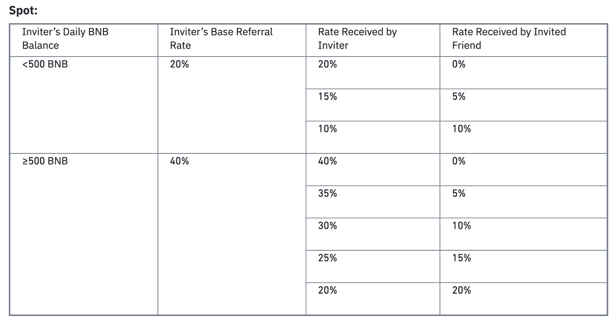

Jason Strategy Notes
什麼叫做Order Book
現在主流的交易所一般都使用Order Book進行交易，交易所在內部的Order Book上記錄所有買家和賣家的報價，比如像這樣：

Bid表示買家，Offer表示賣家，這張報價單表示買賣雙方發出的所有報價單（Limit Order）。這張表才是高頻交易最關心的信息。任意時刻，買家的出價總是低於賣家（比如這裡的98對101）。所以報價雖然一直在變化，但是只有報價是不會有任何成交的。
什麼時候會產生交易呢？有兩種情況，第一是任一方發出市價單（Market Order），比如一個買家發出一張單量為10的市價單，就可以買到賣方在101價格上掛的10份，這個交易成功之後，Order Book會變成這樣：

第二是發出一個價格等於對方最優報價的限價單，也會產生和上述情況相同的結果。
需要強調的是，雖然真正的Order Book只存在於交易所內部，所有交易都在交易所內完成，但是交易所會把每筆報價和市價單都轉發給所有人，所以所有的買家和賣家都可以自己維護一個同樣的數據結構，相當於交易所Order Book的鏡像。通過跟蹤分析自己手裡這份的鏡像變化，來制定交易策略，是高頻交易算法的核心思想。
基礎知識介紹完畢，下面為了方便大家理解，我採用一種更形象的方式來表示Order Book：
這張圖對應文章開始時的那個Order Book，應該可以明白地看出，橫軸表示價格，縱軸表示訂單量，綠色表示買家，紅四表示賣家。這樣做的目的是為了引出本篇討論的主題：冰山訂單。
通過上述基本分析大家可以看出，交易所內的交易數據是完全公開的，市場上任意時刻，有誰想要買／賣多少，所有人一目了然，沒有任何秘密。這樣做本身是有經濟學意義的，因為只有展示出買賣的需求，才會吸引潛在的商家來交易，所以在市場上一定程度的公開自己的需求是必要的。但這樣同時帶來一個嚴重的後果，一旦有某個人想要大量買／賣，他所發出的巨額限價單會直接展示給所有人。比如一個買家掛出巨額買單後，Order Book會像這樣：

這對他非常不利，因為所有人都會利用這個信息來跟他做對。大家會判斷，現在市場上存在大量的買壓，於是會出現一大批為了賺錢而衝進來的人搶購，價格會快速上升，這樣原來這個人可以在98這個價位買到的東西，很快就變得要在更高的價位上才能買到。這種情況，那些後來的人做的就是Front running，而原來的那個人則面對逆向選擇風險。
為了解決這個問題，交易所提供了一種針對性的工具，就是所謂的冰山訂單（Iceberg Order）。這種訂單可以很大，但只有一小部分是公開出來的，大部分則隱藏起來，除了交易所和發單者本人誰也看不到，真的像一座「冰山」一樣。比如像這樣：

灰色的部分就是冰山訂單隱藏的部分。這樣，只有當有對應隱藏量的交易發生時，交易所才會通知其他人，就避免了別人利用顯示訂單的信息來做Front running。
凡事有一利必有一弊。冰山訂單雖然保護了發單者的利益，但是對於其他市場參與者來說卻又變成了一種不公平的規則。那些有真實的交易需求的參與者，會因為對局勢的誤判而損失慘重。所以接下來的問題就變成，如何發現市場上的冰山訂單？
首先有一種最簡單的方法。有的時候，冰山訂單是掛在最優買價和賣價之間（spread），像這樣：

對於這種情況，有一個非常簡單的探測方法，即發一個最小額度的限價單在spread里，緊跟著取消這個訂單。比如這個例子中，發出一個賣價為99的限價單然後取消。因為這個價格本身對不上顯式的買價（98），如果沒有冰山單的存在，一定不會成交。但有冰山單的情況下，一旦交易所收到這個賣單，會立刻成交冰山單中對應的量，而之後的取消指令就無效了。這樣，以一種微小的成本，就可以發現市場中隱藏著的訂單。事實上，的確有人會做這種事情，頻繁的發單然後取消，在最優價差之間形成一種高頻擾動，用來探測隱藏單。
為了應對這種擾動探測，大家一般都不會直接掛單在spread里。而是會像之前那樣和普通的限價單掛在一起，這樣發生交易之後，你就很難推測消耗掉的究竟是正常的限價單，還是冰山訂單。那麼應該怎麼做呢？
首先有一個直接的思路。冰山訂單的存在，一定程度上反映了掛單人對市場情況的解讀，認為有必要使用冰山訂單而做出的判斷。需要強調的是，使用冰山訂單並不是沒有代價的，因為你隱藏了真實的需求，在屏蔽掉潛在的攻擊者的同時，也屏蔽掉了真正的交易者！而且會使得成交時間顯著增加－－因為沒人知道你想買／賣這麼多，你只能慢慢等待對手盤的出現。所以當有人下決定發出冰山訂單的時候，也會有對市場情況的考慮，只有合適的時機才會做這種選擇。
什麼是合適的時機？有一些數據應該是相關的，比如買賣價差spread，買單量對賣單量的比值等。對這些數據，你可以在歷史數據上做回歸分析，建立起他們和冰山訂單之間的線性／非線性模型。通過歷史數據訓練出來的這個模型，就可以作為你在實時交易時使用的冰山訂單探測器。這是 On the Dark Side of the Market: Identifying and Analyzing Hidden Order Placements 這篇論文使用的方法。
基本模型可以定義為：F(spread，bidSize/offerSize，……) = Probability(Iceberg)
如果你想玩高深的，還可以在此基礎上做HMM，SVM，神經網絡之類的高級模型，但基本思路是一致的：通過盤口分析計算存在冰山訂單的概率。
上面說的這個方法，看起來很高級，實際效果如何呢？我想大家也看出來了，這種建模不是很精確。作為事後分析手段用來說明什麼情況下可能會出現冰山訂單還不錯，但是作為實時交易的探測器就不是很放心。因為使用的信息太模糊了，而且說到底建模的對象只是一種相關性，沒有什麼保證冰山訂單的發送者一定是按照這個邏輯出牌的。
所以接下來介紹的，才是真正具有高頻玩家神采的方法，來自 Prediction of Hidden Liquidity in the Limit Order Book of GLOBEX Futures 這篇論文。
高頻世界裡，有一條永恆的建模準則值得銘記：先看數據再建模。如果你看了上面的介紹就開始天馬行空的思考數學模型，那基本上是死路一條。我見過很多年輕人，特別有熱情，一上來就開始做數學定義，然後推導偏微分方程，數學公式寫滿一摞紙，最後一接觸數據才發現模型根本行不通，這是非常遺憾的。
而看了數據的人會怎麼樣呢？他很可能會發現，對於冰山訂單的處理，交易所的規則是非常值得尋味的。有的交易所是這樣做的：一個冰山訂單包含兩個參數，V表示訂單總量，p表示公開顯示的量。比如V=100，p=10的冰山單，實際上隱藏的量是90。如果有針對這個訂單的交易發生，比如交易量10，交易所會順序發出三條信息：
- 成交10
- Order Book的Top bid size -10
- 新Bid +10
這三條信息一定會連續出現，並且第三條和第一條的時差dt很小。這樣做的原因是儘管冰山訂單存在隱藏量，但是每次的交易只能對顯示出的量（p）發生，p被消耗掉以後，才會從剩餘的隱藏量中翻新出一分新的p量。這樣，每個人從交易所收到的信息仍然可以在邏輯上正確的更新Order Book，就好像冰山訂單並不存在一樣。
因此，一旦在數據中觀察到這個規律，我們就可以非常有把握的判定市場中存在冰山訂單，並且連p的值都可以確定！接下來的關鍵問題是，如何確定V的值，即判斷這個冰山訂單的剩餘存量有多少？
這個問題從本質上說沒法精確求解，因為V和p都是由下單人自己決定的，可以是任意值。但可以從兩點考慮：第一，兩個值都是整數；第二，人類不是完美的隨機數生成器，下決定會遵循一定規律。
從這兩點出發，可以對V和p建立概率模型，即計算一個給定的（V，p）值組合出現的概率是多少？這裡不去深入探討數學分析，感興趣的朋友可以自己去看原文。簡單說，可以在歷史數據上通過kernel estimation技術來估算他們的概率密度函數的形狀。順帶一提，如果你親手編寫過這種估算程序，就會理解我為什麼在「要想成為一名優秀的 Quant 需要什麼樣的編程水平？」這個答案中如此強調編程的重要性。在數據上估算出來的概率密度函數可能會是這樣的：
這樣，當你在實時數據中觀測到一個p的值時，就可以得出對應的V值的條件概率密度函數，即上圖的一個切面，比如（p = 8）：

接下來顯然就很容易計算V最可能是什麼值了。這條函數曲線還有一個重要的作用是幫助你動態評估剩餘存量，比如當你觀察到已經有5份p被消耗掉，即可推出V>=40，由上圖即可推出新的V值和剩餘存量（V-5p）。
綜上，算法的核心在於，通過在實時數據中監測短時間內連續出現的三條相關記錄判斷冰山訂單的存在，而對冰山訂單的量化則通過由歷史數據訓練出的概率模型來完成。
相信你也會看出，這種算法並不是什麼作弊神器。它只是利用市場上的公開數據所做的一種推測。而且這個推測也僅僅是基於概率的，更多的應該是作為一種參考。它對做市商這種流動性提供者很有意義，可以使他們避免因為對局勢的誤判而遭受損失。但如果你想用它來作為一種攻擊手段，覺得自己能發現隱藏大單而去Front run，那實在是很不明智的選擇。
最後，這種算法也只是針對特定的交易所。其他的交易所也許不會採用同樣的冰山訂單處理方式。所以真正有價值的是這種從實際數據出發的建模思路，具體的算法並不值錢。
這個小算法給你展示了高頻交易領域的「冰山一角」。它看起來也許不算很複雜，但是我卻很喜歡。因為它清晰地展示了什麼叫做先有思路，再有量化。因為有「冰山訂單」這樣一個從經濟學基本的供需關係出發的真實需求，通過分析實際數據找到一絲線索，最後通過數學模型刻畫出定量的策略，這才是漂亮的策略研發。
如果違背這個原則，一上來就去搬各種高級的模型去套數據，指望模型自動給你生成交易信號，這在我看來無異於痴人說夢。遺憾的是，這個夢的確太過誘人，而這個世界也從來不缺少莽夫。
參考
- https://kknews.cc/zh-tw/news/42e2bl3.html
HFT Strategy and Backtesting
Before diving deeply into this post. I would suggest you to read the basics of high frequency trading (HFT) first: https://medium.com/@quantland/high-frequency-trading-803912b0d272
Strategy
Making the best of anything requires a very good strategy. The same is true for HFT. I roughly classify the strategies into taker and maker, and analyze the pros and cons between them.
Maker
Maker strategies post limit orders on an order book which will not be filled immediately, providing liquidity and depth. Nevertheless, they are not able to fully utilize alpha which can predict the price trend. This kind of strategy profits from the difference between bid-ask spreads.
Taker
Taker strategies utilize alpha to predict expected returns and take everything from an order book if it is profitable. In comparison to maker strategies, taker strategies are unlikely to be compensated for inventory risks. An additional cost for taker strategies is transaction fees. Some more detailed costs that needed to be covered will be discussed in the following section.
Details of HFT costs
In the previous article, we discussed about the taker fee rates for VIP 0 and VIP 9, now we dive into the details.
Referral program
Let’s take the spot market at Binance for example. Before creating an account, you can set a referral code to get the best discount fee rate for your account. If you can find an inviter with a daily BNB balance over 500 and a base referral rate over 40%, your trading fee will get a 40% discount, which is very critical for HFT. Different exchanges have different referral programs. Making sure every detailed is correct is the key to make your trades more efficient.

Binance referral, source: https://www.binance.com/en/support/faq/cbac15853b0243cda4a90c9c03ca0c38
Designated Market Maker (DMM)
Much more discounts can be obtained by higher-level investors. A designated market maker is one that has been selected by an exchange as the primary market maker. Again, take the spot market at Binance for example, the best maker fee rate for a market maker can be as low as -0.01% , which is very critical for HFT.

Binance liquidity provider, source: https://www.binance.com/en/support/announcement/0a24d83ea978466a9525c603e89368ce
Backtesting
For any kind of traded assets, backtesting is necessary (as history may repeat itself). The theory is that strategies that work in past are more likely to work again in the future.
Simulated broker
Making simulated results as close to live trading as possible is the most important thing in backtesting.
Details to consider — latency
For HFT, we need to monitor latencies for different exchanges. We need to make latencies for simulated brokers as close to live trading latencies as possible. Failure to do so will overestimate or underestimate backtesting results.
Details to consider — fill model
For maker strategies, limit orders placed on order books may influence market trends. Without dark pool data, we are not entirely sure the filled rates of our orders. To solve this problem, maker strategies need to be run live first. By collecting the log from live trading, you may make the backtesting closer to live trading when you train a fill model.
Details to consider — disconnection
Disconnection may happen from time to time due to several problems. They could be problems with our own network or with an exchange disconnection. For Long-term trading strategies, disconnection may not be a critical problem. Yet, for HFT they do. A disconnection test is necessary before a strategy can go live.
Hypertuning
Before going live, parameters require precise adjustments. Selecting a stable range for your parameters is the key for choosing the best parameter. I recommend using HiPlot for hypertuning. It is a clear and useful tool.

HiPlot, source: https://facebookresearch.github.io/hiplot/
Summary
From my point of view, it is nearly impossible for a retail investor to do HFT. HFT is a huge project. To be successful, every aspect of HFT must be the best, including trade systems, backtest systems, and alpha researches, etc. Additionally, transaction fees are another concern. The VIP 9 fee rate is a must for HFT, which is really hard for a retail investor to obtain.
- https://medium.com/@quantland/hft-strategy-and-backtesting-4266d5c41cd9
台湾版「一个投机者的告白」问世
从散户到期货经理事业董事长，
期货天王张松允透露5500倍的投资致富手法。
「人二脚、钱四脚！」投资理财不能单靠复利加乘效果；
应当着重投资操作赚钱的重力加速度，全面加快赚钱的速度，减低赔钱的速度与机率。
★跟着做★学着做★认真做
★只要习得十分之一，你也能成亿万富翁！
▼ 内容简介
不到 20 万元资金投入股市，搭配期货操作，十三年后能赚多少钱？答案是，10 亿元！一般人会觉得不可思议，但一个活生生的例子就在眼前，他就是年仅 37 岁、有「期货天王」之称的张松允。
十六年前，张松允不过是个刚退伍、仅有高工学历的小伙子，出身彰化员林农家的他却一头栽入股市，并以独到的眼光，逐渐在股市累积资金的实力……后来由于张松允个人的交易量大，因此干脆加入元富证券成为营业员（副理），并和老板讲好「不接单」，只做自己的部位，结果业界都因此知道元富有一位「不接单的超级营业员」而业务量仍常高居第一。
民国 87 年国内期货市场成立，喜好短线冲刺的张松允，简直如鱼得水，立即转战期货市场，89 年国安基金进场为新政府护盘，当时只能算中实户的张松允大举放空期货与国安基金对作，结果大败国安基金、一战成名。
张松允优异的操盘本领声蛰股市，更获得元大京华证券集团总裁马志玲赏识，而延揽其到元大京华期货经理公司任董事长，创下期货界客户变老板的先例，其致富传奇甚至跨过海峡，不断的在网络上流传而声誉大陆。
甚至在《郑弘仪谈投资致富》一书的 205 页中也谈到这个只有「员林高工」学历的「年轻小伙子」传奇致富故事。现在时报出版请到张松允现身说法，透过个人亲撰的第一本书，公开其股市投资秘诀＆操盘心得，与读者分享他的致富经验──
股市奇才张松允凭着丰富的投资经验及精准敏锐的观察力，掌握每一次赚钱的机会，财富从一开始的 20 万，16 年来，累积十余亿元的财富，投资报酬率高达 5500 倍，成功的关键，就是坚持一般人难以做到的「操盘纪律」，并且搭配最严格的资金控管，特别是股票市场瞬息万变，期货操作获利亏损更是「来得快、去得快」，如果能掌握到一些必要的纪律，一定更能帮助你累积财富，创造更惊人获利。
做股票究竟要怎么「做」才会赚钱？为什么总是赚不到钱？这一直是很多投资者心中的痛，做股票的基本原则很简单，判断市场是处在哪个阶段，顺势操作，行情走多就作多，行情走空就作空，结果只有二种选择买进或卖空。看似容易，其实是需要长期累积的经验，才能有精准敏锐的判断力。
除了遵守操作「原则」与「纪律」之外，操作「EQ 的管理」也是相当重要的。细数张松允的投资之路，16 年来几乎参与台北股市每一次的重要战役，举凡前财长郭婉蓉宣布课征证所税，连续 19 天无量跌停，股市首次上万点，第一次美伊战争，台海危机，东南亚金融风暴，九二一大地震，第一次政权轮替，停建核四，九一一恐怖危机，SARS 疫情，还有今年的总统大选政治危机等，每一次的市场气氛都是极度恐慌与悲观，可是他都能化「危机」为「转机」，关键在于克服心中恐惧，反市场操作逢低择进持股，最后终将成为市场的大赢家。正如德国投资大师安德烈?科斯拖兰尼在「一个投机者的告白」中指出，「逆向」是成功的要素，只有少数人能成功，关键在于与众不同。
此书可以让投资者了解如何「少输多赢」，启发投资者的信心，靠「股市致富」非梦事，「观念」决定能否致富，只要你能超越自我，克服人性的贪婪与恐惧，以认真的态度与稳健的方法，尊重市场，顺势而为，你就能破解散户赔钱的魔咒，打造自己的 10 亿人生。
▼ 精彩书摘
真正的投资之道，不该有过多艰涩难懂的理论基础，也不需要去当个「线仙」，画一堆无字天「线」，折腾自己。我的投资心法只有「顺势操作，多空皆宜，资金控管，克服心魔」这四个原则，利用股票、指数期货及选择权等各种金融商品的交互搭配，找寻合适时点切入。而且这四大投资心法放诸四海皆准。
▼ 作者简介
张松允 被誉为「期货天王」
生日：56年
A型，摩羯座
出生地：彰化埔心
学历：彰化员林崇实高工
嗜好：看海、看书、翻阅《易经》、打高尔夫球
第一次进场买股票：1988年
最兴奋的时刻：赚得第一个一亿元
目前身价：超过10亿元
致胜关键：资金＋胆识＋眼光
现阶段目标：45岁（民国100年）达到30亿元身价
最大的心愿：建立自己的团队，与伙伴开创一份事业
经历
77～85年 散户投资人
85～87年 元富证券襄理
87～88年 元富证券经理
88～89年 元富证券协理
89～90年 元大京华期货副总经理
90～92年 元大京华期货副董事长
92～93年5月 元大京华期货经理事业董事长
93年6月 富邦期货经理筹备召集人（期货经理公司预计93年9月开幕）
得奖纪录
⊙元富「钱滚钱实战交易」竞赛 第一名，期货交易获利率4982.38％
⊙元富「期货三冠王」竞赛 第一名
⊙期货交易所「小期兵期货交易」竞赛 第一名
⊙元大京华「期货大赢家」竞赛 第一名
⊙获期交所颁发「最佳贡献奖」以彰显其对台湾期货市场的卓越贡献
▼ 书评赞誉
不到 20 万元资金投入股市，搭配期货操作，十三年后能赚多少钱？答案是，10 亿元！一般人会觉得不可思议，但一个活生生的例子就在眼前，他就是56年次、有「期货天王」之称的张松允。
没有人可以否认张松允是台湾期货界的传奇人物。他的操作策略，温和地说是『顺势而为』，其实又快又狠，一见苗头不对，就毫不恋栈地全数砍仓……操盘已到『冷血』地步。」──《工商时报》
「张松允是期货市场上的传奇人物。除了胆大之外，临场判断能力强且反应迅速……下起单来，毫不手软。对期货天王张松允而言，输三亿元，再赚回来就是了……」──《商业周刊》
「经历飞弹危机、921地震、SARS与选后抗争等，张松允抓住投资致胜秘诀，不惧暴跌捡便宜……总统大选后股市的暴跌，他克服了人性恐惧，紧握低档良机，在这场战役中不仅全身而退，还反手获利。」 ──《中国时报》
「张松允是期货业界第一名，今年以来光他一个人的接单量就高达十几万口，是该公司第二名的10倍多，足足占了全台湾期货市场1％的量……」──《新新闻》周刊
「投资理财是可以赚钱的，特别是拥有股市的专业知识，会投资的人根本不需要怕没钱，怕失业。」 ──知名财经主持人 郑弘仪
▼ 目录
推荐序 赢家交易习性的重要观摩 文／李文兴 6
自序 惊涛骇浪时，沉着以对，等待下一次的出航 9
前言 与自己竞赛的事业生涯 13
第一章 十亿元的致富传奇 17
惊爆的三二○总统大选 19／财富累积不是靠复利 22／与股票结缘，看正新轮胎上市 24／初尝投资的甜美滋味 27／空头市场顺势作空 31／盘整期多看少作 36／不接单的营业员 37／亿元人生因电子股而展开 42／见风驶舵获利无穷 46／进军期货如鱼得水 48
第二章 股市教战守则51
决断多空 53／远离主力股 58／选股侧重流动性佳 61／不见鱼儿不撒网 63／面对多头的心态 69／从基本面判断飙股要件 71／外资不再点石成金 80／试单寻灵感、立信心 87／精明的投资人 89
第三章 千变万化的期权 93
未来式的衍生性金融商品 95／指数期货与现货要同方向操作 98／未平仓合约判断多空趋势 101／选择权成新宠 104／财务杠杆效果 108／不对称部位操作 112／资金控管至上 113
第四章 作空获利宝典 119
投资是为赚钱 120／作多作空皆宜 121／散户的优势 124／景气循环造就多空市场 126／ETF重要性渐增 130／空头市场放空要领 132／最佳空头教材 139／融资与融券的运用 144／融券放空套利千变万化 151／轧空之后必杀多 155
第五章 情绪管理与资金控管 157
攻心为上 159/利空测试底部，利多形成头部 163／手中有剑似无剑 166／面对震荡盘暂时退场 171／资金控管重于一切 174／危机与转机 178
第六章 活用基本分析与技术分析 181
先看懂财务报表 182／获得财务报表的管道 202／技术分析仅供参考 202
第七章 张松允讲股 209
〈贴近张松允〉 冷静、果敢的投机客 文／冯志源 241
天生的股市赢家 文／蔡沛恒245
▼ 推荐序
赢家交易习性的重要观摩
◎文／李文兴（元大京华期货总经理）
台湾股票市场的生态，于台指期货上市之后发生重大变化，外资挟其大量的现金、股票部位，及纵横全世界现货与期货互动的经验，在台指期货市场呼风唤雨，大赚期货的钱。虽然外资如此神通广大，但民国九十二年六月下旬至九十三年二月底，却遭到国内特定势力的痛击，外资于此段期间几乎把过去赚到的台指期货财富输光光！国安基金规模号称五千亿台币，于八十九年八月进场护盘，但只有三个月就在现货、期货市场双双失利。国内的一般投资人于台指期货市场，只要有六个月到一年的经验，碰到一波大行情之后，几乎有八○﹪的人赔钱；一○﹪刚入市场的人有赚到，但之后又把赚到的钱赔了回去，在没有盈亏的情形下离开市场；只有另外一○﹪的人是台指期货真正的赢家。综上所述，要成为台指期货的赢家可说不容易。
笔者认识松允兄是于八十七年七月二十一日台指期货挂牌交易时，当时他的财富只不过是几千万台币而已，但随后松允兄不断在台指期货市场淘金，可说是公司内传奇的人物。笔者负责期货商的经营，深知号召天下赢家于一堂的重要性，故于八十八年至九十一年举办了四次大型的期货实战交易竞赛。松允兄在这四场大赛中均拔得头筹，可见其在台指期货市场的功力。笔者是松允兄如何从几千万元变成一亿元，从一亿元变成五亿元，从五亿元赚到十亿元的见证者。快速赚进财富，是许多人共同的梦想，但有多少人能成真呢？松允兄的实例告诉我们，只要交易观念正确，就可创造满意的财富。
笔者喜欢称松允兄是天生台指期货赢家，因其个性与期货赢家的规律是浑然天成的。笔者于盘中只要有空，就实时观察众多赢家如何因应盘势变化，当然松允兄是我长期观摩的首要对象。不预设立场多空，一切顺势而为，赔钱跑得快，赢钱要加码，并做好严格的资金控管，大功即可告成。说得简单，但平常人要能修练成上述交易习性，可说少之又少，毕竟「江山易改，本性难移」，人之所以为人，就是俱有人性，但人性往往与上述赢家规律背道而驰。
松允兄的《从20万到10亿》新书出版之际，邀笔者为之作序。谨以此序，感谢松允兄过去六年来的支持，并祝本书之读者能由此成功个案，修练成赢家交易习性，则功德无量矣！
自序
惊涛骇浪时，沉着以对，等待下一次的出航
◎文／张松允
我喜欢看海，海浪一波一波滚滚而来，有如人生起伏，有涨潮有退潮。而股票市场也如大海波浪一样有涨有跌，有时波涛汹涌，有时风平浪静。波浪象征大海的力量，所以在股海中若能顺势，就可顺着海浪冲力，享受「冲浪」的乐趣，若硬要逆势而为，很可能会被无情的大海所吞噬而惨遭灭顶。
股票市场之所以吸引人，在于它提供了人人均等的机会，不论学历高低、年龄大小，大家的游戏规则都一样，不会因为学历高就有优势，年纪长就占便宜，只要你拥有资金，就有机会翻身变成大富翁。我常把资金比喻成我的「武器」，有了「武器」就可在股市里冲锋陷阵，既刺激又有趣，但股市处处有陷阱，若不下一点苦工，可能很快就弹尽援绝。
其实讲到股票最深层的是心理面，华尔街投资大师彼得．林区（Peter Lynch）曾说：「决定投资人命运的既不是股票市场，也不是各上市公司，而是投资者本人。」「自己」才是最大的敌人，要下场前一定要衡量自己的「个性」与「能力」，找出适合自己的方法，是要攻击还是要防守。我给上班族的建议是「等待机会」，因为一般上班族没有时间看盘，因此最重要的便是掌握最佳出手点，像这几年来有好几次因非经济因素而造成股市非理性下杀，往往就是最佳的买点，只要能够克服恐惧的心理，反市场操作，短时间都可获利两成以上。
二十五岁时我自己订定目标希望四十岁能赚到一亿元，这个目标在三十岁就达成，而且更在股票的世界里，打造了自己的十亿人生。的确，靠股票致富并非绝对不可能，但那必须以很认真的态度和稳健的方法，堂堂正正地投资，并要能克服人性的弱点∣∣贪婪与恐惧。这一点也许大家都知道，但真正能做到，并从股市赚到钱的又有几人？
时报出版公司并不是第一个邀我写传记和投资策略的公司，先前就有许多人向我邀稿，但我一直不肯答应著书立作，因为我担心这样的故事公诸于世后，会让很多人误以为股市、期货的钱很好赚而竞相仿效，最后却成为市场的牺牲者。
但是这些年来，有关我的报导纷纷出现，部分报导却过于侧重我财富的迅速累积，而鲜少谈到身为一个投资人应有的正确态度，如果因此误导大众，造成别人倾家荡产岂不祸及无辜？
因此我决定写下自己的投资经验，藉此告诉广大的散户朋友，要靠投资股票致富是件「几近不可能」的事。投资股票必须以极认真的态度、相当稳健的方法才有机为成为可能。从我纵身股海十六年来，我几乎不曾松懈过，就是因为深知市场没有永远的赢家、股市没有不败的神话，永远保持一颗谦卑的心，因此勤于收集各种重要统计资料，每天详加分析，然后从中判断经济可能的变化，这就是我的基本功课。尤其要对于市场各项原始的基本数据保持兴趣，而不是光听别人的分析、意见，才能成为市场的先知先觉者。即使是现在，我也是自己作国际情势的分析和判断，绝不仰赖他人，每天早上八点三十分就是我决断大盘走势的开始。
这几年来由于市场参与者的结构改变，台股现在又有对冲基金的加入，以致对利空与利多反应常常过度，造成股市震荡激烈，散户「上涨时过度乐观、下跌时又极度悲观」，因而损失惨重。虽然说成功的经验难以复制，但我仍乐于与投资人分享我的投资心路历程与心得，更希望投资朋友能够藉由本书悟出自己操作的方法，不在股海中浮浮沉沉。
最后，个人有幸在波乱的股海中生存下来，也亟思回馈这块生养我的土地，此书未来的版税将捐赠给慈善团体。取之于社会，用之于社会，是资本家最终的使命。
▼ 书摘
第一章 十亿元的致富传奇
我的投资致富之道没有艰涩难懂的理论，
也不需要当「线仙」，
画一堆「线」来折磨自己，
我的投资心法很简单，就是
「顺势操作，多空皆宜，资金控管，克服心魔」这四个原则。
「投资致富之道为何？」一直是古今中外谈论不休的长青话题。我进入股票市场已经有十六年了，回顾这十六年来，台湾股市发生的每一个关键大事，我都有幸参与其中，举凡前财政部长郭婉容宣布课征证所税、股市首次上万点、伊拉克入侵科威特、第一次美伊战争、台海危机、电子股多头时代、亚洲金融风暴、九二一大地震、第一次政党轮替、政府宣布停建核四、国安基金护盘失败、美国九一一恐怖攻击、ＳＡＲＳ疫情，以及民国九十三年的总统大选政治危机、中国宏观调控等。在这些惊涛骇浪中，我的财富从最初的二十万元累积到现在超过十亿元，这样的财富累积过程，几乎可算是一部台股的活历史。
真正的投资之道，不该有过多艰涩难懂的理论基础，也不需要去当个「线仙」，画一堆无字天「线」，折腾自己。我的投资心法只有「顺势操作，多空皆宜，资金控管，克服心魔」这四个原则，利用股票、指数期货及选择权等各种金融商品的交互搭配，找寻合适时点切入。而且这四大投资心法放诸四海皆准，不论是古今中外、男女老幼，只要每个投资人真的读通了这些观念，一定也能创造属于自己的「亿元人生」。
惊爆的三二○总统大选
三月二十日晚上我打开电视，本想看看民国九十三年总统大选最后开票结果，结果出乎全市场意料的是，连宋竟然以不到三万票的差距败给扁吕，更令人跌破眼镜的是，连宋并未放弃任何扭转乾坤的机会，不只没有宣布败选认输，还提起「选举无效之诉」。听到这句话，我每一条敏感的投资神经瞬间都站了起来，心想，毁了，两颗子弹，一场政治风暴，族群的撕裂对立，一连串的政治核弹，对于选后三月二十二日开盘的台股恐怕是凶多吉少。
和四年前总统大选后的股市风暴一样，台股选后第一天又面临无量重挫的窘境，好几个股民朋友无奈地和我抱怨，「连宋可以提选举无效之诉，我们这些无辜的股民是不是也可以提出台股开盘无效之诉？」这句话道出了散户的无奈，让我想起ＩＮＧ安泰人寿的那句广告词：「世事难料，对人要更好。」我读着报纸，心里想着，投资人实在太恐慌了，其实这种不理性的杀盘，绝对是进场抢便宜的好时机，而不是追杀股票的时候！
总结新闻中的报导，还真是「骇人听闻」，显露出过度的恐慌：
? 外资下达减码令，本土法人基金赎回卖压不小，三大法人狂砍四百亿元。
台股昨日自一滩死水中回复生气，满手股票来不及砍仓的三大法人，昨日狂卖台股近四百亿元，创史上新高纪录。其中外资卖超近一百九十五亿元，投信卖超近八十九亿元，自营商更卖超近一百一十二亿元。法人圈指出，三大法人「夺门而出」，总统大选所衍生的市场冲击仍方兴未艾。
? 大选摆中间，私情放一边，亲子不合、朋友反目、情侣闹翻戏码不断上演……选举情绪延烧，对立气氛难消。
? 台股本周市值蒸发一兆四千亿元，每位股民平均损失二十万元，期货投资人亏光本金还得追缴。
碰上这次「政治空袭」的股民，损失究竟有多惨重？台股单周跌幅超过一成，整体市值瞬间蒸发一兆四千亿元，七百万股民平均每人损失二十万元。投机股太危险？那么抱牢绩优股吧，结果连联电、台积电连续拉出两根跌停，长期投资者也讨不到便宜。
? 选前压宝选后伤心，期货投资散客惨赔，逾亿资金全投入，风险未控管，三二○后股票狂跌两天，保证金被追缴，还遭断头杀出，只能无语问苍天……
总统大选的政治争议，导致台股选后连续二日狂挫，期货市场更面临前所未有的跌停危机，国内某大型期货商一名刘姓散户向媒体爆料指出，选前看好连宋当选，压宝近七千万元于台期指多头部位，选后短短两天被期货商无情断头，最后不仅血本无归，还倒欠期货商四千万元，累计惨赔逾一亿元，是目前市场上单一散户选后亏损最大的案例。
看到这些报导，大部分的散户投资人绝对是吓得连魂都没了。选举的结果与台股的暴跌（参阅图1.1），虽然和市场原本的预期落差很大，我的期货操作也因此被追缴了两亿元以上的保证金，可是我并没有因此而感到恐慌，反而像只老鹰，积极寻觅可以出现超额利润的机会。其实我的想法很简单，既然要在股票市场中打滚，每个人当然都想要赚钱，想要致富，那么就应该保持冷静，做好资金控管，愈能冷静，才能在这种激烈的恐慌性杀盘中逮到契机！如果只是在整个市场兴奋的时候跟着激情，恐慌的时候跟着追杀，这种追涨杀跌的操作方式绝对赚不了大钱。
财富累积不是靠复利
很多理财高手谈致富之道时，很喜欢引用「复利」加乘的观念，认为只要每一年投资报酬率能达一五﹪以上，五年后本金就会变成原来的两倍，十年后就是原来的四倍，经过每一年时间的加持，很快就能出现十倍甚或百倍的投资报酬率。我的看法和这些理财高手不同，我的观念是，财富的累积应该是全面加快赚钱的速度，减低赔钱的速度与机率，并着重投资操作赚钱的重力加速度，而不是求一个平均投资报酬率。没有一个投资工具或金融商品可以保证每年稳定获利，固定的年投资报酬率大部分是建立在多头的环境与成功的操作，诸多客观条件缺一不可，但谁又能保证每一次的操作都没有任何闪失呢？所以，只有在机会来临的时候全速获利，这样累积财富的速度才会又快又猛。
一般的散户之所以无法累积财富，就是「赚钱的速度太慢，赔钱的速度太快」。该冲的时候不冲，怕东怕西，而失去赚取大波段行情的机会；但是该忍的时候又没能忍住，一味地「冲冲冲」，最后冲过了头，尤其是九十三年的总统大选前后，散户就像洗了好几回三温暖，从兴奋莫名，到万分失落，再到欢声雷动，一个月当中来回的震荡幅度就超过一千点，可是大部分散户投资人的荷包并没有因此增加，只有跟着缩水的份。
财富累积靠自己
有人问我现在的身价有多少？从一开始仅有的二十万元，经过十多年的来回打转，掌握每一次赚钱的机会，十六年来，总共累积了超过十亿元的资产，投资报酬率高达五千五百倍。这个数字看起来吓人，可是我想强调的并不是数字的变化，而是要让投资人知道，任何的成功绝不是偶然的。我从来没有向父母亲伸手要求过一分一毫，每一分财富都是靠自己一点一滴挣来的，我和其它散户朋友一样，没有显赫的家世背景，只有一颗对数字敏锐的头脑，加上比一般人更为坚守纪律，并且搭配严格的资金控管，把赚钱的速度加快，赔钱的速度降低，久而久之，财富就这样累积出来了。
与股票结缘，看正新轮胎上市
谈到与股票结缘，还真的只是一个偶然的巧合。我是彰化乡下土生土长的小孩，在投资风气尚未普及的年代，连什么是「股票」都不懂，当兵出社会之前，从来也没想过会进入投资股票这个行业。民国七十六年，因为正新轮胎（2105）以每股四十元挂牌上市，正新的公司就在我家附近，很多邻居朋友也都在这家公司上班，所以正新的挂牌上市，在家乡就自然而然演变成一桩大事，当时还是个大头兵的我也忍不住关心起来。
正新上市之后，我看着它的股价在黑板上每天被「红框框」包围起来，没多久就攻上五十元，再过一个礼拜，变成六十元，一个月左右不到的时间，只要拥有一张正新股票，就能「平白无故」地多赚了两万元，这个数目可是当时上班族一个月的薪水哩。那时我心想着，「天底下哪有这么好康的事情？」但它真的发生了，于是我开始想象要是能把二十万元的存款换成正新股票，那该有多好。
不只是正新，后来我也注意到很多股票挂牌之后，都莫明其妙地涨了好几倍。这个现象燃起了我全身每一寸细胞和每一根交感神经的热情，股票市场真的是一个迷人的所在，「投资一个月可以抵半年薪水」，这种致命的吸引力实在太刺激了。后来只要军中一放假，我就会北上台北，直接到馆前路附近的券商去体验股票的神奇与热情。
兴冲冲跑去开户，却被拒绝
民国七十七年之前，全台湾大概只有二十多家证券商，个人拥有一个股票交易账户可说是尊贵的象征，要是没有门路，没有熟人介绍，想要开户还真的难如登天，不像现在这么普遍。民国七十七年八月，我找了一天休假的空档，身上背着二十万元的现金，兴冲冲地跑到台北市馆前路的仁信证券开户，一踏进仁信证券，居然因为没有介绍人，被狠狠地拒绝办理开户。趁兴而来却败兴而归，连开户都被拒绝，我心里当然是相当难过，后来隔了两三个月，一天下午，我看到重庆南路上的永霖证券（日盛证券前身）门口堆满花圈、花篮，大门上贴着「投资讲座，欢迎入内」的宣传告示，敏感的我立刻被吸引进去。才刚走进大厅，就有一位服务小姐亲切地询问我要不要开户。「我没有介绍人耶！」我很老实地回答她，没想到她竟然说，「没问题，我可以当你的介绍人啊！」当时的她就好像一个天使一样，拯救了在投资路上一度沮丧的我，帮助我开了人生第一个证券户，开始漫漫的投资生涯。
▼ 书摘
股票投资大有学问
我那时虽然才刚满二十一岁，除了当兵、打工，根本没有任何正式的工作经验和专业背景，但或许是我的工科背景，让我有比一般人更敏锐的数字观念，闪过脑海的每一文件股票价位、涨跌幅、Ｋ线图，样样都难不倒我，然而亲自下海买股票却完全不是这么回事。第一次买股票时，我买了大同、声宝这些股票，买进后股价却不动如山，和我预期的不一样，我不禁纳闷地问自己，「怎么自己买的股票都不动？别人的倒是猛涨？」我后来才知道，股票投资可是大有学问，不只要研究基本面，技术面、筹码面也都要能了解才行，所以我便下定决心要埋头苦读作功课，从产业的上下游、同类股的比较、国际股市的连动，到市场脉动的掌握，练就了一些功夫后，买股票才慢慢开始有了对的感觉，很快就能得心应手。
初生之犊不畏虎
金融股是民国七十年代最热门的族群，当时的国泰人寿、中华开发、三商银，档档都是三位数的惊人股价，国寿曾创下一千九百七十五元的骇人天价，开发金也有一千零七十五元，让很多投资人都只能远观而不能亵玩焉。民国七十七年前财政部长郭婉容宣布要课征证所税，我看着台股连续无量下跌二十一天，一直到五千六百点才止跌。现在回忆起来，也许是初生之犊不畏虎吧，我那时并没有特别害怕或悲观的感觉，反而认为是绝佳的进场时点，就好像百货公司跳楼大甩卖的时候，正好可以大肆采购一番。可是巧妇难为无米之炊，尽管想投资却没有本钱，于是我鼓起勇气，开口向老爸借钱要买股票，老人家听完之后，当面斥责：「不行，买什么股票？什么不学去学人搏ㄍㄧˋㄠ？少年家，还是去做几挂正当ㄟ代志。」
初尝投资的甜美滋味
被老爸断了买股票的念头后，只能自力救济了。可是当大头兵的时候，不可能抽出时间天天看盘，一直到民国七十八年初正式退伍，为了专心赚钱，我下定决心要做个全职的投资人，除了每天三个小时看着股海翻腾，在号子里杀进杀出之外，十二点收盘后，我还会去旁听投资讲座，后来听到几个分析师介绍光宝时，说这家公司生产计算器，前景一片光明，业绩好到不行……当时不太了解是真的还是假的，可是我看光宝股价不贵，每股也才二十几块钱而已，于是就毅然决然把所有的钱都投进去，买了十张光宝股票。
买了光宝以后，当时因为要回彰化老家帮忙处理一些事情，前前后后有一个多月的时间没去观察它的股价走势，等我想起来的时候，「哇！我的光宝已经涨到快四十块钱了，不到两个月就赚了一倍耶！心中只有一个爽字了得。」当时一个刚退伍的年轻小伙子，每个月薪水也不过两万多元，可是我只是买了一档股票，两个多月就赚了人家一年的薪水，我心想，要是我的本金再厚实一点，再多买一点股票，那么投资报酬不是很吓人？这是我第一次投资股票大赚的经验，也是我第一次尝到投资股票的甜美滋味。
杀进杀出，抓龟走鳖
无缘无故赚了二十万元，虽然让我暗自窃喜，不过太早成功对我来说并不是件好事，满脑子只想要仿照光宝模式，希望黑板上每一档股票都能大涨个好几倍，常常没作基本面研究就杀进杀出。结果大盘在七十八年初一路从四千多点涨到八千多点，可是我的钱最后还是维持在四十万元，尽管指数涨了一倍，我的财富却连一丁点也没增加，我发现这种追涨杀跌的投资方式，是无法累积财富的，于是我深刻反省，决定要彻底改正这种错误的投资策略。
我反省的第一个地方，就是进出过于频繁，错失波段行情。买这个也好，买那个也好的菜篮族心理，往往让火力不够集中，不仅常常三心二意，杀进杀出的结果，无形中还因此垫高交易成本，真的买到好股票的时候，往往也没耐心抱住赚足波段，是标准的「抓龟走鳖」。有一次，一个朋友说要请客作东，因为我推荐给他的股票大涨，让他赚了大钱，他也同时向我道贺，而我却只有苦笑的份。因为频繁换股的结果，让我抱不住好股票，结果人家赚大钱，我只能在旁捶心肝，而且赚的都是小钱，拿来缴交易税都还不太够。
挑龙头指标股就对了
除了换股过于频繁之外，另一个大毛病，就是没选龙头指标股，反而选了次等的补涨股。我当时有个错误的心态，认为龙头股起涨了，在不追高的原则下，应该去挑其它同类型的股票，才有补涨的机会。可是这个观念是彻头彻尾的错了，因为同类型的补涨股虽然会跟着龙头股动，但是龙头股不涨的时候，补涨股往往也涨不到哪里去，只要行情一回档，「涨时重势跌时重质」，补涨股一定会领先回跌，这种涨没份、跌却有份的股票，不是真正能让你赚大钱的股票。所以我后来明白，「买股票一定要买最强的龙头股，绝对不要买落后补涨股」。以金融股为例，现在就要买国泰金、台新金、新光金，不要去挑东企那些补涨股，面板股当然是友达、奇美电，ＤＲＡＭ股就以力晶为上上选。
于是我要求自己缩小投资标的，留仓的股票最多不超过五档，不要想买青菜又买萝卜，而且一定只挑最强的指标股。一转换投资心态之后，果然真的开始赚钱了，后来指数一路由八千点攻上一万两千点（参阅图1.2），我的财富也从四十万元成长到一百万元。
空头市场顺势作空
财富累积到百万身价的那个时期，是我操作生涯中很重要的一个分水岭，因为我观察到盘面的气氛不太对劲，以前大飙特飙的股票都涨不动了，盘面上涨的，都是一些没没无闻的投机股。而大部分的股票要不是开高走低，就是无缘无故大跌，和以前怎么买怎么赚的时候出现极明显的落差，这时我才真正体认到，空头市场来了。
多头市场往上作多容易赚钱，而空头市场理论上当然要往下作空，才能赚得到钱，可是说得容易，作起来可是相当不简单，因为作多作习惯了，要和经验法则违背，的确是一个很大的挑战。一开始我也是胆颤心惊，很多人还跟我力劝说，「人家都买涨，就你看坏，什么不好作，偏偏要作空，要是股票因为被你放空而跌了，你的罪过岂不是很大？」这些话听起来很沉重，但我认为，趋势的力量是不可违逆的，市场趋势往下，逆势作多岂不是螳臂挡车？买股票哪有只管涨不管跌的，而且观察过去台股的历史走势，台股于民国六十六年涨到八百多点，又回跌至四百多点，七十六年也从四千多点回跌到两千多点，每一次多头行情之后，一定是伴随着空头行情而来，因此只有顺势操作才是正确的操作方式。
空头市场来临之后，很多股票跌的速度比涨的速度还吓人。市场经验告诉我们，股票下跌的速度往往大于上涨的速度，原因是恐惧造成恐慌性反应，很多股票好不容易涨了二、三个月，不到一个月的时间就全部跌光光了。我第一檔作空的股票是食品股的大成（1210），当时大成股价还有一百多元，一直跌到三十多元才陆续回补（参阅图1.3）。短短一年的时间，我还陆陆续续顺着趋势作空不少股票，民国七十九年底的时候，我的财富从一百万元再增加到三百万元，这些都是拜空头市场所赐。
贪婪的梦魇
操作一路坦顺的我，不知不觉却开始陷入一个充满危殆的陷阱。被归类为轮胎股的泰丰，工厂位在中坜的高速公路交流道与纵贯路上，地段交通十分便利，土地面积又高达五万七千九百五十三坪。由于泰丰逐年将生产线移往大陆，国内实际所需要的厂房面积不大，加上政府鼓励土地开发，泰丰的资产想象题材油然而生。
泰丰持有土地成本不到三亿五千万元，当时市场吹嘘，若开发为休闲餐饮、电影院、运动俱乐部及购物中心等多功能生活商业广场来计算，完全开发的潜在获利就高达一百亿元以上。这对股本仅有二十六亿元的泰丰而言，每年一股配一股，连续发放好几年都还有剩，哪里去找本益比这么低的股票？而且当时泰丰的筹码已被主力盯上，想必又是一连串的飙涨。就在这种贪婪的心态下，经验不足的我便忍不住跳下去买了泰丰，想不到这却是一场梦魇的开始。
持有泰丰以后，泰丰股价并没有如我想象的出现大幅飙涨，反而开始无量跌停。心中第一个疑问是：「奈ㄟ安呢？」接下来就是从一连串的疑问转为恐惧，因为我发现即使想挂跌停砍掉，都还砍不掉。当时是融资买进的，每天开盘前就挂卖单，无奈成交张数都是个位数，只能眼睁睁地看着股票被死锁卖不出去。这是我第一次在股票市场感到恐惧，每天都是茶不思，饭不想，「到底什么时候才卖得掉啊！」真的欲哭无泪……
连续跌了将近十根跌停，好不容易才把泰丰卖掉，账面上的亏损却已经超过一百万元。后来泰丰出现反弹，我也毫不客气地反向放空泰丰，虽然获利幅度不大，却也算是报了一箭之仇，直到现在，有时回想起来，身上的每个毛细孔都会不由自紧缩起来，令人毛骨悚然。从此我下定决心再也不碰主力股，面对利空，也逐渐能够克服心中恐惧，在每一次的利空中都能临危不乱。
▼ 书摘
美伊战争后，利空出尽重新翻多
公元一九九○年（民国七十九年）八月伊拉克入侵科威特，世界大战一触即发，当时股市极度恐慌，一度还跌到只剩两千多点，我也依照判断一路作空（参阅图1.4）。美国于一九九一年初率各国联军攻打伊拉克，美伊战争爆发之后，台股当天开盘也出现暴跌，很多股票都出现跌停；可是没多久，指标股陆续敲开跌停，我心想，市场消息这么空，但黑板上的反应却不是这样，大盘利空不跌，很有可能是落底的迹象。于是我当下先回补空单，反手作多，没想到尾盘真的很多股票都开低走高，全面大涨。后来黄金价格也从每盎司四百多美元一路重挫，代表避险的黄金价格走软，显示发生世界大战的机率降低了，既然市场潜在利空消失了，当然只有偏多的道理。我的财富也在这段时间出现倍数的惊人成长，短短一年的时间由三百万元大幅成长到一千万元。
坦白说，学会作空之后，的确比较能感受到市场的真正脉动。我认为操作一定要灵活，绝对不能像僵尸一样死板板的，很多投资人都把「投资」想得太复杂，其实投资就是买和卖两种动作而已，作多容易赚钱，就一直作多，作多不容易赚钱，反而容易赔钱的时候，就要反过来作空。只要你尊重市场，顺势操作，最后一定是钱追着你跑，而不是你追着钱跑。
盘整期多看少作
美国攻打伊拉克后，虽然出现一波急涨行情，不过后来台股于民国八十一年到八十六年间，出现过去极罕见的「鸡肋行情」，食知无味，弃之可惜，陷入极长一段时间的大盘整。在作多也不是，作空也不是的尴尬情况下，我选择退出观望，只有少部分的资金在市场来回操作，重新等待进场的机会。大部分时间我都是多看少作，但是在正确的操作观念引导下，我的财富在这五年间也从一千万元成长到三千万元。
莎呦娜啦，融资
财富累积到三千万元之后，因为投资部位变得比较大，所以我在投资策略上作了一个很重要的决定，那就是不再融资买进股票，以降低投资风险。为什么要放弃融资买股票呢？这样不是会降低赚钱的速度吗？这句话只说对了一半，我的观念是，刚开始因为投入的本金很少，累积资本是最辛苦的，因此可透过融资来进行操作；可是累积资本到一定程度之后，就不能不顾虑到风险的问题。比方说，我的财富累积到三千万元时，三千万元和六千万元都是千万级的，二者差别感觉并不大，可是三千万元和零的感觉可就差很多了，为了避免因为操作失误所带来的风险，所以我买股票开始用现股买进，而不再使用融资。
不接单的营业员
当了好几年的散户投资人之后，民国八十六年我刚满三十岁，有一天晚上我作梦，梦里儿子问我说：「爸爸，你在哪里上班？你的工作是什么？老师要我们写作文『我的爸爸』。」我突然惊觉到还真的没办法回答！总不能跟小孩子说「我是在做股票的」吧！为了给家里一个交待，于是我正式加入元富证券担任营业员，这算是我人生中第一个「正当」的工作，至少以后我还拿得出名片，对我的孩子说：「爸爸是元富证券的襄理喔。」
当营业员除了给家里一个交待之外，另外一个最重要的理由就是要能「实时下单」。因为在电子股刚刚崛起、风起云涌的时期，很多投资人一大早赶到号子就是要排队下单买电子股，我若是挤在一票散户中下单，常买或卖不到我想要的股票与价位，可是在杀进杀出的过程中，时机（Timing）的掌握很重要，只有在第一时间领先别人买进或卖出股票，才能卡到最佳的战略位置，获利才会比别人多，损失才会比别人少。而下单想要领先市场，就只有当营业员一途，这样不仅可以在最快的时间内抢单，还能参与公司会议，讯息比较多，也能直接感受到市场丢什么单、进什么货，盘后更可以看到大户的报表，是一兼二顾，摸蛤仔兼洗裤的事。
担任证券营业员之前，我只是个散户投资人，早盘八点半就定位，十二点收盘就离开了，生活过得比较简单，朋友也不多。而且坦白说，只单纯做一个全职的投资人和每天提着菜篮去号子的欧巴桑好像没什么两样，感觉总是怪怪的。可是营业员不同，不仅同时可以保有投资人的角色，又能兼负证券公司员工的角色，「感觉更专业」。但我加入元富证券当营业员时，一开始就和老板达成协议，我是「不接单」的，听来好像很怪，主要是因为我自己的部位不小，无暇兼顾其它散户的下单，而且我自己操作的部位也足以支持所需的业绩了。后来有一票慕名而来的散户指定找我下单，我碍于分身乏术都一一婉拒，久而久之大家就习以为常，业界也都知道元富有一个「不接单的营业员」。
当了营业员之后，才知道散户真的是千奇百怪，无奇不有。曾经有一个阿伯抱着一堆钞票来到营业大厅，开门见山就说要买股票，问他：「要买哪一支？」他只说：「我要买被红框框框起来的股票。」还有的投资人不知道股票名称，就指定黑板上第几排第几列的股票，下单方式都是土法炼钢。
可能是因为我的操作方式获利表现还不错，在不接其它散户单的情况下，一天的总成交量就有两、三千万元，业绩直冲分公司第一，不久后又冲上全元富的第一。许多投资人开始好奇，每天都想打探我下了什么单？而我也抱持着开放的态度，大方地直接告诉他们我的投资组合，并且鼓励他们一起来跟单。也许真的是「越诚实的话越没有人愿意相信」，像华硕、鸿海这些真正的飙股反而没有什么人跟单。
「汰弱留强」提升绩效
每当投资人问我该买什么股票、台股后市如何时，我都据实以告，但时间久了，老实说还真的满伤脑筋的，为了避免困扰，我干脆公布我的私人账号，让任何有兴趣的投资人打开计算机就可以直接看到我的操作明细。可是当我开诚布公之后，投资人好像还是「问心酸」的，真的和我一起下单的并不多，大多数投资人还是挑自己喜欢的或是低价的股票进场，而凑巧的是，他们买的通常就是我小赔的股票。
有时候想想，投资这件事必须有一贯的想法及逻辑，而且要一以贯之。曾经有位投顾界的朋友透过管道指名要跟我的单，我一口答应，但他跟了几天后发现我也是会亏损的，间接等于告诉大家，「我是人，不是神，也会有做错看错的时候」。于是他的投资策略竟然一百八十度完全大转变，开始和我对作起来，刚开始时，他还真的看对了好几次，可是就在一次「大战役」中，我大赚离场，他则是重伤出场。
跟了我的单却赚不到钱，是大部分投资人最纳闷的事，不过这当中的关键，主要还是因为我的交易策略很灵活，交易标的广泛，交易频率也很密集，有时候一个早上三小时的交易金额就是上亿元，档数更可能有十多种到数十种之多。但我严设停损，一不对劲就出场，可能赔钱的个股很多，但每档都是小赔数千元到数万元不等，而少数几档个股是赚了好几成以上的，因此加总下来，整体绩效还是很好。
曾经有位投资朋友帮我试算每一百档股票中赚钱与赔钱的比例，结果是五六：四四，也就是五十六档赔钱，四十四档赚钱，可见我的看法并不全然正确，但是只要是赔钱或看错的股票，当天收盘前我会尽量全部停损，只保留看对的部位，也就是「汰弱留强」。相反的，一般散户投资人总是卖掉最赚钱的股票，把套牢的股票留着，结果就是恶性循环，投资绩效也愈搞愈差。这便是重要的差异所在。
投资擂台结识同好
为了刺激交投与券商业务，过去不少券商会设计一些投资竞赛，吸引投资人参赛来打响公司知名度。民国八十六年我在元富证券担任业务襄理任内，参加公司主办的投资竞赛，第一次参赛就得了冠军，除了奖金的直接鼓励之外，最大的收获还是建立投资信心。
前前后后我一共参加了四次券商主办的投资竞赛，除了其中一次是第二名外，其它几次都是冠军，单是投资竞赛的奖金就赚了一千万元以上。而且强中自有强中手，在几次的投资竞赛中，我也结识了很多真正的市场好手。或许是英雄所见略同，我发现这些高手的基本操作态度和心理建设都差不多，大家「互相漏气求进步」，一次又一次的交流，操作技能就更炉火纯青了。
后来券商举办投资竞赛的次数明显减少许多，宁愿改在下单的手续费上作文章。可能是因为券商发现获胜的人总是那几个熟面孔，再加上金控整并与空头市场来临，如今少了获取这些「外快」和与高手相互切磋的机会，心中不免还是有些惆怅。
▼ 书摘
亿元人生因电子股而展开
担任元富证券营业员期间，是我另一个人生的重要转折点，因为拜电子股多头行情之赐，短短一年多，我的财富从原本的三千万元一举冲上一亿元，成就我人生中第一个「亿元人生」。台股也因此出现一波多头涨势，一度还攻到万点大关，只是主流类股不再是过去的金融股，电子股正式堂而皇之地取代了金融股的地位。
当时的电子股到底有多热？以华硕（2357）为例（参阅第二章图2.8），民国八十五年十一月以一百一十五元上市后，挟着主机板产业为华硕带来的高获利与光明前景，华硕甫一挂牌就展开连涨十多根停板的蜜月行情，中途连开都没开，一直攻上三百元后，涨停板才真正打开。而外资在评估之后，认为华硕潜力十足，也开始大幅加码，于是华硕除完权后再次启动二次蜜月行情，一路攻上八十六年年中的八百九十元。而且华硕当年还配发高达十五元股利，不到半年，华硕再度攻上七百八十元。不只华硕，当时每一文件电子股都很热，而且只要除权就一定填权，多头行情非常的热，很多人在这个时候都因为「电子股」累积了可观的财富。
民国八十六年到八十七年间，电子股异军突起，文件文件股价都超越过去动辄千百元股价的金融股，让很多传统投资人无法接受。除了华硕之外，鸿海于八十六年五月底，股价站上一百七十元（参阅图1.5），正式超越金融股龙头国泰人寿，很多投资人就批评，「鸿海才没几间工厂，股价涨到几百块，笑死人」。大部分投资人都不明白鸿海凭什么涨得比国泰人寿还高，而忽略了电子产业蓬勃发展的多头趋势，但是后来每一文件电子股股价几乎都超越国泰人寿，就连最低价的大众计算机（2319），股价都逼近国泰人寿。电子股的市场认同度远远高过金融股，当时市场的投资观念正式出现一场「工业革命」，而我的选股哲学也随之大为转变。
不要说是一般营业大厅散户，就连同一个营业大厅的同事营业员，也不太能认同我的选股哲学，在他们的观念中，电子股只是拥有破旧厂房的接单「贸易商」，没有土地、资产，更没有产业前景，要超越金融股实在没有道理。经常在营业大厅听到同事相互咒骂好几档飙得很凶的电子股，「鸿海也能比国寿高？」、「大众计算机股价也能破百元？」……
很多散户朋友因为过去传统的印象，没有办法接受电子股超越金融股的事实，可是话说回来，所有个股都是从基本面的获利角度评估，获利高，产业前景自然就好，没有舍弃投资的道理。市场没有永远的明星，股价会说明一切，投资人要是能愈早接受电子取代金融的新观念，愈能提早赚到大钱。所以从民国八十六年开始的那一波电子大行情，跟上的人就是富贵逼人，没跟上的也只能大叹时不我予，可是后来这些「铁齿」的人开始进场买进电子股的时候，台股已经登上万点，开始进行反转，这又是一般散户无法摆脱的宿命。
说得更白一点，投资选股不该有既定立场，只要是会赚钱的股票，就是好股票。投资人来这个市场，就是要赚钱，什么股票能赚钱，就应该积极拥抱，至于该抱金融、电子，还是传产，都不重要。就像邓小平说的猫论一样，管牠是黑猫还是白猫，只要是会抓老鼠的就是好猫，都不要预设立场，预设立场只会妨碍投资的视野。
衣锦还乡
我并不是一个很重视物质享受的人，三十岁以前，我都是还是坐公交车上下班，赚到人生中第一个一亿元之后，才决定买一台奔驰车来犒赏自己。有一次开着新买的奔驰车回彰化乡下家中，我西装笔挺，打开车门时，一脚爆亮的皮鞋踩在老家院子的地板上，铿锵有声，我记得老爸老妈都吓坏了，还以为是哪个角头老大来了。当他们知道我的成就之后，也觉得与有荣焉，虽然有些邻居说我臭屁，但也不得不佩服我的本事。
后来我在家乡买了块土地，翻新老家祖厝，这是我第一次拿出赚来的钱帮忙家里，改善家中的生活条件。虽然好像有点俗气，但赚钱的最终目的不就是要改善自己和家人的生活吗？所以我鼓励所有的投资人，正确的投资操作观念不仅能增加财富，对于生活质量的提升，更是最切身的效益。
见风驶舵获利无穷
民国八十六年到八十八年，是台股流年不利的一段时期，几乎每一年都会出「大代志」。八十六年的亚洲金融风暴，索罗斯大举袭卷泰国、香港等地股汇市，台股一下子爆出数十档地雷股；八十七年的两国论，台股涨上八千点后又被政治风暴打到五千四百多点；八十八年的九二一大地震，重创中台湾经济神经中枢，内需股和金融股受伤惨重，钢铁、营建及金融股，档档几乎都跌到骨头里面，电子股因为以外销为主，影响程度反而较小。尽管这段时间震荡幅度很大，但只要选对了股票，还是能有很好的投资报酬。
空头之后大多头再启
连续三年的大空头市场之后，充满不确定变量的千禧年，却成为台股另一波大多头的开始，特别是九二一大地震后，台股跌到七千四百一十五点，我逢低承接不少股票，像是网络股的精业，ＩＣ设计的威盛，被动组件的华新科、国巨，这些股票之后都大涨特涨。这波大行情像极了民国八十六年的电子股多头行情，台股飙上万点大关，我则是一路顺着多头趋势大买股票作多。当年的总统大选虽然一度让行情快速降温，台湾出现前所未有的政党轮替，也让全台陷入恐慌，但是多头格局并未因为单一的政治事件而终结，台股选后很快又重回万点以上，我的财富再从一亿元提升到了四亿元。
恐怖攻击击倒全球股市
台股飙上一万两千点之后，全市场一片乐观，甚至还有外资券商发表研究报告，喊出一万五千点的天价，可是当时美股已经走软，日股也开始回档，全球股市只有台股逆势挺在万点之上。行情过热的结果，果然在全市场最乐观的时候出现逆转，台股开始一路崩跌，中间陆续有国安基金护盘失败及政府宣布停建核四等利空，凑巧的是，美国道琼工业指数从一万两千点杀到七千多点，那斯达克（NASDAQ）指数更从五千点跌到一千多点，美国还发生举世惊措不已的九一一恐怖攻击，两架飞机不只撞倒了纽约世贸大楼，还撞倒全球一「脱拉库」股市，台股一举跌到三千四百一十一点的历史低点。
空头市场再度出现，站在顺势操作的基本原则，我当然是不客气地全面放空，特别是看了除权指标股精业除权行情失灵后，更坚定我趋势向下的看法。于是我出脱手中所有个股，反向找了威盛、中环、铼德等指标股放空，结果我的财富在这段时间，不但没有受到空头市场洗礼，八十九年还从三亿元一举冲上五亿元大关。
进军期货如鱼得水
台湾政府于民国八十七年正式开放指数期货交易。由于指数期货单纯抓趋势，多空行情皆宜，以及以保证金进行高杠杆操作的特性，很适合喜欢短线进出的我，所以除了股票之外，我也开始搭配指数期货扩大获利来源。而当选择权问市之后，多重的交易搭配更让我的整个操作策略愈发灵活。
选择权有买权，也有卖权，不仅可单方买进或卖出，作多作空都可以赚到大钱，即使行情不上不下，盘整待变时，也可利用买卖权作交叉汇编，风险更能获得充分控管。台股于民国九十一年从四千零四十四点攻上六千四百八十四点高点之后，由于景气不如外界预期，股市又开始翻空，在美伊战争及ＳＡＲＳ侵袭下，台股陷入冰点，不过这段时间我还是利用灵活的操作策略交互运用，而使财富在九十二年底正式站稳十亿元大关。
历经多年的大空头市场后，台股从民国九十二年第二季以降，由于全球产业结构历经大幅度的调整，市场供需状况丕变，台股重新步入另一个大多头行情，多头气氛热络，指数不断上攻，成交量也大幅放大至两千亿元以上；我也积极建立多头部位，买进金融、证券、面板、ＤＲＡＭ等四大主流股。期货部分也从六千六百点一路买进，选择权也卖出逾万口的六千五百点、六千六百点卖权，后来指数一举冲上七千点，九十三年总统大选前一个月的投资报酬不可小觑。
以下是是张姓大赢家演讲纪录
本人(张先生)在操作上是以小时线之9KD(等于三日)抓波段的满足点，我们都知道政府在8400~8500积极护盘，而7/25曾经跌破以后就在8000点附近也就是7800~8200上下两百点盘整近一个月，这段时间是政府护盘最积极的时候。个人在操作期货上纯粹以30分、60分及日线来判断。
◎以30分、60分及日线KD来操作。
◎６０分KD高、低档交叉做买卖依据。
这当中最大的一个关键点在日线图上可以看到七月～八月上旬政府用了相当多的资金在护这个８０００点左右，只要一破８０００就拉上去，但上去８２００～８３００就上不去了，最关键在８／２２，就KD已在高档交叉，均线也收黑，量也跌破９日、２４日均量，之后每天都是开高走低，而且以长黑跌破８０００点，所有指标也呈现空头走势，以个人判断政府在８０００点已有弃守意味，于是个人在期货上布局空单，
◎以长黑跌破均线，成交量也跌９日、２４日均线。
８／２４是开高盘，但指标上仍未出现买进讯号，仍是安全空点，第二个小时马上长黑补量，第三个小时也收黑。指标上已跌落５０以下呈现弱势，表示这空头趋势仍未改变，以本人操作期货两年经验，以小时线来看，操作期货非常好作！而本人操作期货上较着重短线，从８／２４以后几乎每天收黑直到跌破前波低点７７００左右。KD也掉到个位数，才形成一个反弹，但反弹的力道很弱，因为连均线都不过，最后才真正呈现大空头的反转，并跌破趋势线，跌破后反弹最多也只到７８００。９KD有个好处就是它告诉你只要在高档交叉去空它，幅度都有５００点，最少也有３００点，而跌破７５００以后，政府护盘又转趋积极，但就指标来看只呈现弱势反弹，且反弹的量相当大，个人经验来看，空头走势要结束，有一个观盘点，就是量缩不跌，这是相对于多头走势结束呈现量大不涨就是作头一样道理，在空头市场是相反的，量缩不跌是作底，这是个人操作股票十二年来都是不变的。
◎空头市场量缩不跌作底。
◎多头市场量大不涨作头。
像中共飞弹危机时，大盘在４４００多时，量整个缩掉，也跌不下去。另外在７９年的盘也一样，跌到２５００点时进行了近一个月每天一百多、两百亿的盘整，只有高档１／１０量而已。现在来看也要３００亿以下，因为高量是三千亿，最少也要５００亿以下作一个月量缩不跌的整理，现在有反弹，我认为都是一个空头走势的修正波，任何行进间走势都有一个修正波，而且最近政府都在释放利多，但都反弹见巨量就结束，
◎空头走势的修正波见巨量结束。
就像以前民国７８年时，从４０００多攻到一万多时，政府调高利率３～５次，在说要调高利率时，大盘就盘整，但一调高就马上涨上去，个人认为这是一个多头盘的现象，任何的利空只会让它修正而已。相对的在空头时，任何的利多也只会让它修正，趋势并不会因此改变，以前１２０００下来时，政府调降很多次利率，反弹大概一个礼拜，随即大幅回档。反弹的越快，回文件速度越快。
◎只要趋势确立，任何的利多或利空，只会造成修正走势，修正结束，仍照原来趋势前进。
多头和空头是一样的，只要趋势一确立，多头市场一大跌，不久就大涨，空头市场大涨，不久就大跌，这是相对的趋势，盘整盘又是另外一个趋势。在多空之间，有一个不变的道理─物极必反。价格的高低取决于信心，所以操作上不去预测它的高低点，纯粹以指标去操作会较客观，就盘面给我们的讯息去操作。
◎价格高低取决于信心，不要预测其高低点，以指标操作较客观！
从近日指标来看指标呈现低档钝化，在空头市场中表示进入主跌段，就像大盘攻上１０２５６那段时间一样，大盘进入主攻段后结束，那时的电子股几乎都填权，但现在个人判断，电子股还未进主跌阶段，但有些股票有这个现象，像华邦、茂硅，跌的速度越来越快，因为投资人买股票时不敢买，但卖股票时会越卖越快。在空头市场是多头不死则空头不止，多头市场是空头不死则多头不止，
◎空头市场是多头不死,空头不止！
◎多头市场是空头不死,多头不止！
◎指数到底,个股不一定见底。
空头市场的反弹只要见巨量长黑就结束，甚至一日反转，期货操作上有一个好 处，在尾盘就可布局空单。个人在操作期货上，就是顺着趋势去做，不要去管它的点数，
◎顺着趋势去作，不要管它的指数！
您在8000点空，在7500回补，7200点再空，因为趋势未改变，我不管过去空头市场的反弹只要见巨量长黑就结束，甚至一日反转，期货操作上有一个好点数为何？只问自己今天怎么做？在期货操作上应摒除股票操作观念，因为期货有时间性，短线操作上应专心作期货，除了做避险或套利，否则在同一市场操作两种商品，会产生矛盾。在参考指标上以30分、60分KD来操作相当好用，从近期来看，只要高档交叉去空都能大赚。
◎不管昨日盘势如何，只管今日的操作，因为盘势瞬息万变！
这次跌破前波低点反弹，我认为反弹幅度若未达1/3约到7000点，空头趋势仍未改变，反弹只是修正而已。但是短底有逐渐形成的现象，不过反弹的幅度有多大？仍需观察。因为趋势及信心， 不是一天、两天能扭转，所以顺着趋势去做是最好的策略。
以上是我个人的一点经验与大家分享！
问题与讨论：
1.周五（10/13）政府释放那么大的利多，美高科技股涨幅又相当大，为什么您在周一开盘马上空出45口，所判断的依据是什么？
答：依我看法是周五台股开盘开的相当低，收盘却收相当高，且期货的正价差相当大，表示说可能市场有人得到消息已经下一些多单，
◎基差－现货价格与期货价格的差。
◎ 基差＝现货价格－期货价格（通常为负值）
◎ 正价差＝期货价格＞现货价格
◎ 逆价差＝期货价格＜现货价格
但问题点，有这样大的利多开盘前的买卖委托比却只有约3：1，不像以前调降金融营业税时买卖比在15：1左右，而昨日（10/16）开盘前委买卖比只有3：1~4：1，金融期货较大约为10：1，我认为不够，而且金融股开盘确没有全面涨停，加上彰银一开盘没多久成交量就上万张，委买张数剩不到一万张，表示可能之前得到消息在出脱加上作短线的相当多，不久一银也打开，连带华银涨停委买迅速消化，市场信心开始动摇，电子股也翻黑，演变成杀盘，期货上尤其明显，很多人股票或期货断不掉，就到摩根台指去作空，因为大家以为是利多，没想到当天买进的都可能被断头，因为期货收盘是跌停板，一般来讲，隔日仍会继续重挫，所以，我在今日（10/17）开低后，先获利了结，因为今日委买卖比相当大，可能形成短底，所以我也反手作多。
2.考60分9KD，为什么在盘中会反手操作呢？
答：我是认为60分9KD的交叉转折是个很明确的点，一个大波段的参考点，那这期间来讲，我每天都在作差价，较为短线，但是只要60分9KD的交叉转折，就会有明确方向出现，一般投资人可以作这种点，损失可能较小，但获利相对较大。
3.对国际股市的涨跌有没有影响您的判断？
答：其实也没有绝对影响，因为也不知道是它们影响我们？还是我们影响它们，像几天前我们先领先反弹美国才反弹。通常我是看趋势，只要趋势确立，我就敢作，逆势的我会以短线来应对。在期货操作上我比较短线，和股票不同。
奇正投資哲學
操作
■ 資金控管法第二板
■ 如何出場
■ 關鍵點操盤術
選股
■ 產業大趨勢選股
■ 技術面選股
■ 低價轉機股
■
原理
■ 為何需要多元系統
■
■
技術分析
■ 技術指標MA
■ 帶柄杯狀排列
3C與其他有用型態
3-C型態
杯狀完成作弊型態(cup completion cheat)或3-C型態屬於連續排列。**這種排列之所以稱為「作弊」，是因為我過去認為這屬於早期階段的進場時機，時間點較最佳買點來得更早，所以用「作弊」來形容相當貼切。**至於現在，我認為這是交易者想要買進任何股票的最早買點。相較於先前的「杯狀」排列，「作弊」買點可能出現在杯狀中間三分之一、或是下端三分之一的位置，關鍵是要辨識股票打底完成而展開新的主要第二階段上升趨勢。作弊交易是讓我們有機會找到可供採取行動的樞紐點，在相對偏高的勝算條件下，掌握股價向上反轉的時機。
有效的作弊型態應該呈現成交量萎縮以及價格波動減少，而這個暫停走勢提供了交易者一個最早的進場時機。儘管此處未必是你以往的進場位置，但是我們可以透過作弊區域來降低平均進場成本。一旦股價越過暫停區域或樞紐點的高點，股票即可被視為向上反轉；這表明了該股票已經由低點回升，並恢復為第二階段的長期主要趨勢。
作弊架構與傳統的杯狀帶柄排列(cup with handle)類似，因為前者只代表杯狀部份完成。柄部的位置通常是在杯狀的上方三分之一位置。**柄部如果發生在中間三分之一位置或中間稍下方，交易者可以多一個或以上的進場點。**關於這種排列的先決條件，股票在過去三～三十六個月期間內，至少必須已經上漲二五～一OO%，甚至二OO%或三OO%的漲幅。股價也必須位在向上發展的二OO天移動平均上方(前提是該股票已經上市掛牌超過二OO天)。這個排列的涵蓋期間可以介於三週到四十五週之間(大多介於七～二十五週之間)。向下修正幅度由峰位到谷底為一五~二Ｏ%，某些情況可能到達三五~四○%或甚至五○%，這有一部份取決於當時的大盤市況。修正幅度如果超過六Ｏ%恐怕就不合理，排列相對容易失敗。作弊型態通常都發生在大盤向下修正的期間，或是出現於大盤修正完成向上回升的位置，起碼兩者的時間相當接近(請參考圖表 7-10)。這種型態下發展的股票，將最具有潛力。
[013_3C_1]

[021_3C_7_10]

「作弊」的解釋
股價由作弊區域上升，應該出現下列四個階段( 請參考圖表 7-11～7-13）
1. 下降趨勢。股票會經歷一段 中期價格修正，發生在較長 期第二階段上升趨勢過程。 這隻向下延伸的腳，可能涵蓋數週或數個月期間。這是股價大漲之後正常的向下修正，下跌過程的成交量增加。
2.上升趨勢。價格試圖從前述下降趨勢向上回升。這時候還不適合買進，進場還言之過早，因為價格和成交量都還沒有確認股價見底而邁入新的上升趨勢。等到價格開始回升，通常會反彈到先前跌幅的三分之一或二分之一位置。可是，先前中期回檔過程在上檔會留下不少賣壓，因此反彈走勢不免會遭遇阻力，導致走勢停頓或回檔。
3.停頓。股價走勢停頓數天或數個星期，形成橫向狹幅盤整區域(作弊)，高低價差不超過五～一Ｏ%。最理想的情況下，作弊整理得以向下修正，跌破先前的低點，產生洗盤的效應，這也是我們希望看到杯狀帶柄型態的柄部排列發展。這個時候，股票架構即將完成，只待價格向上突破停頓盤整的高點。突破的典型徵兆，是成交量極度萎縮，價格波動縮小。
4.突破。股價向上突破停頓橫向盤整區域的高點，此時將引發設定在該處的買單。這個時候，股票已被視為向上反轉，也就是說股價已經由低點回升，中期趨勢向上發展，繼續往長期的第二階段主要上升趨勢進行。
[014_3C_7_11]

[019_3C_7_12]

[017_3C_7_13]

「低位作弊」
「低位作弊」是指作弊排列發生在杯狀底部的最下端三分之一位置。對於典型的3-C型態，作弊排列應該發生在杯狀底部中間三分之一位置；作弊排列如果發生在杯狀底部上方三分之一，則屬於「杯狀帶柄」排列。相形之下，「低位作弊」排列的風險較高，但獲利潛能也較大，因為進場點通常更低。如同前述，我經常會根據低位作弊型態進場，然後在較高的樞紐點陸續加碼。透過這種方式分批進場，可以降低進場成本。
我喜歡運用低位作弊排列操作大型股，或某些最近上市的新股。如果要運用低位作弊於新上市股票，股價不能顯著跌破上市承銷價格。最好的情況下，股價應該始終保持在承銷價格之上。某些案例，價格可以短暫跌破承銷價格，製造洗盤的效果。底部完成時間至少必須距離上市日期十天或 以上。如同任何打底排列一樣，我們不希望看到上檔有太多套牢籌碼。 舉例來說，谷歌在二〇〇四年八月 掛牌上市。經過短暫上漲之後，股價進行為期十四天的修正，形成低位作弊型態。如同圖表 7-14 所顯示的，低位作弊買點呈現的徵兆，就如同其他 3-C型態：價格狹幅波動，成交量萎縮。我還希望看到其他類似意義的徵兆——供給籌碼幾近於消失，形成最小阻力路徑———譬如成交量顯著縮小的內側日 (inside days)
[018_3C_7_14]

二〇一三年十二月，推特(Twitter) 呈現一個幾乎和谷歌十年前完全相同的 排列(請參考圖表 7-15)。推特的這個底部排列，涵蓋期間為十九天。推特完成底部排列之後的漲幅，雖然不能和谷歌相提並論，但這個低位作弊仍然代表很棒的交易機會；股價在十六天之內上漲了七七%。
蘋果電腦提供另一個案例，其股 價在二〇〇四年八月形成低位作弊型態(請參考圖表 7-16)。股價先是夾著巨量向上跳空，然後拉回填補缺口，成交量稍微縮小。低位作弊的樞紐點，屬於低風險進場價位。股價如果繼續下跌，顯然意味著測試失敗，因此有了相當明確的出場點。
[016_3C_7_15]

[015_3C_7_16]

夢幻型態
一九六Ｏ年代，威廉·吉勒(William L. Jiler)出版的《股價走勢圖精論》(How Charts Can Help You in the Stock Market， 中文版，二〇〇四年，寰宇出版)，其内容可以說是領先當時的時代，甚至到了今天，仍然是 一部珍貴的參考資料。我認為，凡是對於股價圖型分析有興趣的研究人士，這本書都是必讀的經典。吉勒是最初強調碟狀帶柄型態的人，這種型態後來被稱為杯狀帶柄。毫無疑問，這是經常看到的可靠價格排列，很多超級績效潛力股就是運用這種型態展開積極價格走勢。
吉勒稱呼這種碟狀排列為「夢幻型態」，主要是強調其易於辨識，而且相當可靠。我雖然同 意吉勒的看法，但這種型態也經常被誤解；然而，如果採用 VCP 概念，再搭配成交量資訊的判讀，可以釐清某些不必要的誤解，更容易鎖定超級績效潛力股。如同前文強調的，價格波動 收縮是許多底部型態的共同特徵，包括這種型態在內。
一九九Ｏ年，油價飆漲，美國即將進攻伊拉克，股市呈現出嚴重的空頭市場。幾乎所有投 資人都認為，股票市場將繼續下跌。可是，我發現到很多股票呈現大型的 3-C 排列或杯狀帶柄 排列，其中很多屬於低位作弊型態，股價稍微上漲之後，又形成柄部排列。當時，雖然多數大盤指數都位在二〇〇天移動平均之下，但前述那些股票卻多數位在二〇〇天和五〇天移動平均之上，RS 排序則大多位在九十五或之上。
相當幸運地，我的紀律凌駕了我的情緒。根據股價走勢圖資料判斷，我在一九九〇年十月 開始買進股票，而且此時所進行的交易，發展大多相當順利。到了一九九一年一月，我加快了買進步調。相當巧合地，就在我買進幾家底部排列結構完善的股票之後，《投資人經濟日報》發表了一篇評論，標題是「杯狀帶柄排列現象蔓延」(Cup with Handles Proliferate)，並且刊登 了某些成型或即將完成杯狀帶柄排列的股價走勢圖。接下來的發展，都屬於歷史了。一九九一 年一月開始，美國股票市場展開有史以來最顯著的多頭行情之一(發動日期剛好對應著美國開始攻擊伊拉克)。我相信股價走勢圖呈現的訊息，而不是自身的情緒，我手頭上持有好幾家表現最佳的市場領導股，它們創造了傳奇性的報酬績效。這些股票之中，許多都成為家喻戶曉的大型企業，譬如微軟、安進、家得寶、戴爾電腦、思科系統，以及其他企業等(請參考圖表 7-17 與 7-18 )。在當時，知道這些企業的人還不多，它們大多屬於默默無聞的小企業。
[022_3C_7_17]

[023_3C_7_18]

雙重底型態
雙重底(double bottom)結構形成W狀的底部，其中第二個低點位置跌破第一個低點(有些排列的兩個低點位置大致相當)。我偏好第二個低點較低的雙重底，因為這可以產生洗盤的效果，有助於清洗浮額。我也希望看到雙重底排列的右側，形成停頓狀的狹幅橫向盤整或樞紐點，就如同我所交易的所有底部排列。如同前文討論的其他排列，雙重底也可以呈現作弊區域或柄狀結構。雙重底排列如果沒有出現作弊或柄狀結構，價格直接向上突破，往往更容易失敗。
這種型態也可能出現在股票剛掛牌之後不久，形成主要底部，或第二階段底部(請參考圖表 7-19)；二〇〇三年四月，迪克運動器材掛牌上市之後不久，形 成雙重底排列，大盤也同時形成底 部。
[024_3C_7_19]

強勁攻勢
此處想要討論的最後一種型態，是所謂的強勁攻勢(power play)，也稱為高聳旗形(high tight flag)。這是最重要、獲利最豐碩的排列之一，但也是最經常被誤解的技術型態。然而， 如果你得以正確辨識，這也是 獲利潛能最高的價格型態。我稱呼這種強勁攻勢為加速型態，理由有二：第一，強勁攻勢的走勢，必須蘊含著強大動能；事實上，這種型態的第一個條件，就是先前必須出現一波急遽的大漲走勢。第二，這種排列完成之後，可能在最短時間内，爆發最大的走勢，經常意味 著相關公司的營運展望出現重大變化。這類行情發生的誘因，可能是公司某項重大新聞：譬如 FDA 核准新藥，或是訴訟案件取得和解，某企業推出新產品或新服務，甚至是盈餘報告告捷。不過，這類形態也有可能出現在無明確誘因之時；換言之，沒有基本面或消息面因素的配合，完全屬於技術層面的型態。所以，我也可能在沒有基本面理由的情況下，根據這種價格型態進場建立部位。請注意，這並不代表這種價格型態全然沒有基本面因素配合；事實上，通常會有盈餘或銷貨方面的基本面消息，只是不足以解釋型態爆發的力量。
**對於這種強勁攻勢，我雖然不要求有基本面因素配合，但必須如同所有架構一樣，出現類似 VCP 的性質。**即便是強勁攻勢，供給與需求之間同樣要有適當的消化、整理。關於這種型態，交易者應該留意週線收盤價相當緊密的三～六週橫向整理。 強勁攻勢型態必須具備下列條件：
● 價格爆發一波夾著巨量的重大漲勢，股價漲幅在八週之內至少為一ＯＯ%。可是，這波漲勢如果發生在上升趨勢最末階段，則不符合條件。最好的強勁攻勢，往往發生在原本平靜的第一階段末期，突然夾著大量爆出重大漲勢。
●急遽漲勢告一段落之後，股價展開橫向狹幅整理，修正幅度不要超過二〇%(某些小型股的修正幅度可能高達二五%)，涵蓋期間大概三～六個星期(有些整理只需要十或十二天)。
●如果向下修正展開數波段底部整理，高點到低點之間的幅度不要超過一〇%，但不必出現價格波動持續收縮的現象，因為盤整的幅度已經夠小。
二〇一〇年二月四日，那斯達克指數創新低，我在當天買進 Pharmacyclics (PCYC)， 同時也將其列為我們公司客戶的推薦股(請參考圖表 7-20)。隨後四十八個交易日內， Pharmacyclics 股價上漲九〇%，那斯達克指數的同期漲幅為一八%。這波九○%漲幅只是開始而已，該股票在隨後四十三個月內上漲二六〇〇%，呈現明顯的市場領導股走勢。
要知道該買進哪支股票，以及買進的時間與價位，都需要預先準備好周全的計畫，完全不 受情緒干擾。很幸運地，交易決策可以遵循準則與規定。想要學習如何辨識最佳潛力股與最佳買點，雖然需要花費相當多的時間，以及秉持最嚴格的紀律，但交易者只要願意認真學習，運用正確的準則，拿捏適當的買點，就可以邁向成功的道路。

EMA1030交叉法
就像傳奇投資人班傑明．葛拉漢說的：「實現令人滿足的投資成果比多數人理解的更容易；但要實現卓越的成果，卻比表面上看起來難得多。」你要打敗80%的投資人，很簡單，買ETF就好了。
但就像我之前討論的，超級績效與平均績效的差異十萬八千里。要想比平均績效更進一步，只要用一個方法就可以了，就是：10/30週EMA交叉向上做多，交叉向下看空。再作一點改進如下圖，大概就可以贏過90%的投資人。
注意：宏觀多空愚痴妄，唯有一線透天機。預設立場而不尊重市場的人，即使曾為大師，到最後也難逃覆完命運。
規則
規則一：交叉向下
10/30週EMA交叉向下，開始汰弱留強，只出不進。
規則二：交叉向上
10/30週EMA交叉向上，多頭確認，可加大部位。
規則三：RSI買進輔助原則
當交叉向下時均線通常能靈敏反應跌勢(因為多頭力竭通常已經掙扎一段時間均線已收斂)，而交叉向上時均線反應較慢，比如已經離低點千點以上。此時可用其他指標輔助，即：當RSI(14)跌破30再度站上時，開始進場，少量試單，有賺錢則逐步擴大部位。
規則四：作空才作指數
因指數空間有限，建議加碼不要超過2次(即三刀流)，作多時也儘量操作個股，作空時因個股放空先天不利，這時才作指數，罔賺一點。
範例
台股2008

台股2015

台股2020

NAS2008

NAS2015
失敗範例

NAS2020

台灣櫃買2018

DOW2018
下圖顯示，加入RSI進場點，績效增加一倍。

低價轉機股
科斯托蘭尼說道：「...只有手中握有正確股票的人，才能賺到百分之一千或百分之一萬的鉅額利潤。」(「一個投機者的告白」「從股票交易所到交易股票」)，使用指數投資法，你也許能賺錢，但絕對賺不到百分之一千，那我們就等於自動放棄我們的的股市夢了。但是，換個角度講，你要賺到百分之十二或百分之三十，你可以用指數投資輕鬆賺到；然而，你要賺到百分之一千，卻非常困難。所以，比較合理的態度應該是，至少一半的資金穩穩地賺，另一半的資金拿來嘗試賺百分之一千。
在《產業大趨勢選股法》中，我們已經說明，對於後知後覺的股市之豬－散戶來說，尋找「未來明星火箭股」可能是比較可行的選股方式，以下這種「低價轉機股」也是一種方法。通常低價都是之前先有大跌，當股價跌深或是沒人理睬的時候，姥姥不愛，爹娘不疼，主力也死得死，逃得逃，這個時候，散戶因為沒有受到重傷，可能比大股東或主力還站在有利的形勢上。這種股票可能也沒有什麼大趨勢，但跌深本身就是一個最大的利多，如果再加上一點轉機，那可能會飆到讓沒有買的人罵聲連連。
跌深就是最大的利多
以下統計2008年金融大海嘯的「漲幅與跌幅的關係」，漲幅為97.11.21(3955)附近最低收盤價至99.1.19(8395)附近最高收盤價漲幅，跌幅為自97.5.20(9309)附近最高收盤價至97.11.21(3955)附近最低收盤價跌幅。分析統計結果是：跌得越深，漲幅越大。譬如：自高點跌幅超過-80%的，平均漲幅高達518.68%。
表一、漲幅與跌幅的關係
| 自高點跌幅% | 平均漲幅(%) | 筆數 |
|---|---|---|
| <-80 | 518.68 | 104 |
| -70~-80 | 332.41 | 299 |
| -60~-70 | 258.33 | 354 |
| -50~-60 | 223.49 | 151 |
| -40~-50 | 189.51 | 70 |
| -30~-40 | 180.4 | 27 |
| 0~-30 | 150.07 | 7 |
| 總平均 | 295.7 | 1012 |
對於成長股的看法
要賺到百分之一千或百分之一萬，科斯托蘭尼偏向於低價轉機股，而不是績優成長股。以下是他對於成長股的看法：
「但是小心！誠如我提醒自己的原則：證券交易所中人盡皆知的事情不會讓我激動。當大眾發現成長型行業時，指數通常已非常高，包括今後幾年，甚至幾十年的增長，都已先行反應在指數上了。科斯托蘭尼雞蛋的原理當然也適用於具體行業，甚至是具體的股票。當整個市場還處於上漲過程中的第二階段時，股票極有可能被超量購買。」
「投機人士必須比一般大眾提前發現成長型行業，只有這樣，才有機會在合理價格時進場。如果等到這一行業成為證券交易所中的時髦行業，投入的能量就會增加十倍，有時甚至會增加一百倍，許多過去的股票都證明這一點。」
「提前認知並捕捉到未來的成長型行業，是非常困難的。為什麼微軟和IBM能夠成為市場主宰？在今天來看，一清二楚，但是誰能在二十年，甚至四十年前知道這些？除非投機者是每個行業中的專家，能夠準確認識和理解技術上的細節。但這是不可能的，因此我常把賭注押在所謂的轉機股票上。」
對於低價轉機股的看法
他對於低價轉機股的看法則如下：
不要在意本益比：「顯然，股價永遠不會和公司的實際價值相等，總是或高或低於實際價值。股票難道不具有可以衡量的客觀價值嗎？如果真是這樣，大家就能夠指出某個企業的確切價值，也不會有證券交易所了，自為每種股票都會有固定的價格，也可以透過電腦計算出來。然而，事實並非如此，所以，所有想透過電腦，或其他神奇法則預測發展趨勢的試驗都失敗了，更不用說想準確預知指數了。
即使是對某種股票本益比的判斷，也是心理因素使然，有可能分析家認為某種或同一種本益比十五的股票過低，並以此判斷該股票的價值被低估，但在其他時候，他們卻稱同一種股票的本益比過高。因此，大家無法得出持續發展的結論，因為斷定「過低或過高」不是算術公式，而是一種心理因素的相對判斷。如果大家把本益比看成是證券交易分析的乘法表，就應該買IBM、微軟的股票，而不可以購買網路股票，因為根據這種計算方法，網路股總是行情過高，而很多股票不論過去或現在一直都在虧損，本益比甚至是負值。假如我只把賭注押在本益比上，可能會錯過大的投資機會。」
「轉機企業是指陷入嚴重危機、虧損、甚至即將倒閉的企業，這些企業的股票指數相對徘徊在谷底，但如果這些企業能扭轉局面，重新獲利，指數便會直線上漲。」
「我曾經做過的克萊斯勒股票，便是最漂亮的一次轉機股交易。七O年代末，當這家世界第三大汽車製造業幾乎要破產時，我以每股三美元的價格購買，經紀人建議我作做短線交易，因為這家企業肯定會破產。這種看法進一步證明經紀人這一職業的局限性，完全不考慮基本形勢，就短線操作而言，要賣掉一種已經從五十美元跌到三美元的股票，完全是種瘋狂舉動。」
「機會和風臉沒有任何關係，如果這家企業真的破產，損失利潤是每股三美元，但如果企業拯救成功，獲利卻可能是三十美元或更多。在克萊斯勒股票這件事上，我一如往常般，採取和經紀人建議相反的行動。而且非常幸運，富傳奇色彩的汽車製造經理艾柯卡，讓美國國會相信克萊斯勒公司有生存能力。他採取一系列明智的作法，利用全新的模式整頓企業，於是股價從三美元開始迅速攀升，到了今天，兌換成賓士克萊斯勒股票後，股價達到一百五十美元左右。」
「並不是每一家即將倒閉的企業都能扭轉倒閉的噩運。大家在購買股票前，必須想到，一家企業憑什麼成為轉機股，在克萊斯勒股票這件事上，我把賭注押在艾柯卡身上，但我沒有買布萊梅火山船廠或泛美航空的股票，因為我看不到這些企業翻身的機會。」
轉虧為盈與業績回升股的漲相
科斯托蘭尼買克萊斯勒股票完全憑藉投機家的遠見，你如果有這個天份當然可以仿照學習，不過一般人其實不但沒有「遠見」甚至連「後見之明」都沒有，逢低買進然後長抱其實是很危險的投資行為。你也可以只憑藉技術面抓到底部反轉股，比如使用趨勢線的「123法則」、型態學的「箱型」「頭肩底」等等，這些都有可能讓你買在相對底部，但就像任何的技術分析一樣，你可以抓到短線或中線的底部，但如果要抓到漲得又長又久的飆股，就必須有基本面配合。
以下的方法是從業績、線圖，以及本質三方面配合來加以辨認選股，可能這才是比較完整可靠的方法。
下文摘自《飆股的長相：我不看財報，照樣選對股票》
轉虧為盈的企業 ，飆漲機率高
基本上，公司獲利成長幅度愈大，股價愈容易上漲，這幾乎已經成了股市常識。例如獲利成長15%的公司，股價一定比成長5%的公司更容易上漲；但若是公司轉虧為盈、連續出現盈餘，或是有穩定的獲利來源，將更有機會出現股價飆漲的情況。
事實上，轉虧為盈的公司，其股價大多會在轉虧為盈之際飆漲。例如，比起從去年虧損30億日圓，降到今年只虧損15億日圓，與從去年虧損10億日圓轉為今年獲利5億日圓，後者為股價帶來的正面影響肯定大得多，因為光是虧損數字變小，還不足以讓投資人對企業的未來展望產生信心。
對公司來說，轉虧為盈是一個巨大轉變。因為投資人對企業的普遍期待是：「唯有收益表現好，才能證明企業的價值」。所以，當企業財報出現盈餘，就是它對投資人有益的最好證明。
要找出轉虧為盈的公司很簡單，因為媒體一定會報導，《公司四季報》也會清楚載明；換句話說，企業會設法告訴投資大眾「我們轉虧為盈了」，投資人可以省下自己調查的時間。因此，轉虧為盈的公司不但股價飆漲的機率高、又容易辨識，對投資人來說，其是「天上掉下來的禮物」。
同樣的道理也能套用在業績回升的個股。當一家公司的獲利衰退到原本的一半不到，股價一定會大跌，但如果它能迅速恢復原有的獲利水準，那麼股價上升的幅度，絕對不亞於轉虧為盈的公司。
轉虧為盈的企業 ，買點會出現在低水位
「轉虧為盈」與「業績回升」這兩種股票的投資方式，和我先前介紹的投資方法有何不同？最大的差異就在Ｋ線圖的「漲」相。這兩種股票的股價，都在行情低迷的時候起漲，因此新高價會出現在K線圖的低水位位置。
例如MeganeTop公司(主要銷售眼鏡、隱形眼鏡、助聽器等商品)，其股價在2006年創下新高(代表投資人能進場了)，但如果從2002年開始看，這個高點只能算是波動範圍中的一個低點(見下頁圖表2-18)。
可能有人會想：「買在低點不是很好嗎?」但我們得承認一個事實：正因為多數投資人選擇不買這支股票，它的股價才會維持在低檔，所以投資人在評估這類公司的末來獲利成長性時，必須比評估成長型股票更加謹慎。
圖表2-I8的MeganeTop公司在2000年左右，經常利益成長到逼近20億日圓，但隨著眼鏡市場的競爭愈來愈激烈，它的經常利益從2003年的10.9億日圓，衰退到2004年的5.8億日圓，隔年(2005年)的經常利益也只有6．0億日圓。
於是，MeganeTop公司痛下決心，進行改革，它捨棄舊的品牌名稱MeganeTop，重新創立新品牌「眼鏡市場」，這就像麥當勞決定換一個商店名稱繼續賣漢堡一樣，是非常重大的決策。MeganeTop先進行公司內部的組織改造，然後在新門市裡打出鏡片連框只要18,900日圓的低價．它和競爭對手最大的不同之處在於，無論是薄鏡或遠近兩用的鏡片，定價都一樣。
MeganeTop公司在2006年3月期的全期業績，和去年相比雖然還是衰退，但已經中止了前半年的虧損，後半年業績開始回升。它的單季經常利益成長率，在2005年10月期~12月期成長了131%(財報於2006年2月發布)，2006年I月期~3月期成長了8.9倍(財報於2006年5月發布)。這次的財報公布兩個月後，股價於2006年7月立刻創新高，隔年(2007年)3月，它的經常利益上升到23億日圓。
關鍵是 ：找出企業獲利的本質
如何確定一家公司在進行改革後，其成果會反映在獲利上？關鍵在於掌握公司的本質變化，也就是公司之前虧損的原因，是否跟公司核心的獲利能力有關。
請見下頁圖表2-19，例如日本車輛製造公司(為日本特種車輛生產的廠商，產品包括鐵路車輛、工程車輛、橋梁建造等，台灣的合鐵、高鐵與捷運系統部分車輛，也是委由日本車輛製造公司製造)，由於鐵礦石等原物料價格上漲，2007年3月期的財報出現虧損，但日本車輛製造公司在本質上，其實非常其有成長力。
怎麼說呢？首先，在全球所有的先進國家中，沒有任何一個國家像日本的鐵路這麼發達。日本早在工業化尚未普及的明治30年(1897年)，東海道本線就開通到神戶，鐵路的歷史相當悠久；其次，日本鐵路系統發生事故的頻率極低，這一點也是享譽國際。
如今新興國家的公路交通壅塞情況都非常嚴重，這些國家無不傾力建設鐵路，再加上日本的新幹線技術受到全球青睞，在這種條件下，投資人可以期待日本車輛製造公司，將會持續接到亞洲各國的訂單，原物料上漲所造成的虧損，只是一時的現象。
價格走勢才是終極真理
知道股王慘跌原因的請舉手
就我記憶所知，一年前大立光的地位就有如現在的台積電，台灣之光，世界無敵。但看下面的走勢圖，在2020~2021台股狂飆的年代，許多股票漲了兩倍、三倍，這股王卻慘跌腰斬，知道原因的請舉手？意思就是，世界上有一種投資方法最厲害，就是「馬後炮」通常股價的漲跌，沒有人能預先知道其原因。
[0082_台積電大立光比較]

[0081_大立光崩跌]

為什麼說一年前大立光的好的讚，絕對不輸現在的「護國神山」台積電。如下報導：
股王崩跌出師表－－訂單多到要拿蹺
擷取檔來源: 「訂單太多了，不可能全部接！」大立光全年稅後EPS210元，再創歷史紀錄-風傳媒
「訂單太多了，不可能全部接！」大立光全年稅後EPS210元，再創歷史紀錄
2020-01-10 12:50
你應該知道的是：手機鏡頭業界的王者大立光宣布，2019年稅後EPS高達210.69元、再次創下台灣股市空前佳績；且去年公司毛利率達69％，只做最難的產品，讓對手一再敗下陣來，是大立光經營風格一大特色。
台股股王大立光再造驚奇，2019年每股賺進210.69元，為台股史上再添新頁；毛利率69%逼近7成，遠高於台積電的50%上下，鎖定高端產品，專挑難的做，讓大立光寫下台股傳奇。
大立光2019年受惠主力客戶蘋果iPhone 11系列新機晉升到3顆鏡頭，銷售優於預期，加上供應三星手機新機種數持續增加挹注，帶動營收及獲利同創新高。
5G時代訂單爆表 「接下來只挑難的做」
迎接5G手機問世，鏡頭數及規格提升，法人對大立光新廠最快要2023年底才能開出顯得相當「焦慮」，擔憂產能開不出來，成長動能來自何方。
「沒辦法就是沒辦法」大立光執行長林恩平說，2021年至2022年沒有新廠房可擴充產能，他說「以高階產品為優先，同時精進良率」；既然是高階就代表技術門檻高，產品價格也相對高。
林恩平這句話言下之意是，今年到2023年底這4年間，不再拚量，專挑難的做，透過單價的提升及良率的精進拉高產值及獲利表現。林恩平說，「如果產品組合及良率上努力都還是不夠的話，再考慮先租廠房」，似乎也透露，其實透過挑客戶、挑產品加上良率提升，還是有不小空間。
「以價制量」顯然是大立光接下來的主戰略。
觀察大立光歷年毛利率表現，從2011年至2013年間的40%以上，到2014年突破50%，2016年起進一步衝破60%並直接跳到67%，直到2019年連續4年都維持在67%至69%間的高水準，持續在光學領域精進，堆疊技術門檻鎖定高階產品，是大立光始終能引領風騷，獨占鰲頭的關鍵。
搭上近10年智慧型手機產業高速成長列車，加上手機鏡頭規格及顆數不斷升級，大立光近幾年持續繳出亮眼成績，股價從2013年突破千元登上台股股王後，股價更一路改寫台股歷史新頁。
大立光靠著技術夠強、規模夠大、客戶群夠廣，加上不膨脹股本連續6年每股盈餘維持在百元之上，2019年更首度突破200元大關，不僅再為自己寫下歷史新頁，同時也為台股史上再添新篇章，以傲人的成績穩居台股股王寶座至今長達6年，是台股史上最貴也是最長壽的股王。
宏觀多空愚痴妄
下面這則故事是我本人的親身經歷。我是如何被「史詩級軋空」的？下圖顯示我在2018年10月放空台股(大盤10517)，那真是有如股神般的犀利，沒想到它跌了一千點以後就反彈，一直反彈到17572(2021/4/26)，反彈了8,253點(17572-9319)，簡直就是史詩級的空頭災難，當初不信邪以為：全球股市多頭建築在印鈔行情，根本就是泡沫，台股歷史高點12,682根本不可能越過(這叫摸頭)，然後，史詩級軋空就發生了。
[0083_宏觀多空愚痴妄]

一言以蔽之，這種荒謬情形發生的原因只有一個，就是：「自以為是，不尊重市場。」別笑！許多投資高手教你的「越跌越買」比這個還要糟糕十倍，我至少看矛頭不對就縮手了。
一定要明瞭真正的股票走勢
以下摘自「傑西‧李佛摩之股市操盤術」
我相信所有股市大波段走勢的背後都有無法抗拒的力量在運作。成功的投機客必須要知道就只有這一件事了。一定要明瞭真正的股票走勢，並且按此了解採取行動。想要將世界大事或頭條新聞或所有經濟相關事件和股票市場的走勢連接起來是做不到的。主要的原因是股市總走在世界大事之前。股市不是根據眼前的情況在運作的，它反映的也不是眼前的狀況，它的運作基礎在於未來。股市的表現通常與顯而易見的常識與世界大事反其道而行，如果說它是有靈魂的東西，那麼它在大多數情況下是專門來愚弄大多數人的。行情之所為會那樣表現的真正原因到最後總是會一一浮現的。
所以，想要根據眼前的經濟消息或時事來預測市場走勢，諸如採購經理人報告、收支差額、消費者物價指數及失業人口數字、甚至是戰爭謠言，都是愚蠢的行為，因為市場早已把這些因素都列入考慮了。但這並不代表說，我藐視這些事實或不知道它們的存在，不是這樣的。我對所有的世界大事、政治事件和經濟事件都知之甚詳。但這些事實不是我可以拿來「預測」市場的事實。在市場走過之後，財經專家會把它們「合理化」成沒完沒了的種種後見之明。當一切塵埃落定後，歷史學家會把這些經濟、政治等世界大事重點解釋成造成市場之所以如此這般的真正理由。但是，這時候想要賺錢已經是太晚了。
企圖尋找市場走勢的背後原因通常只會徒增情緒困擾。顯而易見的事實是，股市總是走在經濟新聞的前頭，它不會隨經濟消息起舞。股市活在未來，而且根據未來在運作。舉一例說明：有一家公司公佈了很棒的獲利數字，但股價卻下跌了，為什麼呢？因為市場早已將那些獲利數字列入考量了。
太過看重經濟新聞的一大問題是，它可能會在你心中植入「暗示」，而這些暗示可能會形成潛意識並且危害你的股市情緒健康，讓你無法面對真實的世界。這些暗示常常都非常符合邏輯，但這並不代表它們是對的，也不代表它們會影響市場行情。
根據你所看到的—而不是你所想像的—進行交易
以下摘自「盤勢判讀的技巧」
我發現我所追求與交易決策所採用的理由，實際上完全無關緊要。價格走勢並不是由新聞決定；也不是由基本面決定。KTEL會持續上漲，是因為絕大多數交易者相信價格沒有上漲的理由。大多數人持有空頭部位，但市場的表現總是修理大多數人。交易大眾不斷思考、尋找理由、進行分析，但交易大眾通常都是錯的。可是，且慢！究竟什麼是錯的？
軋空行情結束之後，KTEL價格大跌，最後甚至由那斯達克撤銷掛牌。所以交易大眾的判斷畢竟還是對的?事實上，沒錯，確實如此。可是判斷正確是否幫助交易大眾賺錢呢？沒有，反而造成損失。
答案很清楚。人們所追求的是一種與此特定時間架構之股價走勢無關的東西。他們的判斷究竟是對或是錯，並不重要，因為這與股價走勢無關。即使他們的判斷正確，對於股價也沒有構成影響。供給與需求才是重點。人們根據他們對於消息面與基本面的評估，判斷供給與需求狀況。可是買方與賣方的實際對比程度，是由其他因素決定，而這些因素與精明資金對抗交易大眾有關。股票市場的運作方式，顯然允許少數人奪取多數人的財富。這不是什麼陰謀，也不是什麼操縱 股票市場就是這樣運作的。我必須 「與眾不同」，因為群眾不論在哪個領域都不會成功。那些能夠攀越峰頂的人，他們都有獨特的觀點，而且有能力實現其觀點。所以，當妳看到群眾在追求某種東西，就應該由反向角度思考。
體會這層道理之後，拼圖逐漸變得完整，也再度驗證我的座右銘：根據你所看到的－－而不是你所想像的－－進行交易。關於消息面、公司基本面或財務狀況，我們可以抱持任何想法。可是，價格走勢才是終極真理。交易者如果想賺錢，就必須判讀價格走勢，而不是那些圍繞在行情走勢周圍的點點滴滴。我曾經與各種不同經驗的交易者相處，看過無數這類現象。交易者突然變成各方面的專家，例如：鑽油報告、醫藥報告、電腦軟體、外科儀器、藥品、電子設備…．，等。他們熱烈討論，各自堅持某種論點。他們試圖從資訊中找到某種東西，藉以協助他們判斷價格走勢。可是，**1999年到2000年期間，很多股票價格都由$10上漲到$IOO以上，然後又跌回個位數字。**看看這些股票，在短短一年期間內，難道相關企業的基本面、經營模式或股票發行數量發生這麼重大的雙向變動嗎？某些個別案例，或許真是如此。不過，我很懷疑這是股價發生此等規模重大走勢的真正理由。
台股群山傳
上文說到「1999年到2000年期間，很多股票價格都由$10上漲到$IOO以上，然後又跌回個位數字。」其實台股更是時常發生這種例子。如下：
[0084~0092]


眼見為憑，不可耳聞
以下摘自「超級績效：金融怪傑交易之道」
當股票呈現做頭徵兆，甚至有進入第四階段的現象出現時，千萬要相信自己眼睛所看到的，而不是耳朵所聽到的。不要理會分析師的說法，不要輕信公司的宣傳。請參考圖5.17，當Victoror公佈盈餘零成長時（相較於先前約三位數成長，惡化速度很驚人），股價已經暴跌了一陣子。為何會產生這種結果？因為大型機構投資人預料股票將喪失盈餘成長動能，決定提早出場。等到實際公布嚴重惡化的盈餘數據時，Victor股價已經跌了將近百分之七十。
請參考圖5.18的卡駱馳（Crocs）股價走勢圖，當公司實際公布負數盈餘成長（負百分之七十一）時，行情早已經做頭，股價也已經由高點下跌百分之七十三了。這清楚說明了，當我們看到價格行為波動轉劇，第三階段盤頭或第四階段跌勢明顯時，就不能再繼續等待基本面資料變動的消息。若想要成功，就必須學習尊重市場趨勢與市場智慧。卡駱馳週線圖的發展，顯示法人機構大舉出場，股價也很快從第二階段過渡到第四階段。
[0070_基本面出場太慢1]

[0071_基本面出場太慢2]

[0072_基本面出場太慢3]

[0073_基本面出場太慢4]

如何出場
俗話說得好，會買股票是徒弟，會賣股票才是師傅。飆股人人都買過，但真正賺到大錢的百不得一。
多重出場點：單純性與多個出場點
交易系統設計應該採用單純的概念。我們之所以強調單純性，因為這代表相關系統是建構在「瞭解」的基礎上，而不是最佳化。
單純的概念可以引用到許多不同市場與不同交易工具。我們雖然強調單純，但交易系統仍然可以設定多個出場點。這是兩個不相互衝突的概念，單純性是交易系統之能夠有效的必要條件，多重出場點則是滿足交易目標的必要條件。出場點雖然有很多個，但每個出場點都可以源自簡單的概念。
讓我們看個例子。假定我們想使用順勢系統，而且希望留在市場久一點。我們不相信神奇的進場訊號，所以要留給部位較大的迴旋空間。另外，萬一出現重大不利走勢，系統必須保障資本，部位必須認賠。最後，由於起始停損相當寬鬆，我們將儘可能獲取較大的利潤，當獲利達到4R時，停止點將設定得更緊密一些。因此，我們要根據這些信念，設計一套適用的交易系統。這個例子顯示一項重要觀念:交易系統設計上必須符合個人信念。這也是交易系統設計的秘訣之一。
首先，進場點的起始停損必須相當寬鬆，提供充分的迴旋空間，不至於造成訊號反覆而增添交易成本。我們決定採用前文提到的辦法：3倍的價格波動。這是最糟狀況的停損，但也是後續的追蹤型停止點，因為每天收盤價如果朝有利方向變動，我們將依此重新設定停止點。
其次，我們相信，如果市場出現強勁的反向走勢，就應該結束部位。所以，我們決定，只要任何一天的價格反向走勢超過每天價格波動的2倍(由前一天收盤價起算)，就結束部位。這個停止點與前一段的停止點是並存的。
最後，獲利一旦到達4R，將採用緊密的停止點，避免吐回太多帳面獲利。所以，獲利到達4R之後，停止點將設定為平均真實區間的1．6倍(不是原來的3倍)：從此之後，這也是唯一的停止點。
請注意，這些停止設定都很單純，清楚反映我們所想要的目的。沒有經過歷史測試，所以沒有最佳化的問題。完全沒有涉及火箭科學，所以很簡單。總共有3種停止點，但任何時刻都只有一個停止點真正有效，也就是最接近當時市場價格者。
(摘自「交易‧創造自己的聖盃」/ 凡‧沙普)
「簡單多重出場策略」摘要
根據上述，它提出的是三個出場點的設計。簡述要點如下：
1. 初始停損點：進場點的起始停損必須相當寬鬆，提供充分的迴旋空間。
2. 特殊出場點：如果市場出現強勁的反向走勢，就應該結束部位。
3. 停利點：獲利一旦到達4R，則採用緊密停止點。
我的多重出場點
1. 初始停損點：小於10%。
2. 特殊出場點：如果跌破重要支撐。
3. 追蹤型停止點：從高點(收盤)回落15%～30%則出場。
4. 緊密停利點：獲利一旦到達30%～100%，則採用緊密停止點－－跌破ma5或ma20(不下移)*0.96。
5. 彈性原則：浩劫餘生與太空漫步，採取的策略當然有所不同。所以設計有一般波段模式與股災模式。
波段模式
1. 初始停損點為最大虧損 10%，越小越好但不能太小。
2. 由最高點回落 20%。
3. 不要求在期限內要漲多少。
4. 漲幅達到 30% ，改用 max(ma20)*0.96 為浮動停利點。
股災模式
1. 初始停損點為最大虧損 10%。 1. 由最高點回落 30%。 1. 不要求在期限內要漲多少。 1. 漲幅達到 100% ，改用 max(ma20)*0.96 為浮動停利點。
虧損不超過10%
「...限制虧損之後，雖然有些轉敗為勝的成功交易消失了，但這方面的不利影響，遠低於迅速認賠的有利影響。根據這項虛擬測試，整個投資組合的績效改善程度，實在顯著到到令人難以置信。我重複驗證相關的計算程序，數據都是正確的。我的投資組合表現，從原來的兩位數字虧損，變成了獲利超過百分之七十。」(摘自「超級績效－－投資冠軍的操盤思維」/ Mark Minervini)
特殊出場點
一般情形下原則上虧損不超過10%，但你可以設定的更緊密一點，然而你永遠無法逃過主力裝死、蹲伏、甩轎、洗盤的磨難，所以必須有所了解與對策。
交易儘量接近危險點
「...真正優秀的交易者，他知道如何判斷正常的價格拉回整理，以及具有危險的價格行為，他們會把停損設定在正常回檔即將演變為危險走勢的關鍵位置，然後讓交易進場價位儘量接近危險點。...」(摘自「超級績效2」)
蹲伏與反轉復甦
「...交易者建立部位之後，皆希望看到股票呈現應有的「行為」，但我們也想避免在不必要的情況下扼殺交易機會。行情沒有立即發動，並不代表相關交易就是失敗。...進場建立部位之後，不妨讓股票保有一、兩個禮拜的時間可以正常波動當然必須維持在停損範圍內。股票如果出線蹲伏情況，不必覺得恐慌，,只要停損沒有被引發，沒有出現主要違例現象，不妨等待看看股票是否會發生反轉復甦走勢。」(摘自「超級績效2」)
重新進場
「某些股票可能呈現理想的架構，吸引買盤進場，但走勢很快進行修正或急遽拉回，引發部位的起始停損。這種情況之所以發生，通常是因為大盤走勢轉弱或劇烈波動。一般來說，股票的基本面條件如果優異，價格向下修正或拉回之後，通常會再出現新的買點。這種新的買進架構往往較先前的買進架構更為優異，因為籌碼得到更一進一步的清洗。
部位的起始停損遭到引發之後，不能預期該股票絕對會再出現買進架構；換言之，起始停損一旦遭到引發，就必須停損出場。反之，部位遭到停損之後，並不能排除相關股票再度成為買進對象的可能性；只要該股票滿足了所有買進條件，就可以重新進場建立部位，雖然時機可能相對落後。請注意，真正的重大獲利機會，經常是在重新進場兩、三次才得以掌握。可是，這點往往也是區別真正專業玩家的分野。業餘玩家可能被停損一、兩次之後，就不會考慮再進場，但專業玩家則永遠保持客觀立場，他們只考慮進場條件是否滿足，把每個潛在機會都視為全新投資進行評估。」(摘自「超級績效2」)
頂尖交易員喬治．席格(George Segal)說：「我相信你想知道，我是如何得知應該何時進場的？在我真正建立部位前可能已出場二、三次(停損出場)；有時我可以一次便成功地建立部位。但通常需要嘗試數次後，我才會覺得對盤。我願意隨情況的需要不斷試盤，這是一種獨特的觀念；多數人在市場中挫敗，因為他們只做一兩次的嘗試，往往在節骨眼上放棄。而我是不斷地回頭嘗試，不斷地敲著大門，直到大口敞開為止。」
為什麼不用其他出場法?
以台積電為例，本文比較型態學出場法、均線出場法、基本面出場法、潛力股出場法。
使用形態學出場

下圖[0067_台積電型態出場]顯示在2015年，使用型態學出場會被洗出兩次。

但這兩次的振盪在整個上漲中微不足道，可見得型態學並不適合長線操作。
使用均線出場
如果使用長線150日線作為出場條件，下圖顯示至少會被洗出三次。
[0068_台積電均線出場]

均線眾所週知的缺點就是「太慢」，如下圖，等到出場已經吐回58%以上獲利。
[0069_國巨均線出場太慢]

由從可見，使用均線出場，不是太快就是太慢。
使用基本面出場
以下使用「超級績效－－金融怪傑交易之道」/Mark Minervini舉的例子說明，散戶如果要依據公司的營運狀況變差來出場，那叫作「天方夜談」。
[0070_基本面出場太慢1]

[0071_基本面出場太慢2]

[0072_基本面出場太慢3]

[0073_基本面出場太慢4]

使用潛力股投資法股災模式
下圖顯示使用股災模式出場法有不錯效果。
[0074_股災模式1]

[0075_股災模式2]

注意，只有在低檔，你認為有一倍以上的潛力時才使用「股災模式」，如果已經漲到第三波、第四波，就只能使用「波段模式」（預期有30%以上獲利），短線模式不要使用，你應該使用經過驗證過的「短線交易系統」，陰陽線、指標等不是經過驗證的系統，只不過是「見證」，見證與驗證不同，驗證是可複製的科學邏輯，見證大多只是偶然。
[0076_股災模式3]

其他多重出場法
歐尼爾的出場方法
綜觀大多數名家的出場策略，大都包括兩種以上的不同策略。以威廉‧歐尼爾為例，其出場方法其實甚為複雜，如下：
1. 初始停損點：8%。2. 停利點：20%。好像很單純，其實不然，因為還有以下幾點；
3. 走勢超強的個股，即在8週內上漲20%的股票，則不理會20%獲利了結的規則，至少要繼續持有8週。
4. 8個繼續持有的法則
5. 36個提早賣出的法則。
達華斯的出場方法
這個也許不能謂之為單純了，也許找另一個例子比較好，尼可拉‧達華斯：
1. 初始停損點：箱型頂部往下一盤(買進點為往上一盤)，所以其風險報酬率是所有系統中最低的。
2. 獲利出場點：當另一個箱型建構完成後，停利點往上移到這個箱形的底部下一檔。
真的是再明確不過了，撇開那個停利點似乎有一些問題(不是每個下跌的股票都會先建立箱型)，其實這是一個最佳的範例：多重出場點。
帶柄杯狀排列
「笑傲股市‧歐尼爾投資致富經典」、「歐尼爾的股市賺錢術」心得整理，最後附幾張台股範例
威廉‧歐尼爾非常注重技術分析，但是他只注重最基本的價格和成交量來研判買賣時機，不使用太複雜的技術指標。他注重的幾個層面，大約是(1)型態(2)成交量(3)相對強度，他只買一年內表現在80以上的股票。
歐尼爾的相對強度：目前價格與一年前價格的變動率，然後所有股票拿來排名。100指最強，錢線大亨的52週RS Rank應該就是這個。至於技術型態，他最重視杯柄型、W底與平底(或稱潛伏底)
帶柄杯狀排列辨識
最常見的價格型態 ：帶柄杯狀排列屬於最重要的價格型態之一，整個價格排列的形狀，就像咖啡杯的側面圖。
圖一、帶柄杯狀排列示意圖

■ 杯狀排列的發展時間，可能長達七週，甚至六十五週，但最正常情況都在三到六個月之間。
■ 由排列左側杯緣最高點起算，最深回檔程度 (杯底)(即圖一之A-B)可能在12%到15%左右，但也可能回檔33%。
■ 潛力強勁的杯狀排列，排列發生之前，必須有非常明確的上升趨勢，價格漲幅至少要有30%，相對強度也要明顯轉強，成交量更要配合放大。(圖一之X-A)
■ 杯狀排列的底部形狀，大多(但不是全部)呈現U型圓弧狀，而不是相對尖銳的V型。這種結構使得最低點附近，經常呈現2、3波突兀的小賣壓。這種U型結構很重要，因為可以清洗掉一些浮額，讓缺乏耐心或勇氣的投資人殺出持股。所以當價格向上突破之後，漲勢初期急著想獲利了結的人不多。
當大盤作中期回檔時，成長股經常出現杯狀排列，其回檔幅度可能是大盤的一‧五倍到二．五倍之間。對於這類股票，通常應該挑選回檔幅度較小的對象。不論處在多頭或空頭市場，如果個股的回檔程度超過大盤約二‧五倍，其結構可能就太鬆散，不甚可靠。舉例來說，2000年第二季與第三季左右，包括JDS Uniphase在內的很多高科技股票，其杯狀排列的結構就太鬆散。這類的排列非常不可靠，即使型態看起來即將完成而價格向上突破，也應該儘量避免買進。
多頭行情之下，某些價格波動特別劇烈的個股，其杯狀排列的回檔幅度可能高達40%或50%。如果在多頭行情之下，回檔幅度還如此深，這類底部排列就值得懷疑，即使價格試圖向上突破也一樣。理由何在？如果由排列高點到低點之間的回檔高達50%，則由低點起算的走勢必須上漲100%才能回到先前高點。歷史資料顯示，這類股票的漲勢在向上突破之後，繼續延伸5%到15%就會大幅回檔。而且這類股票由杯底直接回升向上突破，成功的案例相對少見，風險偏高。
海洋貨櫃 (SeaContainers)是一個罕見的例外，其股價在1975年多頭市場的中期回檔過程內，價格下跌大約50%。
股價回檔整理過程，形成結構非常完整的帶柄杯狀排列，股價在隨後一百零一週內上漲554%。1975年6月初，我到波士頓的富達研究管理公司做簡報提到這支股票，當時其盈餘成長為54%，最近一季盈餘成長率為192%，而且呈現典型的杯狀排列。看到這些數據之後，基金經理人的興趣大增。
由這些案例可以發現，在多頭市場中期回檔或空頭行情發展過程內，杯狀排列的回檔幅度可能高達50%或60%，結果還是成功向上突破 (請參考上述兩個走勢圖)。回檔幅度之所以這麼深，主要是受到大盤影響，而且個股先前的漲勢也太過於凶猛。


杯柄的基本性質
通常杯柄排列需要一、兩個星期的發展，整個趨勢稍微朝下，末期還經常出現洗盤 (杯柄的最低價往往出現在後期)。杯柄向下發展的期間，有明顯價跌量縮的跡象。
沒有杯柄的杯狀排列，通常失敗率較高，但也有一些著名的成功案例。另外，1999年期間，有些股價波動劇烈的科技股，其柄狀排列只花一、兩個星期發展，按著就展開猛烈的漲勢。
如果杯柄出現，必須發生在杯狀高度的上半部，也就是說杯柄必須位在杯狀絕對高點與絕對低點之間的上半部。另外，杯柄也必須位在兩百天移動平均之上。如果杯柄位在杯狀的下半部，或位在兩百天均線之下，這類排列的失敗率較高。換言之，截至當時為止的股票需求程度不夠強，不能有效推升股價。
另外，杯柄如果朝上發展 (線形低點慢慢墊高，或呈現橫向發展而完全沒有下壓跡象)，這類杯狀排列一旦向上突破之後，失敗的頻率反而較高。朝上發展的杯柄，缺乏洗盤作用，因為股價由杯底上揚到杯□右緣，隨後並沒有出現明顯的回檔整理。這種高風險現象經常發生在第三或第四階段底部，或落後股的底部，或是過份明顯而追隨者太多的領導股。總之，對於這種杯柄上翹的杯狀排列，務必要小心。
杯柄發展過程中，由杯狀絕對高點起算的股價回檔程度應該保持在8%~12%(舊版為10%到15%)之間， 除非是很大型的杯狀排列(稍早提到的海洋貨櫃就是顯著的例外)。處在多頭市場之下，如果杯柄的回檔程度過大，恐怕就不太恰當，風險也提高。可是如果杯狀排列發生在空頭市場即將結束時，杯柄可能受到大盤暴跌的影響而急挫20-30% 這也是很正常的現象。
潛力股價格型態結構應該緊密
值得買進的股票其價格型態內應該有一些結構緊密之處。就週線圖來說，所謂結構緊密是指單一線形很短 (高、低價差很小)，而且連續幾週的收盤價罕有變動。如果底部型態內的每支線形都很長，結構就太過於鬆散，即使向上突破，漲勢非常有限。可是或許業餘分析者不能區分這方面的差別，底部型態結構鬆散的股票，價格也可能上漲5%到15%，然後行情就結束了。
尋找樞紐點 ，觀察 「成交量變動百分率」
股票完成適當的帶柄杯狀排列，然後向上突破，這也是傑西．李佛摩所說的 「樞紐點」或 「最小阻力線」，當天成交量至少應該較平常增加50%。對於一些新的領導股，主要突破過程爆出500%到1000%的成交量也非不尋常。多數情況下，樞紐突破過程的買盤主要是專業玩家。一般投資大眾通常不敢在這個時候進場，因為沒有道理在最高價買進，整個情況看起來很危險。請注意，股票投資者不需要在最低價或其附近買進。而是要在成功機會最高的適當時機買進。換言之，你必須在場外觀察，耐心等候，直到股價向上突破而出現買點，這時才進場。如果你必須工作，無法隨時觀察行情變化，不妨利用網路或手機的小型報價工具，如此應該可以幫助你掌握向上突破的買點。
精明投資人會等待，然後在樞紐買點進場，因為這才是行情正式啟動的位置。在樞紐買點出現之前進場，時機可能太早；很多情況下，底部型態始終沒有完成 (價格沒有向上突破)，結果股價不上不下卡在狹幅區間內，甚至下跌。實際買進之前，你需要股票展現其力量。反之，如果股價已經上漲超過樞紐買點的5%到10%，這時進場又稍嫌太遲，很可能在下波修正走勢中被迫停損出場。換言之，如果太遲進場，往往不能讓股價保持足夠的活動空間，正常的修正走勢也可能引發8%停損。
帶柄杯狀排列的樞紐買點，未必是該型態內的最高價。多數情況下，樞紐買點大約在最高價之下的5%至10%位置。樞紐買點通常是柄部的最高價，但柄部最高價往往不是整個排列的最高價 (後者通常發生在杯口左緣)。務必要留意這點。如果你等到價格突破整個排列的最高價，時機恐怕已經太晚。如果沿著整個排列 (包括柄部)的幾個最高價繪製下降趨勢線，然後把買點設定在下降趨勢線的突破位置，這往往可以讓你提早進場。可是前提是你必須具備足夠的技術分析知識，並且做出正確的判斷。
底部型態低點的成交量呈現萎縮
結構完整的底部排列，杯狀最低點的一、兩個星期與柄部最低點附近，通常成交量都有明顯萎縮的現象。換言之，在這些低價區，賣壓已經不重。這是承接階段的正常現象，至少對於強勢股而言是如此。總之，線形緊密 (日線或週線的收盤價緊靠在一起)，成交量萎縮，兩者都是好現象。
大成交量線索
對於有訓練的技術分析者來說，另一個重要線索，是日線圖或週線圖上的成交量突兀變化。微軟就是一個典型的案例，請參考下列走勢圖。
幾個星期的大成交量上漲行情，隨後出現價跌量縮走勢，通常這也是好現象。如果同時採用日線圖與週線圖，往往曾發現一些不尋常的活動只出現在一天之內。成交量是一個非常值得研究的指標，可以協助你辨識股票究竟是處在承接 (機構買進)或出貨(機構賣出)階段。一旦具備這方面的知識，就不需仰賴一些投資專家的個人意見。關鍵走勢往往必須有大成交量配合。
成交量是衡量供需狀況與機構贊助程度的最可靠工具。學習如何運用股價走勢圖拿捏精準的買點。買進時機不對，往往要付出嚴重代價。
下一次當你要買進股票時，請查核週線成交量。在底部發展階段內，週線收盤價上漲而成交量大於平均水準的線形支數，應該要超過過線收盤價下跌而呈現平均成交量的線形支數。
範例
以下是一些杯柄型的型態。


技術指標MA
股票價格趨勢的波動有時非常劇烈，甚至難以掌握。解決這個問題的方法之一，是採用移動平均(moving average)。
移動平均可以緩和股價的波動，將種種的扭曲降至最低，以平滑的曲線代表股價的趨勢。在股價趨勢的技術分析中，移動平均有三種基本類型：簡單移動平均線（Simple Moving Average：SMA）與加權移動平均線（Weighted Moving Average：WMA）以及指數移動平均線（Exponential Moving Average：EMA）。(請參考「3分鐘帶你一次認識3種均線：SMA、EMA、WMA」)
WMA現今少有人用，而相對於SMA來說，EMA走勢更為平滑，反映較為靈敏，能更即時反應出近期股價漲跌的波動與轉折。
移動平均的基本應用
1. 移動平均是一種經過平滑化的趨勢，均線本身便代表支撐與壓力。在上升的行情中，折返的價格走勢可以在移動平均獲得支撐。同理，在下跌的行情中，反彈的走勢會在移動平均遭逢壓力。移動平均遭到觸及的次數愈多(換言之，其所代表的支撐或壓力愈有效)，穿越所代表的意義愈重大。
2. 所選擇的移動平均應該充分反映根本趨勢；所以當它被穿越時，即代表趨勢可能已經發生變動。如果移動平均已經趨於平坦或改變方向，而價格在此時發生穿越的現象，是趨勢反轉的明顯徵兆。
3. 當穿越的現象發生時，如果移動平均仍然順著既有的趨勢發展，僅應該視為趨勢反轉的初步警訊。確認反轉必須等待移動平均趨於平坦或改變方向，或根據其他的技術指標來判斷。
4. 一般來說，移動平均所涵蓋的期間愈長，穿越所代表的意義愈重大。以18個月和30天的移動平均來比較，前者遭到穿越所代表的意義便遠大於後者。
5. 移動平均的方向反轉，這種訊號通常較移動平均的穿越更為可靠。如果方向的改變是發生在市場的轉折點，代表非常明確的訊號。然而，在大多數的情況下，均線的反轉會發生在新趨勢開始之後，所以僅適用於確認。
總之，我們可以把移動平均視為「移動的趨勢線」，如同趨勢線一樣，其重要性取決於長度(涵蓋的期間)、遭到觸及的次數、以及上升或下降的角度。
何謂有效穿越？
我們可以運用過濾的技巧來排除某些錯誤的穿越，所運用的過濾方法取決於時間的長度，以及個人的經驗。舉例來說，我們可以僅接受3%以上的穿越，忽略其他的穿越訊號。在這種情況下，如果我們取40週的移動平均，3%的穿越可能代表一波價格走勢的15%至20%，或許是可以接受的過濾方法。另一方面，如果我們採用10天移動平均，3%的穿越可能代表整個價格走勢，這種過濾方法顯然毫無意義。
某些分析師認為，單一期間的假穿越相當常見，所以在判斷移動平均的穿越訊號時，至少必須等待一個期間以上。以每天的資料來說，移動平均被穿越，應該等待到第二天或第三天才可以進行判定。在判斷有效的穿越時，綜合採用期間與百分率的準則，或許是更合理的方法。
移動平均通常以收盤價為計算的資料。收盤價較其他盤中價格可靠，因為代表投資人願意持有部位過夜的價格，以週線圖來說，是持有部位到隔週。盤中價格經常受到人為的操縱，或受到新聞事件的情緒性扭曲。基於這個理由，我們在判定穿越訊號時，應該以收盤價的穿越為準，如果盤中交易希望採用移動平均的穿越訊號，最適合採用盤中高價或低價的移動平均。
如何選擇計算的期間？
移動平均的長度愈短，對於價格的反應愈敏感－－這可以讓你儘快掌握趨勢的變動。在另一方面，長度愈短，移動平均愈經常改變方向，產生較多的反覆訊號(whipsaws)。移動平均的長度愈長，可以減少反覆的訊號，但訊號的落後程度會加大(不能及時掌握趨勢的轉折)。
移動平均的計算期間，取決於所觀察市場趨勢；換言之，短期、中期或主要趨勢。因為不同的趨勢具有不同的特質，相同的趨勢又會處於不同的循環階段，所以並無所謂「完美的」移動平均。近年來的電腦科技進步快速，許多研究試圖尋找最佳化的移動平均期間。根據各方面的研究資料顯示，不存在一種完美的期間長度。
在某特定期間內，極度適用於某個市場的移動平均，非常不可能也適用於未來。我們在談論期間長度時，賓際上是嘗試尋找一種最適用於某特定時間架構－－ 換言之，短期、中期或長期－－ 的移動平均。一般來說，長期移動平均較不容易受到人為的操縱，或受到消息面的隨機性反應所影饗。所以，長期移動平均的測試結果往往最理想；不論以天或週為單位，40期以上的均線通常比較理想。另外，研究資料也顯示，簡單移動平均的表現，通常優於加權或指數的移動平均。
務必記住，在辨識趨勢的反轉時，我們是運用一整套的技術分析藝術，而移動平均僅是其中的一部份而已。
現在，你要問到底是要用哪一條平均線？沒有答案，只有個人的喜好。
STAN WEINSTEIN(多空操作密笈)：長期投資者使用30週MA；交易員使用10週MA。
Alexander Elder(操作生涯不是夢)：如果希望掌握主要的長期趨勢，可以考慮200天的均線。大多數交易者都是採用 10天到20天之間的EMA。移動平均的長度不應該短於8天，否則會破壞它身為順勢指標的功能。就我個人而言，過去幾年來大多採用 13天的EMA。
MARTIN PRING(技術分析精論)：30週MA與10週MA，如下節「兩條以上的平均線」。
杜金龍：10日線與30日線交叉效果最好。年線則為多空分界，破年線最好立刻退場觀望。
Mark Minervini(超級績效--金融怪傑交易之道)：50ma, 150ma, 200ma(如下節)
在台灣，一般是做如下分類：(摘自廖繼宏：我的技術線形會轉彎)
移動平均線依時間長短，可分為短期、中期及長期移動平均線。實務上，短期為10日以下的移動平均線，中期則是介於20日的月線至60日的季線移動平均線，長期則是半年線以上的移動平均線。
(1)短期移動平均線
◆3日線：起伏大，易扭曲，難尋軌跡。
◆5日線：可與週線相互印證，強勢股拉回的第一買點。
◆10日線：確實反應短期股價平均成本，為短期回整的重要支 撐，為指數整理的第一買點。
(2)中期移動平均線
◆20日線：即月線，普遍使用，個人在實務操作上判斷中期走勢時最常使用的均線。
◆60日線：即季線，樣本大小適中，波動幅度平滑，有軌跡可尋，轉折點明顯有效。我們通常以季來觀察景氣變化，上市櫃公司公布季報對股價影響大。
(3)長期移動平均線
◆120日：半年線。
◆240日：年線，其軌道更為平滑，偏差度相對降低，為多空市場分界點。年線上揚，股價在年線之上為多頭市場；年線反轉向下，股價在年線之下為空頭市場。
在週線上，則看4週均線(20日線)、13週均線(60日線)、26週均線(120日線)、52週均線(240日線)，更長期的均線為104週線均線(兩年線)、260週均線(五年線)。月線上則看12月均線(年線)、24月均線(兩年線)、60月均線(五年線)、120月均線(十年線)。
超級績效使用的平均線
第二階段趨勢樣板
1.當時股價高於一百五十天(三十週)與兩百天(四十週)移動平均。
2.一百五十天移動平均高於兩百天移動平均。
3.兩百天移動平均至少有一個月期間處於上升狀態(多數情況最好有四、五個月以上)。
4.五十天移動平均同時高於一百五十天與兩百天移動平均。
5.當時股價高於五十天移動平均。
6.當時股價較五十二週低點至少高出30%(很多最佳候選股在突破橫向整理而展開大規模漲勢之前，股價已經較五十二週低點高出100%-300%或更多。)
7.目前股價距離五十二週高點不超過25%(愈接近愈好)。
8.相對強度評等(relative strength ranking)，根據《投資人日報》不低於70，最好是80多或90多，而且較佳候選股總是如此。
以上1~5點可以簡化成：股價>50ma>150ma>上揚一個月以上200ma
兩條以上的平均線
某些趨勢的判斷技巧，是採用一條以上的移動平均。訊號是發生在短期均線穿越長期均線的時候。這種方法的優點是其價格資料經過兩次平滑，不僅可以降低錯誤訊號的發生次數，而且時間落後也相對短暫。就股票市場的長期趨勢來說，10週與30週移動平均線非常適用這種方法。
當10週均線由上往下穿越30週均線，且30週均線處於下降狀態時，代表主要趨勢向下的訊號。同理，10週均線由下往上穿越30週均線，而30週均線是處於上升狀態時，代表主要趨勢向上的訊號。如果10週均線向上穿越下降中的30週均線，或10週均線向下貫穿上升中的30週均線，都不代表有效的訊號。
根據定義，移動平均相互穿越的有效訊號，是發生在價格峰位與谷底之後，所以僅可以用來確認趨勢的變化，不代表價格的實際轉折點。
在運用上，移動平均往往都必須配合其他技術指標。這是因為價格偶爾會呈現長期的橫向走勢，在這種情況下，移動平均會持績產生錯誤的穿越訊號。走勢圖8．6(略)顯示美國股票市場在1946~1949年期間的空頭行情，出現許多錯誤的穿越訊號。一般來說，在這類令人沮喪的橫向走勢之後，通常會出現一波趨勢明顯的走勢，後者的獲利潛能遠超過先前震盪走勢所造成的損失。
下圖上海綜合股市如果使用此法，可以抓到主要趨勢。但該法似乎在高點6124一直到4300才獲得主要趨勢反轉的確認，有沒有辦法改善呢？跌破趨勢線與M頭出現先行出脫一部分應該是一個好方法，此部分是STAN所建議的方法。
[001_均線與型態]

多元系統的必要性
以上10週與30週均線似乎似乎可以很完美抓到主要趨勢，但如下圖，長均線的出場點慢了1千375點。
[004_長均線出場太慢]

如下圖，使用長均線10/30週交叉法一波到底的行情如使用短均線10週則會進出7次。
[005_短均線頻繁進出]

凡‧沙普在「交易創造自己的聖盃」中說道：「...同時採用不相關的交易系統(每種系統各自採用其適當的部位大小模型)，通常也有助於提昇績效，舉例來說，我們採用一套長期順勢系統，如果再配合運用一套適用於橫向走勢的短期系統，整體績效應該會改善，因為短期系統可以在橫向走勢內賺錢，藉以彌補長期順式系統在這種市況下通常會發生的損失，說不定還有賺錢的機會。...」
簡言之，你無法預測目前市場適合哪一種均線，同時採用長、短兩種均線系統可能是必要的。
(請參考「為何需要多元系統」)
何謂多頭排列與空頭排列？
如下圖，當兩條均線均為上揚，短期均線向上穿越長期均線為之黃金交叉。反之，當兩條均線均為下彎，短期均線向下穿越長期均線為之死亡交叉。當短中長期均線皆呈現黃金交叉時或死亡交叉時，代表一個大趨勢已展開。由下圖可看出當呈線這種排列，至少都還有2000點以上的大行情。
其缺點在於為落後指標，當出線這種排列時，通常行情已經走了一大段(但仍然還有一大段)，可作為趨勢的確認，而且在該排列沒有被破壞之前，不應該反向操作(如等到月線與季線重新改變方向交叉)。
[002_多空排列]

葛蘭碧八大法則
本法則於「乖離率」一章中說明。
Victor使用的平均線
以下摘自「專業投機原理」/ Victor Sperandeo
「 個人而言，我認為股票市場(個股與指數)最理想的移動平均線，是200天期(200個交易日，相當於40週)的移動平均線。
我1968年開始採用這項指標，當時我閱讀William Gordon的一份研究報告，他將200天期移動平均的買賣準則運用於1917年至1967年的「道瓊工業指數」，每年的平均報酬率為18.5%。同時，他的研究報告顯示，投資者若在「道氏理論」對於多頭與空頭行情的確認日買賣股票，每年的平均報酬率為18.1%。在這份研究報告中，Gordon以兩個簡單的法則決定移動平均的買進與賣出訊號：
200日線
1.如果200天移動平均線由先前的下降趨勢，開始轉為平坦或上升，而且價格由下往上穿越均線，代表主要的買進訊號。
2.如果200天移動平均線由先前的上升趨勢，開始轉為平坦或下降，而且價格由上往下穿越均線，代表主要的賣出訊號。
你不僅可以利用長期移動平均線預測市場指數，也可以將它運用於個股與商品中。對我個人來說，移動平均有兩項主要的功能－－ 確認「道氏理論」以判斷長期趨勢，以及篩選個別股票。
選擇個別股票時，如果價格低於移動平均，我絕對不曾買進；如果價格高於移動平均，我絕對不曾賣出。你只要拿起任何的圖譜，並採用35週或40週的移動平均線，則你便瞭解我為何這麼做－－ 勝算的問題。
10週與30週線交叉
就較短期的移動平均線來說，我僅發現另一組均線，具有一致性的功效，並禁得起時間的考驗。它不僅適用於個股與股票指數，也適用於其他許多商品。
1.當10週移動平均線穿越30週移動平均線，而兩者的斜率都向上，並且價格又同時位於兩條均線的上方，這代表買進訊號。
2.當10週移動平均線穿越30週移動平均線，而兩者的斜率都向下，並且價格又同時位於兩條均線的下方，這代表賣出訊號。
當然，猶如所有的技術指標一樣，這些指標也絕對無法100%約有效。以I989年10月19日的情況來說，如果你僅採用10週/30週均線穿越法則，你勢必陷入崩跌的走勢中。當你的指標發出賣出訊號時，崩盤早就結束了。
10/30週均線交叉實例
[0009_多元_NASDAQ]

[0012_多元_南韓]

[0013_多元_台灣]

[0015_2008金融大海嘯_放空]

滾動式最佳化的必要
在商品期貨市場中，並沒有明確的法則判斷什麼期間的移動平均最理想：不同的市場與不同的時間，都需要採用不同期間的均線。例如，作者撰寫本文時，200天的期間適用於債券、美元指數與黃金，其他商品則不太適用。
基本上，你必須體認一項事實，就如任何技術分析工具一樣，移動平均的效能也會隨市場情況的不同而改變。你的時間架構愈短，情況愈是如此。所以，你必須測試不同期間的均線，並尋找一個最理想的期間。當它們不再有效時，你便必須調整。以豬腩來說，我一向採用4週與11週的均線，並以類似10週/30週均線穿越的法則交易。然而，最近，這組均線的訊號開始顯得遲鈍，我可能需要再測試其他的期間了。
運用移動平均線時－－或任何其他技術分析工具－－ 最嚴重的錯誤便是對它產生一種執著的態度。換言之，你絕對不可以認為自己已經發現「終結所有法則的一項法則」;這世界上沒有這種玩意見。每一個市場都是處在不斷變化的程序中，任何方法若未考慮這項事實，它已經觸犯最根本的錯誤。
在哲學上，我非常不認同「實用主義」(Pragmatism)，但就交易法則而言，我的態度卻相當務實。當它不再有效時，你便應該拋棄它。否則，就如同人與人之間的關係一樣，它會讓你大失所望。我便目睹許多這類情況，這些人都曾經是「華爾街」最頂尖的交易員。所以，不論你發現任何的技術性方法或指標，萬萬不可讓自己的感情涉入其中。」
參考書籍
■ 技術分析精論 / MARTIN PRING
■ 多空操作秘笈 / STAN WEINSTEIN
■ 包寧傑帶狀操作法 / Bollinger
■ 操作生涯不是夢 / Alexander Elder
■ 我的技術線形會轉彎 / 廖繼宏
■ 技術指標在台灣市場的應用 / 杜金龍
■ 專業投機原理 / Victor Sperandeo
■ 超級績效－－金融怪傑交易之道 / Mark Minervini
技術面選股
使用「產業大趨勢選股法」我們可以追蹤到一些我們關注的主題，但還有很多潛力的類股或股票是我們未曾關注的。此時，我們可以使用技術面來反推基本面，抓到更多的潛力股。
創近年新高
以下摘自「大漲的訊號/林則行」
[0001]

接著，就是本書的第一道獲利公式:
買股公式1：在股價創近年新高時買進。
不是只有個股創新高價才具有重大意義，像日經平均指數所代表的 股票市場、外匯、各國債券、石油、穀物、黃金等商品的新高價，也都有極大意義。換句話說，所有金融商品的新高價，都代表一大轉捩點。
新高價意指，企業或市場展現出與過去完全不同的樣貌:股價創新高，表示該公司進入全新時期;而指數創新高，代表該市場進入全新時 代。接下來我將以實例說明這個概念。
創新高，代表發生極大變化
我們一起來思考個股漲至新高價代表什麼意義，我以商船三井 (按:日本前三大海運公司，以淨利及市值計算則是日本第一大，是日 本四家擠進《財富雜誌》500大企業的其中一家)的股價走勢圖為例。請見圖表2-2，上頭已標出這支股票到2007年12月的「史上最高價」和「近年來高價」。
[0002]

商船三井的股價在2003年8月，突破了2001年6月創下的380日圓高價，這是近七年來的最高價格(近年來高價)。後來股價更在2007年10月攀升到2040日圓，是原先新高價的5倍之多。
相對於此，2006年12月股價突破了1990年1月創下的1161日圓高價，形成史上最高價。從那時起到2007年攀上最高價之間，短短不到一年，股價已成長了1.8倍。
嚴格來講，該公司從創下史上最高價的那一剎那，便開始迎向全新時期，所以照道理講應該選在此時進場。然而，如圖表2-2所示，此時才 進場已經太遲了，因為這支股票早在2002年11月價格跌到193日圓的谷 底後，就開始進入上升行情。用1161日圓的成本進場，等於是花最低價的6倍以上。因此「近年來高價」在股票投資策略中，是一個非常重要的概念。
股價突破史上最高價的時間點，雖然代表該公司即將發生根本性的變化，但股價突破過去兩年來的高價，也一定能代表該公司開始出現極大轉變。**「史上最高價」固然是進場的最適合時機，但「近年來高價」 是更好的進場時機。**股價創新高代表該公司體質已經產生蛻變;反過來 說，如非公司發生重大轉變，股價也不可能創新高。
發生了什麼變化?變得很賺錢
不是只有商船三井發生重大轉變，同時間海運業的相關指數也產 生了極大變化。這是由於中國經濟起飛，影響了各個領域的供需平衡，其中最具代表性的就是船運運費。中國若想從世界各地進口鐵礦石或穀物，就需要船隻載運，但造一艘船需要好幾年，船隻無法立即增加，因此當中國的進出口次數增加時，船隻數量就會不足，導致運費上漲。
從2002年到2007年，就發生了前所未有的運費漲幅。被稱為波羅的 海綜合指數(Balic Dry Index)的運費指數，在整個1990年代都在1000點與2000點之間來回擺盪，到了2002年卻開始急速上揚，2007年時已經超過一萬點。具體來說就是：波羅的海綜合指數從1999年2月的772點(最 低點)到2008年5月的11793點(最高點)，成長超過15倍。
當然，這是指現貨價格，長期契約價的漲幅有限。然而，既然是價格上漲了這麼多倍，就代表海運業者已經獲利。有一家海運公可董事甚至對我說:「現在是有史以來營運狀況最好的時候。」
商船三井的獲利也從經常利益334億日圓(2003年3月)，成長到3022億日圓(2008年3月期)，成長了9倍之多。這就是該公司股價能夠從最低價成長11倍的主因。
企業能夠迎接新時代的來臨，有時是因為時代變遷，顧客人數急遽增加，有時則是因為提供新服務或新商品，改變了企業形象。然而，「新時代」對投資人而言，定義更加明確——當企業迎接新時代，就代表「獲利達到一個與過去完全不同的成長階段」。
說得更白一點就是，投資人衡量企業的標準，是它賺不賺錢，因此公司進入新時代，代表「變得很賺錢」。投資人對企業獲利非常敏感，所以迎接新時代來臨的企業，股價才會創新高。反過來說，不賺錢或獲利不高的公司，會因為投資人敬而遠之，股價鮮有創新高的機會。
你在決定要不要投資時，首先要看的就是它是不是一支創新高價股(創近年新高)。幸運的是，股價是否曾創新高，在走勢圖上無所遁形，因此股價走勢圖是投資人掌握全局的基本工具。
買進檢核表
[0003]

STAN技術面
技術面操盤的老祖宗當屬STAN WEINSTEIN，在其「多空操作秘笈」中建議投資人有兩種買進法：投資人買進法(長線)、交易員買進法(短線)。投資人買進法概述為：大量突破30週平均線與型態時買進一半，量縮拉回時買進另一半。如下圖：
[0004]

為什麼我們不直接使用此法作為買進的方法？第一、這種理想的形態其實並不多見。第二、你所關注的股票，大概十支（或二十支）才會出現這種買點。第三、之前討論過的，大量之後主力便會在裡面折騰散戶。
我們不建議突破追高，但我們可以利用此種買點作為「反推基本面」，關注並研究此檔股票，如果認為確實不錯，則使用下法買進，如圖：
[0005]

VCP技術面
個人認為，這是唯一可以大量突破買進的買點。因為，經過充分的壓縮之後，它突破成功的機率非常高，而且它的突破點如３Ｃ騙局比一般突破點低很多，也就是停損的幅度較小，所以你一旦發現這股票有ＶＣＰ現象，你就反推其基本面，認為值得一試就盯著在大量突破時二刀流先買進一刀。請參考【VCP(價格波動收縮型態)】
那為什麼不直接就使用這方法就好？還是跟前面一樣，機會很少，不是每一個主力都那麼有耐心來給你玩這種震盪洗盤的遊戲。
台股VCP範例
[0006]

為何需要多元系統
長短並用
長短並用，奇正相輔，順逆交錯，多空雙向。
有沒有一個交易系統在任何環境下都能表現得很好？理論上來講，應該是沒有。適合長抱的環境，比如說2008年的金融大海嘯，如果使用短線交易系統，其績效一定遠遠不如「買不賣」的策略。而在高低上下起伏，震盪劇烈的環境，比如說：大漲6000點以後2010年的台股，此時採用長抱策略一定會被修理得很慘，反之短線交易系統卻能如魚得水，因為震盪的盤勢不斷出現新的短線機會。
[0033_適合長短線的時機]

[0034_長線的夢靨]

不同均線法的差異
下圖顯示「10週與30週均線交叉法」似乎遠勝於「12週均線法」，但理論上後者可以更快反應盤勢(如下一張圖)
[014_季線與交叉法互補]

[0035_出場太慢]

千金難買早知道
只使用單一系統來應付各種環境似乎超乎能力所及。那針對不同的環境，使用不同的系統如何？佳！然而，對於未來，唯一能夠確定的就是：不確定。沒有任何策略適用於任何時空環境，而我們也無從得知用哪一種策略最適合。以一例說明，圖一台股跌到3955，很確定是股災，使用「長抱」策略應該沒錯吧？的確是沒錯。
圖二，台股跌到3411，更確定是股災了，使用「長抱」應該沒錯吧？錯了！。從3411漲到6484之後，又跌回3845，幾乎所有獲利全部又吐回去。2011/9/28時大盤是3411，隔了近兩年，2003/5/2台股也只有4044。也就是說，使用長抱策略者，幾乎兩年沒有任何績效。但如果使用「短線」交易者，大概多空已經作了四趟，使用「波段」交易者，至少也能作到多空各一趟。
圖一、[0036_金融大海嘯]

圖二、[0037_網路泡沫]

下圖A， B為股市崩跌後的反彈，請問應採用何種投資策略？短線、波段或長線？
[0038_反彈A]

0039_反彈B

答案：如圖AA，A使用長線最佳，波段次之，使用短線操作，則會錯失5000點的大行情，績效遠遠不如長線。但是如圖BB，使用長線、波段都會賠光光，短線應可小賺到4555-6198約1600點那一段。
[0040_反彈AA]

[0041_反彈BB]

下圖C，D為大漲後的中期回檔，注意兩者都是跌破季線，並在年線之上，請問各使用何種策略為佳？
[0042_回檔C]

[0043_回檔D]
答案：C使用波段會大賺，D使用波段會賠光。
[0044_回檔CC]

[0045_回檔DD]

市場多元化
(摘自「海龜投資法則：揭露獲利上億的成功秘訣」/ 克提斯．M．費斯)
提升整體交易穩健性的最有效方式之一，就是同時投資各種市場。如果你交易的市場較多，則比較容易遇到一、兩個較適合你交易系統的市場狀況。若你使用的是順勢操作系統，則投資較多市場，比較容易遇到正在走趨勢的市場。
這表示，你的投資組合中，納入越多市場越好。要選擇能夠帶來新機會的市場，而且彼此之間不要有過高的相關性。例如，有不少短期美國利率期貨產品的走勢根本就是彼此亦步亦趨。這類產品再多，也不會提升你投資組合的多元性。
如果你使用的是不需要密切監督的交易系統，則應該考慮國外市場。國外市場能大大提升多元性，讓你的交易更為穩健、持續。只要是根據收盤資料、做出開盤買進決定的系統，交易全球各市場時，都不會太困難，因為，如果你只考量市場的收盤和開盤價，則時差問題就不那麼重要了。
雖然全球是同步多空的，但差異還是蠻大的，比如使用10/30週交叉法上一波上證才漲21.5%，但NAS漲了74%，幾乎多漲了2.44倍。所以，分散市場還是有必要的。
[0009_多元_NASDAQ]

[0010_多元_日經225]

[0011_多元_上證指數]

[0012_多元_南韓]

[0013_多元_台灣]

系統多元性
(摘自「海龜投資法則：揭露獲利上億的成功秘訣」/ 克提斯．M．費斯)
除了分散市場之外，你也可以透過分散系統來增加交易計劃的穩健度。同時使用一個以上的系統，能夠讓交易計畫明顯更加穩健，若使用的系統彼此差異性極大，則效果更佳。
以同時使用兩套系統為例。比較好的那一套有38.2%的RAR% 4R 值為1.19;比較差的那一套則有14.5%的RAR%、 4R值為0.41。如果你測試這兩套系統，你會選擇哪一套來交易呢？你是不是會選擇比較好的那一套?這應該是比較符合邏輯的選擇。
然而，這項選擇忽略了兩套系統不相關時，所帶來的多樣性優點。如果系統彼此之間成負相關(也就是說，一套獲利時、另一套虧損)，則優點更大。因此，結合某些系統來使用，能夠帶來極大好處。請看以下說明。
同時使用兩套系統，則RAR%為61.2%、4R 值為5.20不用說，績效要比單用任何一套系統都好多了。
以上提到的兩套系統其實是波林格突破系統的兩個部份。較好的系統用於長線波動通道突破，較差的系統用於短線波動通道突破。不難了解為何將兩系統結合後表現較佳，可是你可能想像不到，結合後的績效將有大幅度的提升。
將用於不同市況的系統結合，也能得到相同效果。例如，將適用於趨勢市場的系統和適用於沒有趨勢時的系統結合，當其中一個系統遭遇連續虧損時，另一套系統可能正在獲利，反之亦然。也許不如你所想樣的如此順利，但你還是可以藉由這類做法來增進你交易計劃的穩健性。
系統多元化的限制和市場多元化一樣，想要同時用許多系統來交易，需要投注較高的資金或管理心力。也因如此，成功的避險基金經理人在運用這項策略時，就要比散戶輕鬆多了。若要充分讓順勢操作系統多元化，則至少需要20萬美元的資金。同時使用四到五種不同系統，則需要100萬美元以上的資金。光是這一點，就足以讓人們決定把資金交給投資各種商品的專業交易人或避險基金，而不會親自交易自己的帳戶。
多元系統的必要性
「想要建立一套穩健的交易計劃，就必須體認到，你無法預測你在未來實際交易中會遇到什麼樣的市場情況。為將這個前提納入考量，穩健交易必須建立穩健系統，因為它們簡單、適應力強，不特別依賴某一市場狀況。成熟穩健的交易計劃會使用許多不同的系統來投資許多不同的市場，而且，和那些使用只適合少數市場的少數系統的計畫比起來，穩健的交易計劃比較能在未來交出沉穩、漂亮的成績單。」(「海龜投資法則：揭露獲利上億的成功秘訣」/ 克提斯．M．費斯)
「多重交易系統的情形也一樣，讓你擁有更多機會。如果這些系統之間彼此不相關的話，好處更大。換言之，永遠有某些系統處於獲利狀況，這有助於減緩帳戶淨值連續耗損。」(「交易‧創造自己的聖盃」 / 凡‧沙普)
讓不同交易系統保有自己的特色
系統化交易的專家們似乎都想要找出一組參數在任何環境下都能表現得好，這可能是沒有必要的「迷思」。也許我們只需要讓某個交易系統，特別適合在某個環境與階段下表現，這樣就可以了。
企圖讓一個交易系統能夠適用於所有環境與階段，也許是不可能的任務，也沒有必要，比如說，「大量強勢股」可能適合在明顯的上升盤勢中，而不適合在區間盤整；相反的「包寧傑底部反轉」或許適合在區間盤整的盤勢而不適合在明顯的上升或下跌的盤勢中。
以ST-BBBRO為例，此系統在A時段顯然是不合適的。不但交易機會很少，使用連續加碼法獲利反而變少。
以下顯示，ST-BBBRO系統在A時段如魚得水，不僅交易機會多，連續加碼也獲得加大部位的乘勝追擊效果。
[0046_BBBRO_A]

[0047_BBBRO_C]

結論：
未來會如何走法？焉知。對於不確定的未來，你只能使用多元投資策略。
凡‧沙普在「交易創造自己的聖盃」中說道：「...同時採用不相關的交易系統(每種系統各自採用其適當的部位大小模型)，通常也有助於提昇績效，舉例來說，我們採用一套長期順勢系統，如果再配合運用一套適用於橫向走勢的短期系統，整體績效應該會改善，因為短期系統可以在橫向走勢內賺錢，藉以彌補長期順式系統在這種市況下通常會發生的損失，說不定還有賺錢的機會。...」
但是，採用多個系統並非要你無知與愚蠢，比如說，在萬點高檔，價值投資就免了吧！或在股災發生後的低檔，放空就免了吧！
多元投資有其必要，但仍宜謹慎避免不必要與愚蠢的分散。
上圖ABCD給我們的啟示是，不要摸頭或摸底，在情勢不明的時候宜以短線應對，只有等到趨勢轉為多頭，如站上200日線且200日線向上，此時才投入長線資金，但如果又轉為空頭，長線資金務必立即減碼（如下圖)。又問，為何你不全部使用短線較為單純？因為短線風險較小，但賺不多(差很大)。
產業大趨勢選股
小米CEO雷軍說：「40歲後，我領悟到順勢而為。努力、勤奮是最基本的態度，要想大成的話，就像我之前講的颱風來了，一頭豬都可以飛。如果能保持豬一樣的態度，也能成功。」
這個意思不是叫你裝豬、學豬一樣懶，而是說，即使你是頭豬，找對了趨勢，來到了風口，你也照樣能飛。反之，你如果逆勢而為，即使是龍也一樣會龍困淺灘，有志難伸。選股也是一樣。
認清這一點，在股市中散戶就是豬
Ed Seykota認為：「基本面資訊一般來說並沒有用，...但是，如果你能比別人早一步知道某些基本面的變化，那又另當別論。」
有哪幾種情況你有可能比別人早一步知道基本面的變化？首先，如果你是大股東，你一定比任何人都早知道訂單、營收、合併、抽單...等等基本面的變化，但也許公司的最終命運連老闆也無法掌握，如果不幸的話，大老闆就賠上了自己的身家，不過也許聰明的老闆早就已經分散風險、多方投資或在情勢不妙前就先落跑了，到頭來只有那些深信集中投資的投資人會冒太大的風險。
其次，如果你是基金經理人，你有整個公司的團隊在支援，你有各方面的產業研究員專門研究產業的前景，你可以登門入室的拜訪你想投資的公司，你的本事就是盡量挖掘經營者隱瞞的事實。
再其次，你的人緣不錯，認識許多的基金經理人，可以得到許多最新的資訊；或是你是該產業的專業人員，你所懂得比法人還要深入。
以上種種，都是握有「基本面」優勢的人，它們當然要好好的利用這項優勢來獲利，所以他們可以比你買得更低點，買得更大膽一點。然而，對於一般散戶而言，那些顯然不是他們的優勢。
靠遠見致勝？
你也許會說：你說得對，我沒有內線，我也沒有能力拜訪公司挖掘情報。但我能夠思考，我有遠見。安德烈．科斯托蘭尼說道：「投機家是有遠見的戰略家，是三思而後行的證券交易人士，能準確的預測經濟、政治和社會的發展趨勢，並從中獲利。」
現在我們來看看偉大的投機家的下場。
「...以往言論相當受大陸投資界重視的大師羅傑斯，因為在07年1月26日，上證指數在2800點時分析指出，A股已經出現泡沫，但事實上，在不到4個月內，上證卻突破了4千點。另外，去年7月這位大師表示，只有中國股市漲3倍時他才會賣，並且預言大陸股市將有80年的榮景；雖然之後大陸股市確實再漲了1千點，但隨後就出現跌跌不休的行情至今未變。」
某財經報導2013/6/20報導：「“歐洲股神”安東尼·波頓如何折戟中國」
「....日前，安東尼·波頓宣布將辭去中國特殊情況基金經理。安東尼‧波頓管理的這一基金成立於2010年4月，截止到今年6月18日，該基金收益率為虧損14.42%。
在管理中國特殊情況基金之前，安東尼·波頓管理過富達英國特殊情況基金，從1979年到2007年期間，年化收益率高達19.5%，其優異業績在英國乃至歐洲至今仍無人能及，被稱做“歐洲股神”。
....“錯誤不在我的交易策略，也不在於這個不成熟的市場，而是我把自己的策略放在了這個不成熟的市場。”安東尼·波頓在總結自己的投資遭遇時表述。」
其實，波頓講錯了，豬到了風口也會飛，龍到了淺灘也被困，錯誤只有一個，就是他看錯市場了。2010-2013年如今看來最成功的市場是美國與日本，那些個市場他不選，偏偏選了一個表現最差的市場。大投機家的遠見好像有時也會失靈？
靠分析致勝？
如果照前所述，那麼證券公司的分析師、基金經理人掌握有基本面的優勢，那麼他們是不是一定賺大錢？然而，那些也不一定能替他們賺錢。為什麼？兩個原因，一個是測不準原理，一個是見樹不見林。
測不準原理
除非是經營階層，是根據最直接的訂單來作預測，其他的都只是隔皮搔癢，霧裡看花。
墨基爾在「漫步華爾街」一書寫道：「...我們披上超然公正的學術外衣，寫信給在華爾街從事基本分析的十九家大公司。這十九家要求不具名的公司，包括某些大證券仲介、共同基金公司、投資顧問公司和從事信託業務的銀行，它們全是投資界裡赫赫有名的名字。
我們寄出並收到這些公司的回函，分析它們過去對特定公司所作的一年及五年期的盈餘預測。接下來再把這些不同時間做的預測和實際情況比較，看看分析師的長短期預測是否準確。結果令人驚訝。
老實說，證券分析師細心的預測（基於產業分析、工廠訪問等），並不比直接用過去趨勢插補法得到的預測好到哪裡；後者我們早已知道是無效的。甚至在和真實的盈餘成長率比較時，證券分析師的五年期預測竟不如幾種毫無技巧可言的模型。
...由於五年成長率預估不良，證券分析師往往坦承，五年實在太遙遠了，不容易準確預測。他們辯稱，雖然長期預測的確很重要，但他們的實力還足應該以未來一年的盈餘預測來評斷才對。
結果他們一年期的預測比五年期還糟。」
聘請專業研究員、經理人透過產業研究、財報分析公司拜訪等等基本面研究的功夫，結果十九家知名的投資界公司所作的成長率預測，完全不可靠。
見樹不見林
投資學者布林森(Brinson)、辛格(Singer)和畢包爾(Beebower)的一份著名研究報告顯示，資產配置對投資組合獲利率的影響程度高達九一．五% (亦即，你是否深入了解甚麼才是正確的產業與區域投資標的，並把資金投入正確的地方)。而選擇金融產品對獲利率的影響只有四．六%，介入市場的時機則只有一．七%，其他因素的影響力只剩下二．二%。
選擇正確的市場與產業，比在該市場中選擇正確的投資標的更重要。
沒有錯，你的分析絕對不可能超越分析師，你不可能比陸XX還了解台積電。但是「當你偏離大趨勢的影響因素時，你看到的是細節。例如你可能研究IBM，並嘗試決定該買還是賣，這需要較細部的分析，是從 「由上而下」(top-down)轉變為 「由下而上」(bottom-up)的方法。這時候你喪失了市場對大趨勢反應的相對優勢，你所依賴的是你的分析可以比別人高明。
這麼做勝算不大。你真的認為能看出市場對IBM的估價出差錯嗎？我沒辦法。我只會從大趨勢觀點來交易股票，而這可能會使我建立以整體股價指數或類股指數為內容的部位。我認為想超越分析師的分析是不智之舉。我認識一些交易員會閱讀研究報告，花很多功夫鑽研這類大公司，但是我深信他們是在浪費時間。交易員的績效往往是由整體市場的波動或運氣所決定，而非對特定股票的精確分析。.....」(理查‧法瑞)
適合股市豬的投資方法—大趨勢選股法
「趨勢可以提供投資人大好機會，藉押注在趨勢，你可以獲得多幾個百分比的機率讓你賺錢。
大多數金融市場的這類機會往被發現後，很快就會消失。如果你發現有個地方可以買到便宜的蘋果，轉賣給當地水果店後可以賺錢，你會全部買下，直到一個也不剩。市場也有同樣的效應：利用會導致消失。
不過，趨勢的韌性很強。因為它們只提供幾個百分點的優勢，所以不像便宜的蘋果那樣明顯和容易利用。
雖然趨勢是眾所周知的事，我相信這個市場無效率將持續存在，甚至是最後消失的一個。趨勢受到背後龐大的力量保護，它們不是單純的訂價錯誤所造成，而是一些韌性十足的重大基本而因素，所以不容易消失。」(理查‧法瑞)
以上就是說，投資大趨勢，你可以遲鈍到眾所週知以後才出手都不會太慢。這當然是最適合「股市豬」的投資方法了。
尋找「未來明星火箭股」
箱型理論創始者Nicolas Darvas認為：
「我終於了解到，股票的確擺脫不了獲利能力的影響。所以，我決定。儘管造成股票波動的原因也許非常多，但我只追尋其中一個：獲利能力正在改善或即將改善**。**為了達到目的，我必須把我的技術面方法和基本面方法結合起來。我根據股票在市場上的技術面行為選股，但根據基本面考量，我只買技術面占優勢且獲利能力有改善的股票。就這樣，我發展出我的技術面一基本面並重理論。一直到今天，我都是使用這個方法。
至於實務上的應用，我決定抱持一個「二十年」的觀點。這並不是說我要持有股票二十年，這是我最不想做的事。不過，我會尋找具有未來性、我預期它將推出革命性新產品，且公司盈餘將因此大幅改善的股票。
於是，某些產業馬上就浮出檯面，像是電子、飛彈、火箭燃料。這些產業都是快速擴張的初生型產業，而且除非某些無法預見的事情發生，否則它們的擴張應該很快就會往市場上激起一些灑漪。根據我對股市歷史的研究，我知道華爾街決定「未來明星股」的原則從來都沒有改變過。在汽車出現之前的年代，聰明的操作者湧入鐵路業，因為他們知道鐵路將取代篷車和公共馬車。大約一個世代後，精明的投資人又從鐵路產業轉入汽車業。其前瞻性的擴張型企業如通用汽車和克萊斯勒等，在當時還是相對極小的企業。不過，它們代表未來。當時買進這些股票，並在它們的擴張期與之「生死與共」的人賺了很多錢。如今，這些股票都已成為基礎雄厚的大企業，不再適合「向前看」的投機者了。
我推斷目前的情況也是一樣。根據「未來看好」的整體理論，未來肯定會有亮麗發展的股票，將表現得比其他股票更加優異。一檔能和火箭時代共存共榮的好股票有可能在二十年內增值二十倍。我知道，股票和女性的服裝一樣，存在流行與退流行的問題，而如果我要功成名就，一定得尋找時髦的股票。」
附錄：「常識投資法」/理察‧法瑞相關大趨勢投資法相關章節
尋找下一波的大趨勢
「我在本章討論的概念與市場機會有關，這些機會出自市場會花很久的時間來順應經濟和社會的大趨勢改變。藉由找出和了解大趨勢的改變，我相信我們能挑戰世界的大市場而獲勝。大多數這類大改變難以量化，而且每個人都是當局者迷。
詳細的分析沒有多大用處，因為真正重要的工作是記錄和思考廣泛的事件和它們的影響，而非咀嚼數字或深入枝微末節。
我喜愛投資大趨勢，它極為有趣，因為牽涉與我們生活相關的基本面因素，而且這類研究不會過於繁瑣，也不牽涉令人厭煩的細節。我已討論過一些針對大趨勢投資的例子，如通貨膨脹大幅下降，科技業的崛起與殞落，和中國的興起。如果你下功夫了解這些事，就可以賺大錢。」(理查‧法瑞)
市場對結構性影響的反應遲緩
「結構性的影響是深植於體系的因素，可以稱為「大趨勢」的基本面因素，它們對經濟產生緩慢持久的效應。印度和中國的廉價勞力供給，對西方經濟體產生緩慢且幾近隱約的衝擊。由於是結構性的影響，它不太可能一夕間消失，其效應甚至會持續數十年。
由於結構性的影響如此獨特，其效應可能難以預測和衡量。它們和一般的經濟循環不一樣，經濟學家沒有足夠經驗來預測其效應，就像他們預測利率的上揚或下降。這是我相信大趨勢的影響經常被金融市場低估的原因。這類影響需要相當時間才能充分反應在市場價格上。如果我們能辨識它們和可能產生的衝擊，就能找到有利可圖的投資機會。」(理查‧法瑞)
雖然眾所周知 ，趨勢持續存在
「趨勢可以提供投資人大好機會，藉押注在趨勢，你可以獲得多幾個百分比的機率讓你賺錢。
大多數金融市場的這類機會往被發現後，很快就會消失。如果你發現有個地方可以買到便宜的蘋果，轉賣給當地水果店後可以賺錢，你會全部買下，直到一個也不剩。市場也有同樣的效應：利用會導致消失。
不過，趨勢的韌性很強。因為它們只提供幾個百分點的優勢，所以不像便宜的蘋果那樣明顯和容易利用。
雖然趨勢是眾所周知的事，我相信這個市場無效率將持續存在，甚至是最後消失的一個。趨勢受到背後龐大的力量保護，它們不是單純的訂價錯誤所造成，而是一些韌性十足的重大基本而因素，所以不容易消失。趨勢的成因如下：
1.市場以漸進方式吸收資訊
2.價格因為慣性和懷疑而慢慢改變
3.價格上漲吸引買家
4.經濟循環形成市場循環
了解這些力量影響價格行為極其重要。如果能辨識和了解背後的原因，我們的觀察－－例如價格呈現趨勢性的移動－－才能產生更大的力量。」(理查‧法瑞)
趨勢代表資訊漸次散布
「趨勢的第一個原因是，重大資訊的全面影響無法立即被所有市場吸收。
你可能覺得很驚訝，市場完全吸收新資訊的速度竟如此緩慢。在我們的時代，不斷出爐的統計數字和宣布的消息，藉迅雷般的通訊快速傳播，製造出即時的反應。
不過，市場立即的反應並非全貌，消息的影響性往往曖昧不清，可能需要更多時間才能完全反應在價格上。
經濟和社會的趨勢性發展，例如中國的穩定崛起，經常被市場低估，它們未獲得像每月報告般這麼密集的注意和報紙報導。所以即使中國對市場極其重要，它的影響性卻無法以一個統計數字來涵蓋，而市場參與者只能按各自的步調來做反應。
這個策略的總結是：資訊和分析需要時間才能傳遍市場。反應的延遲就是價格趨勢的原因。」(理查‧法瑞)
價格反應因為慣性和懷疑而延遲
「人的天性是堅持己見，即使出現了相反的明確證據。這種天性也展現在市場價格上。
有時候當新資訊披露時，價格有充足的理由跟隨著大幅移動。如果價格末立即反應，其原因是有些人需要時間才相信。
這導致價格朝正確趨勢移動的速度減緩，無法立即做出調整。1990年代初期，通貨膨脹和利率出現大幅下降的壓力，但是許多人心存懷疑，尤其是經歷過1980年代通膨高漲的人。
我依稀記得，甚至連葛林斯班也經過一段時間才相信。他不是擔心1990年代中期金價上漲會帶來通貨膨脹嗎？現在他可能會自覺臉上無光，尤其是大家都把現在的低利率歸功給他。總之，公債殖利率緩緩下跌，形成了一個整體而言很好的趨勢。
分析師與經濟學家的群體本能，協助維繫了這種慣性。除了極少數譁眾取寵的專家外，大部分預測者不喜歡以名聲為賭注進行「大預測」。信譽得來不易，毀於一旦卻不難。很少人有勇氣預測那斯達克指數在1999年會上漲近一倍，或隔年下跌近80%。因此，所有人都慢慢調整對基本面和價格的預測，而這種遲緩反應造就了趨勢。」(理查‧法瑞)
上漲中的價格會吸引買家
「在經濟理論中，價格上漲會減緩需求，而價格下跌會刺激需求。以蘋果為例，如果蘋果價格上漲，大家自然會減少購買蘋果，改買別的水果。另一方面，如果蘋果價格下跌，大家會多買蘋果。
不起眼的蘋果是很直截了當的資產，買來就是要食用，沒有人會預測它的未來。它的價格相當穩定，任何波動都很容易解釋。
但在金融市場，情況就大不相同。價格上漲實際上可能吸引買家，而價格下跌則會吸引買家。
在許多情況下，金融資產的購買者是著眼於未來的價格。和蘋果不同，這些資產沒有單純的原始價值，你不能吃你的股票憑證！購買金融資產是為了它能提供某種金融利得。一般而言，買家要有把握以後會有人願意以合理的價格，同他們購買這些資產。
不過，投資人要對未來擁有信心是相當困難的事。市場充斥各種資訊，要從不同的事實和傳聞中找到一致的訊息是一大挑戰。也因為有這種困難，心理因素在市場中扮演重要角色。
因為金融資產估價極為困難，我們很容易受到別人影響。看到價格上漲，我們非但不會因為較高價格而打消念頭，反而更受誘惑而買進。我們很自然有下列反應：
1.推斷和假設價格會漲得更高。
2.因為別人在買，所以是好交易。買家可能是「專家」。
3.因為別人買進而勇氣大增，因為你並不孤單。
4.局外人可能很驚訝地發現，金融並非完全是邏輯和數學！
這類行為同時影響專家和新手。上漲的價格吸引更多人買進，而下跌的價格造就更多賣出，這是市場呈趨勢性移動的方式。」(理查‧法瑞)
經濟循環造就市場循環
「經濟發展呈現循環性，通常不會隨機地升溫或冷卻。即使過去二十五年來呈現不錯的經濟擴張，還是有數個定義明確的小循環。
大多數(如果不是全部的話)的市場價格主要受到經濟情勢的影響，因此價格也傾向於以循環的力式移動。即使是著眼於未來的長期市場，如長期利率、外匯和股價，都深受循環影響，都反應出循環模式。
在完全效率市場，經濟循環可以完全預測，因為經濟一定會從衰退回升。然而，和其他大趨勢性的影響因素一樣，分析師也需要時間才會被說服。」(理查‧法瑞)
隨共識起舞很安全
「有一次我和幾位銀行家坐在倫敦一家酒吧，有人問我對市場的看法，我說同意共識的觀點。我立即從其中一位銀行家的表情看出，他認為我太沒有判斷力，或者更糟。「共識經常是錯的！」他不以為然地說。
我當然不同意。事實上，如果你想投入市場的大行情，在某個時候你需要共識站在你這邊。
我不相信媒體上的專家能事先猜中市場價格。不過，這不表示他們不能反應基本面的廣泛共識。在持有一個部位一陣子後，你買進的理由可能已經眾所周知、顯而易見。事實上，你可以在買進的理由已經眾所周知時，才建立部位。這些基本面因素即使已被廣泛討論，獲得許多注意，仍然可以繼續推動價格。
大趨勢通常涉及很長的時期，而推動它們的基本面因素早已被大家熟知，變得顯而易見。
日本股市的下跌是個好例子。1990年初，日經指數接近40,000點，到2003年跌到7，500點，然後反彈到約11,000點(譯註:迄2006年7月，日經指數漲到約15,000點)。令人驚異的是，大多數推動日股下跌的因素在市場下跌之初已廣為人知，尤其是銀行業疲弱和經濟成長不振。這些基本面因素長久以來就是共識。
另一個例子是油價。我先前討論過油價，在我寫作本書時，油價已創下每桶50美元的新高峰，推動它不斷上漲的原因幾個月以來都沒改變，包括中束緊張情勢、奈及利亞的動盪不安，和中國與亞洲其他國家的需求穩定增加。這些因素了無新意，人盡皆知(譯註:迄2006年6月，紐約期貨油價每桶約70美元)。
當這類市場出現這類大行情時，會吸引很多的注意。媒體報導和分析會愈來愈多。如果你有一個表現不錯的部位，這些注意會讓你緊張，你可能忍不住想，所有消息已經反應在價格上了。別擔心，與共識起舞很安全，而且在大行情中唯有如此才是上策。」(理查‧法瑞)
結合基本分析與價格行為
「我見過許多人有好點子，卻因為執行不良而造成虧損。他們有些壞習慣，例如在下跌的市場買進，或太早結清賺錢部位。和許多事情一樣，『時機就是一切』。最令人挫折的是看對市場，到頭來卻賠錢。」(理查‧法瑞)
所以你必須結合技術性的操作，在適當的時機出手，規劃加減碼的策略，同時作好你的風險管理。
以下節錄自「Money錢2021.09」
400萬滾出4千萬
…(略）
總論篇
股市達人罕見公開打敗大盤的波段投資心法
撰文：龔招建
以持有時間的長短來區分，投資股票的方法主要有以下3種：短線當沖、波段投資、買進長抱，其中，短線當沖、買進長抱分別是兩個極端，波段投資則是介於其中，是許多投資贏家採用的主要方法。
所謂當沖是指，在同一天買進和賣出股票，但對大部分投資人來說，當沖賺價差的難度其實很高，因為多頭趨勢需要一段時間才會成形，而單日股價走勢經常是隨機的。以台股為例，自從開放現股當沖以來，當沖交易比例大增，但能藉此穩定賺錢的人卻是少之又少，近期甚至有大量投資人操作航運股當沖失利而違約交割。
波段投資是中庸之道績效優於當沖或長抱
本土券商研究員、私募基金經理人出乡的張捷，長期深產業趨勢，對於拜訪公司、追蹤個股營運基本面，外號叫「產業隊長」，常開課傳授最新產業趨勢及個股分析，不到40歲就靠著波段投資累積超過5千萬元資產，達到財務自由，他常告訴來上課的學員：「買對(個股)，押大(部位)，長抱！」
張捷口中的「長抱」，指的是波段投資，個股買進後平均持有時間約3個月，講「長抱」的用意是提醒學員不要做太短，因為當沖的短線交易成本(手續費、證交稅)太高，短線的買賣點也會因誤判而無法精準掌握，賣掉後可能又被迫追高買回來，把自己搞得緊張兮兮，甚至嚴重影響心情，得不償失。
產業趨勢一旦成形，可能持續1、2年，甚至更久，但該產業成長股的股價通常會提前反映，而且漲勢通常會集中在幾個波段，張捷因此認為，投資人若能領先掌握產業及相關個股的成長動能，在相對低檔進場做波段投資，會比買進個股長抱1年以上更有效率。
…(略）
買績優股長抱風險難預料不如順著漲跌循環做波段
…(略）
張捷是深耕產業的專業投資人，經常能夠抓住市場每個階段的多頭主流，且有許多個股的波段投資報酬率超過5成，甚至達到1倍以上，例如上半年的貨櫃航運股、鋼鐵股。
另一方面，陳詩慧雖是業餘素人，但她肯下功夫深入研究，從總體經濟、國際股市、聯準會貨幣政策、市場情緒等各個層面去判斷是否適合進場，而且只買自己熟悉、認同的公司，不斷地練習精進，投資成果未必輸給專業投資人。
至於這兩位投資達人如何以波段投資創造優異的投資報酬率，以下將分別以專篇深入介紹，讀者若能好好吸收，對於提升個人的投資績效一定有幫助。
選對產業再挑股產業隊長用6招大賺波段行情
撰文：龔招建 攝影：張家禎
股神巴菲特說：「在錯誤的道路上，奔跑也沒有用。」想選對股票賺波段飆漲行情，一開始就要找對趨勢向上成長的產業！
張捷曾任券商研究員及私募基金經理人，目前是專業投資人，在台股有20多年的實戰經驗，累計實地走訪了上千家上市櫃公司，持續建立及更新優質個股資料庫，擅長以法人眼光挖掘主流產業趨勢好股，外號是「產業隊長」，這些年透過波段投資台股賺價差，不到40歲就累積超過5千萬元資產，達到財務自由。
他以多年實戰經驗指出，買進股票波段投資有一個重要的前提，就是掌握產業及個股的基本面、營收獲利，最好是找出體質良好、月營收及獲利會連續成長的好公司，例如最近接獲大訂單、新產品開始出貨、產品報價調漲、產品組合改善或規格升級帶動毛利上升等，「由於股價通常會領先反映，如果投資人能夠從業的源頭提前掌握這些訊息，成為贏家的機率就會大幅提升。」
張捷在成功大學3年級時參加校內證券研究社，開始接觸投資，歷經大賺2百萬元又倒賠的慘痛經驗，但他並沒有因此一蹶不振。為打好股票投資的基礎，他在大學畢業後當兵時考取了7張國內金融證照，之後念企管研究所(MBA)，畢業後到遠東集團旗下亞東證券投顧擔任研究員，主要工作就是拜訪上市櫃公司、寫研究報告，因而磨出紮實的產業底子。
從對的產業趨勢挑選好股 以技術、籌碼決定買點
「13年前我開始在券商擔任研究員，後來升任研究部電子組組長、基金經理人，不斷拜訪公司、參加法說會、寫研究報告，閱讀相關參考資料及報告，累積了大量資料，都存放在個人電腦裡，每個產業都有一個專屬資料夾。」張捷表示，若要把這些資料全部列印出來，每個資料夾要消耗上千張A4紙，一般人大概沒什麼耐心把它看完，但這正是他挖掘產業飆股的寶庫。
從研究員到基金經理人的歷練，讓張捷很早就建立一套有系統的選股流程，首先是由上而下(opdown)節選出趨勢向上、市場及研究機構預期未來成長動能較強的產業，再從中選出競爭力較強、成長動能較高的個股(botomup)，或是受惠中美貿易戰轉單等特殊題材股。
近幾年台股行情熱絡，5G、AI、電動車等科技股當道，半導體類股受惠大，也是市場主流，張捷就成功抓住多檔半導體股的大行情，例如聯電(2303)、光罩(2338)、立積(4968)、穩懋(3105)、群聯(8299)、旺宏(2337)、神盾(6462)、世芯(3661)等，平均持有約3個月，波段投資獲利通常有3~5成，也有超過1倍的。
今(2021)年第2季航運股、鋼鐵股飆漲，張捷也成功抓住大波段行情。他從產業供需角度出發，觀察兩個重大事件：長榮(2603)一艘超級貨櫃輪3月在埃及蘇伊士運河擱淺6天，造成嚴重塞港，使得貨櫃運力大减、運價上揚，長榮、陽明(2609)受惠大;4月中國鋼鐵重，鎮唐山宣布減產，有利台灣鋼價上揚及外銷成長，中鋼(2002)等鋼鐵股受惠。
「針對一檔個股，我習慣將可投入的資金分為3批：只要評估股價離目標價(預估年度EPS乘上市場給予的本益比)還有可能上漲30%，就投入第1批資金，然後觀察技術面，等股價開始發動再加碼。」張捷表示，若看到有長紅K棒突破原本的整理平台，或者股價上漲到突破前波高點，就代表市場上有其他資金開始進駐，這時候就會加碼第2、第3批資金。
買股票前做最好的準備同時也做好最壞的打算
張捷強調，成長就是王道，股價創新高就是主流;趨勢對的時候，只會買貴，不會買錯。「當然，這也不表示買進的每一檔股票，百分百都能在買進之後快速上漲，也有些表現可能不如預期。因此，一定要做好資產配置，以及做好停損的準備。」
所謂資產配置，指的是不能將個人所有資金都投入股市，只能用閒置資金，也不能單押一檔個股，必須適度分散，例如3~5檔。至於停損，一般來說有兩種方式，其一是設定個人能承受的最大虧損金額，當虧損達到這個金額就賣出持股，其二是虧損達到某個百分比(依個人承受度調整，如10%)就停損。
張捷表示，他個人最常使用的停損標準是「整體投資帳戶出現10%損」。
「如果整戶出現10%虧損，千萬記得停下來檢視有哪些部分出問題，思考一下產業與個股基本面、題材、籌碼、線型，看到底有哪些環節出現疏漏；千萬要尊重市場，賠錢一定有理由，例如可能是追高、錯估基本面，或是市場不認同。」
此外，張捷也會參考技術面，在股價跌破關鍵支撐點時(之後通常會迎來一波下跌)，思考是否要停損。這些關鍵支撐點包括：跌破整理平台(代表股價整理時間會拉長，也可能是新一波跌勢的開始)、跌破前波低點(代表多頭趨勢可能改變)、跌破季線(代表個股的生命線)。
當前景氣可能已接近高峰檢視手中持股汰弱留強
「只要季線一跌破，我通常先砍(股票)再說，寧可賣錯，不要留錯！」張捷強調，投資股票小虧就停損出場，隨時有機會換股翻本，若是賣錯了，可以再買回來，但如果是虧損慘重，要翻本就很困難，千萬要避免。「投資人常以持有成本、盈虧做為股票買賣決策的依據，該賣的時候捨不得賣，甚至還加碼攤平，這是很糟糕的危險行為!」
台股大盤近期相繼跌破月線、季線，許多原先強勢大漲的個股也紛紛從高檔重挫，張捷在第一時間就提醒學員要降低持股，留得青山在，不怕沒柴燒，「包括美國、中國近期的總經數據都有些不如預期，美中需求同步放緩，外銷為主的上市櫃公司營運成長也或多或少會放緩，當前景氣可能已接近高峰，投資人務必檢視手中持股，汰弱留強！」
…(略）
張捷抓飆股6大招
(1)留意重量級企業CEO與大老闆的看法與動作
包括台積電(2330)、鴻海(2317)、蘋果、微軟輝達·特斯拉等重量級企業領袖，他們站在制高點上，對於產業景氣，產品創新的看法，以及對未來的投資布局，跟產業發展趨勢息息相關。例如，當年台積電創辦人張忠謀曾指出，「台積電成長動能來自高速運算、物聯網、車用電子」，這一番談話讓張捷在研究過程中發掘到高速訊號傳輸介面廠譜瑞-KY(4966)、AI概念股創意(3443)等股，波段漲幅都超過1倍。
(2)從人性及日常生活找產業飆股
就像知名基金經理人彼得林區(PeterLynch)所說，從觀察人們日常生活消費行為，可以找到許多飆股，例如人們愛美瘦身：運動健身、保健、貪生怕死，可以帶動許多商機。
(3)多看專業報紙掌握資訊
張捷每天上午6點起床後，會閱讀工商時報，經濟日報及電子時報，從中了解產業及公司最新動能，國內外產業政策，例如節能減碳、電動車等重大政策措施帶來的商機。
(4)觀察終端品牌導入的新產品
強勢品牌新產品的導入與應用，常決定新技術的大量應用，很可能引領新的產業趨勢，並給相關代工廠帶來新商機。例如，當年iPhone導入雙鏡頭、3D人臉辨識，帶動大立光(3008)股價從2，500元一度觀上6，000元。
(5)多閱讀產業研究分析報告
從產業專家的研究數據，加上邏輯推演，確認趨勢成長力道。
(6)留意類股價量齊揚及漲勢擴散
某些具有指標性的個股(例如拿到最大訂單、掌握關鍵技術的龍頭股)股價率先發動，接著帶動整個族群及相關供應鏈大漲。以2018年4月政府推動離岸風力發電標案為例，當時整個族群都大漲，股價已經告訴你，趨勢已成形。
張捷小檔案
出生：1981年
現職：專業投資人
學歷：台南師範大學MBA-成大地球科學系
經歷：國內證券投顧研究員及基金經理人、私募基金經理人
心法：抓對產業趨勢、挑出好公司，利用技術與籌碼面輔助確認買賣點
FB粉絲頁：我是產業隊長張捷
資金控管法第二板
摘要
1.討論你要投入多少錢(即部位)進入股市？專家建議你要「由小而大」一開始先小部位，有賺錢才逐漸加大部位。
2.每一張股票要投入多少錢?專家建議每一筆交易的金額都要一致，這樣才不會被運氣左右績效。
你要投入多少錢?
Larry Williams說道：「投機客生財之道來自他們的資金管理方法，而不是一些神奇的、神秘的系統或煉金術士的秘方。成功的交易會賺錢，成功的交易加上適當的資金管理則會創造龐大的財富。」(「短線交易秘訣」)
在「交易‧創造自己的聖盃」/ 凡‧沙普一書中，也把「部位大小」的設計作為交易上最關鍵的技術
Victor Sperandeo在1978年到1989年的12年間，沒有一年的操作發生虧損，平均年投資報酬率高達70.7%，而被Barron's譽為「華爾街的終結者」，由以下所述的投資哲學，可以看出Victor對於「資金控管」尤為重視。
「...假定你是以季為基礎操作。在一季的開始，任何新部位的規模都應該很小(相對於風險資本而言)，因為當期還沒有累積獲利。...反之，如果你有獲利，應該將一部份獲利運用在新部位上，並將其餘獲利存入銀行；如此，你不但可以增加獲利的潛能，又可以保障一部份的獲利。...」（詳見後文）
本文討論資金控管的方法，以下各種方法本人較喜歡Mark Minervini的「由小而大」。
馬克的方法簡述如下：由小而大，把資金分為三個部位大小(25%,50%,100%)，最大虧損為每個部位的25%，規則一：總獲利賺到某個部位的最大虧損，部位就提升為那個部位，規則二：總獲利小於某個部位的最大虧損，就降級到總獲利仍大於該部位最大虧損之部位。
※超級績效的舉例很難懂，倒不如用歸納法歸納為２個規則。
以下以總資金$4000說明如下：
| 部位大小 | A(25%) | B(50%) | C(100%) |
|---|---|---|---|
| $1000 | $2000 | $4000 | |
| 最大虧損25% | AL | BL | CL |
| $250 | $500 | $1000 |
第一次交易，起始部位為A($1000)，如果賺到$500>=BL(規則一)，則部位提升為B($2000)。
第二次交易，如果再賺到$500，則總獲利為$1000>=CL(規則一)，則部位提升為C($4000)。
第三次交易，若虧損$500，則總獲利為$500(1000-500)<=CL AND >=BL(規則二)，則部位降為B。
以下列出各家的資金控管方法供參考，你可以選擇你喜歡的。
※上表可下載google試算表範本【資金控管計算範本】
每一張股票要投入多少錢？
專家建議每一筆交易的金額都要一致，這樣才不會被運氣左右績效。
比如說你買2支股票，一支賺10%，一支賠10%，你的績效本應是0，但因為股價不同，如前一支股價100元賺10%，是賺10元，後一支股價20元賠10%，是賠2元，總計賺8元，但其實是因為運氣造成績效的波動。每筆交易金額不一致，即使你使用一套正報酬率是２０％的無敵系統，得到的績效也是被運氣主宰的。
所以你必須每一支股票交易金額都一樣(資金不大者可用零股)，才能維持穩定的績效表現。在【資金控管計算範本】中有「零股計算」工作表，如下：
| A股票檔數 | 10.00 | |
|---|---|---|
| B可投入資金(千元) | 250.00 | 見[資金控管法之部位] |
| C每檔股票可投入金額(元) | 25,000.00 | =B*1000/A |
| D股價 | 100.00 | |
| E可買零股股數 | 250.00 | =C/D(四捨五入) |
| F半刀 | 125 | =E/2 |
| G投入金額 | 12,500 |
說明如下：
A股票檔數：基本面操作者建議不要超過7檔，技術面操作者可10檔。
B可投入資金(千元)：就是前面的你要投入多少錢？比如你股票總資金為100萬，一開始只投入25%就是25萬，則B=250(千元)
C每檔股票可投入金額(元)：＝B*1000/A，
D股價：輸入股價
E可買零股股數：=C/D
F半刀：
李佛摩提到：「很多投機客在買進或賣出時都太衝動，幾乎所有部位都是在同一價位取得，而那是錯誤且危險的作法。」李佛摩採用的試單操作方法，是將資金分成20%、20%、20%、40%，試單時先投入第一筆20%的資金，如果行情發展正確（帳面上呈現獲利），才會再投入後續的資金部位。
李佛摩試單分四次，初學者暫時先用２次即可，因為要敏感的掌握加注時機一般人沒有辦法，所以只要分２次即可，稱做「半刀法」，尾盤買進後，如果第二天續漲３％（尾盤）表示走勢一如預期，就再買一次。注意：最後一次買進價跌10%就全部出場。
參考文章
由小而大
(摘自「超級績效2－－投資冠軍的操盤思維」/ Mark Minervini)
我渴望達成偉大而高貴的工作，但我最重要的任務，就是把小工作都當成偉大而高貴的工作來做。 ——海倫，凱勒
人生的任何重大成就，都是由小而大，慢慢累積而成。 股票交易也是如此。 這不是一種「不成功便成仁」的活動，沒有必要將其視為全有或全無的決策，你大可一點一滴慢慢來。 我幾乎從未奮不顧身地跳進股票市場，反之一般會先試試水溫，建立幾個規模很小的部位。 如果情況順利，我才會加碼，或增添其他部位。如果情況仍然符合預期，我才會增加整體曝險，態度變得更為積極。如此才不至於招致麻煩，當一切都順利時， 才具有賺大錢的條件。
剛開始從事股票交易，應該先從現金部位開始，而且要等到立足點穩定之後，交易規模與整體曝險程度才應該慢慢增加。 關於擴大交易規模，我秉持簡單的哲學：如果二五％或五O％的現金部位都無法賺錢，那為什麼要擴大曝險程度到七五％或百分之百，甚至動用融資呢？ 事實的情況剛好相反：交易發展如果不符合預期，應該考慮縮小交易規模，或是繼續維持現狀。
嚴格遵循交易規則，每逢交易不順利，就縮小部位規模；因此，當交易最不順遂的時候，你的交易規模呈現最小狀態。這才符合風險控制的原理！反之，如果抱著「輸多賭大」的心理，交易愈不順利，愈是增添曝險程度，則在交易最 不順手的時候，你將持有最大部位，這等於是在替自己找麻煩。
以上這方面的紀律，功能不全然在於防禦。 嚴格遵循這項法則，部位曝險將在交易最順手的時候，擴張到最大程度，這才有助於創造超級績效。 所以，你是讓資金發揮複利作用，不是虧損，但前提是你必須嚴格遵循這項法則。
總之，部位如果呈現虧損，實在沒有理由擴大交易規模。反之，交易如果順手，可以運用一帳面獲利融通部位，而且不至於增添風險。
容我稍微說明我的作法：我通常最初只建立四分之一的部位（請參考圖表5-5）。賺錢之後，我會讓既有部位擴大一倍，直到持有完全部位為止。我的賺錢部位會擴張規模，虧損部位則縮減規模 。
假定我的盈/虧比率為二：一，勝率為五O％。 如果交易順利而得以連續進行三筆成功交易四分之一部位，二分之一部位，以及全額部位其獲利將足以讓我融通三個完整部位和一個二分之一部位（請參考圖表5- 6）。


幽靈規則二
「毫無例外並且正確的對你的獲利部位加碼。正確的交易本身實際上並不能產生豐厚的利潤。如果你真的希望自己擁有以交易謀生或賺外快的能力，你就應該在你的獲利倉位上增加籌碼。否則的話，你最多只能保本。」
幽靈理論的見證
出處：https://www.cmoney.tw/notes/note-detail.aspx?nid=13886
掌握加碼2大原則！讓你避免風險，獲利加倍！
7月 2014年
到底要怎麼加碼才對?1.有獲利了，才能加碼下單2.下跌時千萬不能追買攤平成本，這樣只會越攤越平這邊用2個故事來跟大家分享，贏家們他們是怎麼做加碼的。
期貨當沖高手的加碼策略
在我的公司裡面，有一位每天來看盤下單的大哥，在期貨市場10多年，已經賺到了好幾棟房子，但每天的穿著卻是很簡樸，在這邊早上安安靜靜的在下單，下完收盤後就走了。 我很好奇他怎麼有辦法做到這樣，10多年來都靠期貨為生，
我就厚著臉皮開口問他，他人很好，跟我講了一個很重要的觀念。
「我賠錢時永遠只賠 1 口，賺錢時卻是 5口、20口在賺！」這位大哥說。我問，什麼意思？
他說 「我還沒有很明確趨勢出來以前，我會先用一口單試單，嚴守停損。」
「一旦趨勢很明確出現了，我有獲利就代表我做對邊，我就會開始加碼。」
「所以，一整個波段抱下來，我都是10口、20口在賺的。」
程式交易高手S先生的加碼策略
又有一個很好的機會，跟一位程式交易的贏家Steven聊天(有出書的作者)， 發現他的加碼邏輯很值得學習。他說，他永遠都是把他的風險值賺到了，才允許進場訊號下單。什麼意思？
假設，我總資金100萬。 我每一筆交易的風險是1萬元。也就是每一筆交易，要是虧損超過1萬元，就立刻砍倉。所以每一次的交易風險只有 1%，不會傷到本。
舉例：假設我在8500買進一口期貨契約(1點200元），風控50點(1萬元）。假如行情向上，上漲到了8550，這時我的未平倉獲利已經到了1萬元，是不是跟我的風險值相當了？那這時，就允許加碼第二口單。
因為第二口單下單時，你口袋已經有1萬的獲利了，所以第二口單，幾乎等同於新單。
這時，停損點跟著上移到8500。然後這時候，若是出現反向出場訊號，全出。
(上面這個例子只是概念說明，並不是他的程式真的這樣執行喔～）
為什麼要這樣做？因為我們無法預測明天，我們只能在目前的市況，站在機率比較高的那邊交易，但這也是無法100％保證一定會照我們想的走。所以，我們在試單階段，要一定要先用很小很小的部位試單。小心謹慎操作。...
資金管理才是輸贏的關鍵
在賭場理最常見到賭客賠掉所有賭金的方法是：輸的時候加碼再玩，也就是說，越輸就玩越大。贏家會反其道而行，輸的時候減碼經營，贏的時候大膽出擊。當然，如果每次都全押，他會以可怕驚人的速度一直贏到最後一次，那一次把之前贏的全部歸零。你的資金必須有適當的管理，每次全押，或越賠玩越大的方法都是必須避免的。
Larry Williams說道：「投機客生財之道來自他們的資金管理方法，而不是一些神奇的、神秘的系統或煉金術士的秘方。成功的交易會賺錢，成功的交易加上適當的資金管理則會創造龐大的財富。」(「短線交易秘訣」)
在「交易‧創造自己的聖盃」/ 凡‧沙普一書中，也把「部位大小」的設計作為交易上最關鍵的技術。
Victor Sperandeo在1978年到1989年的12年間，沒有一年的操作發生虧損，平均年投資報酬率高達70.7%，而被Barron's譽為「華爾街的終結者」，由以下所述的投資哲學，可以看出Victor對於「資金控管」尤為重視。
Victor：一致性的獲利能力
專業投機原理 - Victor Sperandeo / ISBN:9578457189寰宇
...**如果資本要穩定增加，你必須要有一致性的獲利能力；如果你要有一致性的獲利能力，必須要保障你的獲利，並儘可能降低損失。**因此，你必須衡量每一項決策的風險與報酬的關係，根據已經累積的獲利或虧損評估風險，如此才能增加一致性的勝算。
例如，假定你是以季為基礎操作。在一季的開始，任何新部位的規模都應該很小(相對於風險資本而言)，因為當期還沒有累積獲利。另外，你應該預先設定承認自己錯誤的出場點，一旦行情觸及這個價位，你便應該認賠出場。如果第一筆交易發生虧損，任何新部位都應該根據損失而按比例縮小。依此方式交易，任何一季結束時，你都不會虧損所有的風險資本－－你永遠還有籌碼。反之，如果你有獲利，應該將一部份獲利運用在新部位上，並將其餘獲利存入銀行；如此，你不但可以增加獲利的潛能，又可以保障一部份的獲利。
如果我是一位年輕的投機者，並擁有5萬美元的資金交易商品期貨，我最初的部位不曾超過總資本的10%－－5.000美元並設定停損而將潛在的損失侷限在10%至20%之間－－500美元至1,000美元之間的損失。換言之，根據這項設計，我的虧損絕對不曾超過總風險資本的1%至2%。如果第一筆交易發生1,000美元的損失，則次筆交易的部位將減至4，000美元，並將潛在損失設定在400美元至800美元之間。依此類推。
就另一方面來說，如果我第一筆交易獲利2,000美元，我將存入銀行1,000美元，並將次一個交易部位增至6,000美元，這將增加我的起始(initial)風險資本(5.000美元)達20%，而實際(actual)風險資本也增加相同的金額。依此方式，即使我下一筆交易發生虧損，就整個期間來說還是有獲利(譯按：這是指一筆交易最多虧損20%而言)。如果我對於行情的判斷有50%的正確機會，則這種交易策略將可以創造相當可觀的收獲。假設我頂多只接受1:3的風險/報酬比率，即使我每二筆交易僅有一次獲利，我的收入仍然相當可觀。換言之，如果你每一筆交易，可能的(probable)報酬至少是客觀可衡量(objectively measurable)之潛在損失的三倍，長期下來，你便可以維持一致性的獲利能力。...
三一理論
「孫子兵法與期貨股票實戰」 - 陳富村 / ISBN:9861275002
依筆者在擲骰子的經驗中，發現資金控管的問題，完全是由市場決定的；贏時加碼，贏三倍以上才可以加碼一倍。例如以美金10元為基本下注，贏30元以上才可加碼為每次20元下注；最好是贏50元才加碼。當加碼後輸時，下次下注立刻減碼為10元，如果又輸，還是10元，再輸還是10元；一贏之後立刻恢復20元，又贏還是20元；等到贏三倍60元時，再考慮加碼為40元；輸時立刻又回到20元，最後例如贏到180元，這時可加碼到60元下注了!但若一輸則立刻回到30元，再輸還是30元下注；當基本金額加到100元與300元層級時，還是要保持三比一的比例；輸絕不加碼，贏了就加碼。以全部的資金為單位，每次最大下注的金額不超過全部資金的百分之十五。因為台灣的期貨經紀商在下注虧損百分之七十時，就會自動把客戶三振出局；因此用全部資金的百分之十五為最高限制，也就是虧損金額最高不可超過百分之十。這樣的資金控管，進可攻退可守，以保命為最高設計；絕不是由自己的意志來決定下注多少，這是筆者的發明，是由隨機理論的賭骰子中得到的證明。
用之於期貨交易，虧損不超過一倍。贏時緊咬不放，贏多少由獲利停損決定出場，而不是投資者用波浪理論，或什麼壓力、支撐決定；出場是沒有自我的意志的。因此，資金控管絕不是投資人高興如何下注就怎麼下，投資人所能決定的只有基本額度的下注；加減碼沒有個人意志，這是贏家贏大輸小之法。其重要性比任何技術理論或電腦系統更關鍵，也不需仰賴一大堆公式；那些公式一般人看不懂也不必懂，投資人只要會加減乘除即可！股票加減碼也能比照這原理，投資者可自行調整。
Elder：如何防範鯊魚與食人魚的攻擊
「... 食人魚是一種熱帶淡水魚，比一個男人的手大不了多少，卻有兩排銳利牙齒。這種魚看起來不是很危險，但如果狗、人或驢子掉進熱帶河流，一群食人魚就會一撲而上，不停撕咬，受害者根本招架不住。一頭走進水裡的公牛若是遭到食人魚攻擊，只消幾分鐘，水裡就只剩下骨骸上下浮沉。交易人以2%準則防範鯊魚攻擊，但仍然需要防範食人魚。6%準則可以讓你不致被一小口一小口咬死。...」-- Elder
Elder的資金管理方程式
以下摘自「走進我的交易室」/ Dr. Alexander Elder
先計算利潤的交易新手是本末倒置，他們應該先計算風險。如果你遵循2%和6%準則，要問自己：最大的容許風險是多少?
適當的資金管理步驟如下：
1. 每個月第一天衡量你的帳戶價值－－現金、相當於現金的資產，以及末軋平部位的總和。
2. 計算交易資金的2%，這是任何一筆交易能夠承受風險的上限。
3. 計算資金的6%，這是任何一個月容許發生虧損的上限，超過這個上限，你就必須軋平所有交易，停止交易，直到月底。
4. 每一筆交易都要決定進場點和到價出場點，以金額表示每股或每口合約所能承受的風險。
5. 拿「交易資金的2%」除以「每股風險」，算出你可以交易多少股或多少口合約。取整數時，是向下取較低的數字。
6. 計算所有未軋平部位的風險，方法是以「進場點到目前到價出場點的距離」，乘以「股數或合約數」。如果總風險占帳戶的4%或以下，或許可以再建立另一個部位，因為目前的交易將增加2%風險，使得總風險達到6%。請記住：你不必每股交易都承受2%風險，如果需要，你可以承受較低風險。
7. 只有在達到以上所有條件之後才交易。
範例
把2%準則加上6%準則，當作你自己的交易經理。我舉個例子來說明，如何利用這些準則進場交易。為了簡單起見，在此假設任何一筆交易拿去冒險的錢占淨值的2%，但事實上我們希望承受更低的風險。
一位交易人在月底時計算他的淨值，發現有l0萬美元，沒有末軋平部位。他記下下個月最高的風險水準：每筆交易2%或2，000美元，以及整個帳戶6%或6，000美元。
幾天後，這位交易人發現股票A非常吸引人。他算好在哪裡下到價出場單，建立了一個部位，承受2，000美元的風險，占資金的2%。幾天後，他又發現股票B不錯，做了一筆類似的交易，再拿2，000美元去冒險。
那個星期結束前，他再買進股票C，一樣承受2，000美元的風險。
下個星期，他看到股票D，比前面三檔股票還吸引人。應該買嗎?不可以，因為他的帳戶已經承受6%的風險。他有三個末軋平交易，各冒2%的風險，如果市場走勢不利，可能虧損6%。6%準則禁止他再拿任何錢去冒險。
幾天後，股票A大漲，他將到價出場點移到損益兩平點之上。僅僅幾天之前，他不能買的股票D看起來仍然很吸引人。現在他可以買嗎?可以，因為他目前承受的風險只占帳戶4%。股票B承受2%風險，股票C承受另外2%風險，但股票A沒有承受任何風險，因為它的到價出場點高於損益兩平水準。這位交易人買了股票D，砸下另外2，000美元或帳戶的2%去冒險。
那個星期稍後，這位交易人看到後市極為看漲的股票E。他可以買嗎?根據6%準則，不能買，因為他的帳戶已經有股票B、C、D承受了6%的風險(他的股票A已經沒有承受任何資金上的風險)。他必須放棄股票E。
幾天後，股票B下跌，跌到它的到價出場點。股票E看起來仍然很好。他可以買嗎?不可以，因為他已經在股票B賠了2%，而股票C和D仍然承受4%的風險。這時再建立另一個部位，會使他超過每個月承受6%風險的上限。
6%準則保護你不受食人魚攻擊。當牠們開始撕咬你，就立刻離開水中，不要讓那駭人的魚咬死你。如果你每筆交易承受的風險低於2%，那麼你可能同時擁有三個以上的部位。如果每筆交易只承受帳戶淨值1%的風險，那麼你可以建立六個部位，才會到達6%的上限。6%準則根據上個月月底的帳戶餘額，保護你的淨值，不考慮你這個月可能賺到的額外利潤。
如果進入新月分時，你擁有很大的末軋平利潤，那麼你必須重新計算自己的到價出場點和交易規模，不讓新的總淨值中，有任何一筆交易暴露在2%以上的風險，而所有的末軋平交易加起來則不超過6%。每當你表現不錯，月底之前帳戶價值上升，那麼6%準則允許你下個月加大交易規模。如果你表現不好，帳戶金額縮水，它就會限縮你下個月的交易規模
關鍵點操盤術
經過2022年股災(？總之跌得很重）的空方能量全面啟動後，使用傳說中的龜派氣功（海龜簡單停損法），歷經多次的死貓跳，在驚滔駭浪下頓悟：萬佛歸宗，原來祖師爺李佛摩的關鍵點操盤術乃天下至高武學。
臨界點
「炒股的智慧/陳江挺」認為：「買股票的技巧，全在怎樣找臨界點上。」其實他所說的「臨界點」就是李佛摩所說的「關鍵點」。
臨界點或關鍵點簡單的說只有三個意義：
(1)勝率最大時出手。但這個勝率大於51%就已經足夠，不需要百發百中。事實上也不可能有那種技術。
(2)虧損最小時停損。當然你可以把停損點設得很小，但這樣你的勝率就會急遽下降。
(3)獲利最大時出場。當有獲利時，要怎麼樣出場才不會「紙上富貴一場空」。
所有的功夫就只有這三個，何時出手？何時停損？何時獲利了結？
關鍵點操盤法
關鍵點可說是李佛摩最重要的一種操盤哲學。他說道：「早年我曾因在行情表現的錯誤時點上買進股票而破產，據此我發展出運用關鍵點的理論。當年的那些交易我『從來未曾賺到錢』。假如你在關鍵點成立之前就買進股票，你可能操之過急。這麼做是很危險的，因為股票可能沒有辦法形成適當的關鍵點並明確地走出它的方向。但是你必須很小心，假如你的買進價位比關鍵點高5%或10%，那麼你可能太遲了。你可能會因為走勢已經展開而喪失優勢。」
以上大致已經道盡了「關鍵點」的精髓。至於實際上如何實踐關鍵點的概念，我們也許不必拘泥於李佛摩所提出的方法，技術分析經過數百年的研究，也已經發展出許多模型，譬如：**頭肩底型態、杯柄型態、陰陽線反轉型態、123趨勢線反轉型態、箱型理論、VCP...**等等，這些都是李佛摩那個年代所沒有的，甚至某些交易系統結合各種指標與量價關係所發展出來的買賣點、加減碼與資金控管的整合應用，更是遠遠超過那個年代，不過基本的觀念仍是歷久不衰的。
以下附錄，整理收納一些李佛摩有關「關鍵點」的說法，包括：反轉關鍵點、行情持續關鍵點、金字塔加碼法、「關鍵點買進，一出手就要賺」、時間是交易構成要素。
MarkMinervini與李佛摩
MarkMinervini(以下簡稱Mark)是「超級績效－－金融怪傑交易之道」作者，操作的是「超級強勢股」，以他的觀點如何套用李佛摩的操作哲學？
Mark股價基本模型
Mark認為股票只能買在脫離第一階段打底區的第二階段。第二階段又分成幾個底部。
1.Mark的第二階段第一、第二底部突破可視為李佛摩的「反轉關鍵點」
2.Mark的第二階段第二或第三底部可視為李佛摩的「行情持續關鍵點」
3.Mark的第二階段第四底部以上以及第三、四階段都已經遠離關鍵點，不宜進場。
反轉關鍵點為什麼不是第一階段突破？
判斷第二階段的「趨勢樣板」有八個條件，其中一個條件是「兩百天移動平均至少有一個月的期間處於上升狀態(多數情況最好有四、五個月以上)」，另一個條件是「當時股價較五十二週低點至少高出30%(很多最佳候選股在突破橫向整理而展開大規模漲勢之前，股價已經較五十二週低點高出100%、300%或更多)」，所以，此時追高可能立刻會遭逢獲利了結的賣壓，亦即第二階段的第一底部，所以比較好的買點應該是等回檔修正後的重新再出發(第二階段的底部突破)。
[0007]

死貓與海龜
此次全球股災經過幾次的死貓跳，讓我對「海龜法」即連續性加碼法產生疑惑，因為你很可能在第5次加碼(如3%加碼一次)表示行情至少已走了15~20%之久，再加上你的出手應該是在有點趨勢的時候，放空時地５次加碼之時離高點已經至少超過了25%，這時如果來個死貓跳，你很可能就被洗出場了，結果你是在滿檔時碰上最有可能死貓跳被洗出的時機。
所以，我覺得還是不要加碼比較好。在關鍵點時ALL-IN，但加上試單策略，分成2批或3批進場，第一批買進若有賺且量價得宜，買進第二批，但此時因資金部位加大風險已大增，所以將風險停損點向上移或設成零虧損。此簡稱「二刀流買進法」
下圖是2022Fed升息大風暴美股大跌走勢，你在10/30週EMA交叉時(或50/150日)放空，原本至少可以穩賺38%，使用海龜加碼法，卻是以虧損收場。
不要使用海龜操盤術，或任何機械式加碼法包括胡立陽的農夫播種術。

加碼與試單的區別
斯斯有兩種，加碼說法有七、八種，諸如：胡立陽的「農夫播種術」，屬機械式加碼法；李佛摩的「行情持續關鍵點」、Stan的「交易員買點」、尼可拉斯的「箱形理論」都屬於我們熟知的加碼概念。但，書本上的李佛摩之「金字塔加碼法」其實就只是「行情持續關鍵點」的部位控制，與「試單進場法」是不同的，最好把這名詞取消。
一般說的「金字塔加碼」，其實也混淆不清，它是說「分批試單進場」，所以何不正名為「分批試單進場法」，它不是加碼。
最終結論，加碼法只有一種即「行情持續關鍵點加碼法」，進場法則是「分批試單進場法」，變形為二刀流或三刀流。至於「幽靈的禮物」其中所說的「規則二加碼」，應該屬於「分批試單進場法」，因為它是一個短線的波動，而不是經過整理後再突破的「行情持續」。(請參考附錄「李佛摩資金管理守則之一（試單）」
必也正名乎！名不正則言不順。
附錄
(以下摘自「傑西‧李佛摩的操盤術」)
李佛摩資金管理守則之一（試單）
「我稱它為我的偵測系統。不要賠錢——不要弄丢了你的本錢，不要賠光了你的存貨。沒有現金的投機客好比一個沒有存貨的商家。現金就是你的貨品、你的救生索、你最好的朋友。沒有了現金，你就出局了。千萬別他媽的弄丟了你的命！」
「把全部的部位都建立在單一價位上是錯誤而且危險的。最好是，先決定好你總共要交易多少股。譬如說，假如你最終的部位是要買進1.000股，那麼你得這樣做：先在關鍵點價位買進200股，假如股價往上走則再加碼200股，股價仍在關鍵點價位區間之內。假如它持續再往上走，再買200股。看看股票的反應，假如持續上升或整理了一下再度往上漲，你就可以放手買進最後那400股。」
「非常重要的一件事是，每一筆加碼買單的價格都得要比它的前一筆高。同樣的規則當然適用於放空，只不過每一筆空單成交價都得低於它的前一筆。」
「它的基本邏輯言簡意賅：假如總進貨部位是1,000股，那麼分批買進的每一筆交易都要為投機客帶來一份利潤才行。每一筆交易都賺錢是你基本判斷正確無誤活生生的證明，堅如磐石的保證。股票確實往正確的方向走——這是你惟一需要的保證。相反地，如果你在賠錢，你立刻知道自己的判斷錯了。」
「對沒有經驗的投機客而言，最困難的部份在於每一個部位的成交價在節節升高。為什麼呢？因為每個人都會貪小便宜。每一筆交易的成交價升高是違反人性的。人們總想要買在底部並且賣在頭部。心理再如何掙扎也敵不過事實，不要滿心期望，不要和行情報價爭辯，因為它永遠是對的。在投機的領域中，沒有希望、揣測、恐懼、貪婪、鬧情緒的空間。股價的表現就是事實，但人類的詮釋則常常隱藏著謊言。」
「最後，每個投機客對分批買進股票的百分比有自己的選擇。譬如說，有的人用第一筆測試單買百分之三十，第二筆百分之三十，最後一筆百分之四十。」「投機客可以自行決定最適合自己的百分比。我在這裡要說明的是對我最有效的做法。主要規則包括三大要素：第一、不要一次買進全部的價位。」「第二，等待自己的判斷獲得確認——每一筆分批買進價都要比上一筆高。」「第三個因素是，著手交易前在心裡先盤算好要買進的總股數或你要投入的總金額。」
資金管理偵測系統

$ 說明:
先確定自己所欲購入的總股數，也可以用金額來計算。接著按百分比來建立部位。李佛摩的百分比分配是20%-20%-20%-40%。你可以自己決定百分比的分配。
反轉關鍵點
「我一點都沒有誇大，當我對關鍵點有了這樣的認識後，它們就成為我交易的重要工具之一。在二Ｏ年代及三Ｏ年代初期，這個交易技巧在正規的股票投機領域中基本上是不為人知的。關鍵點是一種時機策略，我利用它來進出股市。」「再說一遍，要定義反轉關鍵點並不容易。我的看法是：它代表市場基本方向的轉變－－它是新走勢開始的完美心理時機，意味著基本趨勢的重大轉變。」
「反轉關鍵點的出現幾乎都會伴隨著成交量的大增，買進的人一窩蜂湧進與忙著要出場的陣陣賣壓短兵相接－－操作方向相反時亦然。成交量的增加是推斷關鍵點的重要因素－－成交量一定要出現，關鍵點才能獲得確認。這場買家與賣家的戰爭導致股票的方向反轉。這些重要的噴出量經常使當日成交量比日均量暴增50到500個百分點。」
「反轉關鍵點通常出現在朝一個方向走了一段長時間之後。這也是我認為必須要相當有耐心才能抓住大行情的原因之一。你需要有耐心才能找到真正的關鍵點。我有一套測試的辦法。」
「首先，我會送出「探測器」。我先買進一小部份，看看這第一筆交易是否正確。我用來確認反轉關鍵點的最後一道測試是檢視產業類股，至少檢視同一類股中的一檔股票，看看兩者的走勢型態是否相同。這是我檢視自己是否方向正確的最後一道必要確認程序。」
「正確掌握關鍵點讓我有機會在正確的時點成交第一筆交易。因此，在走勢起始之初，我便在正確的價位上有了一個介入點。這讓我立於不敗之地，我也才能夠熬得過正常的股價上下波動而不至於傷了自己的本錢。一旦股價脫離了關鍵點，可能受傷害的唯有我的紙上獲利，至於我寶貴的本錢則分毫無傷，因為我打一開始就處於獲利狀態。」
「早年我曾因在行情表現的錯誤時點上買進股票而破產，據此我發展出運用關鍵點的理論。當年的那些交易我「從來未曾賺到錢」。假如你在關鍵點成立之前就買進股票，你可能操之過急。這麼做是很危險的，因為股票可能沒有辦法形成適當的關鍵點並明確地走出它的方向。但是你必須很小心，假如你的買進價位比關鍵點高5%或10%，那麼你可能太遲了。你可能會因為走勢已經展開而喪失優勢。」
行情持續關鍵點
「反轉關鍵點」對推斷走勢方向的明確轉變至關緊要，而「行情持續關鍵點」則用來確認行進中的走勢是否朝正確的方向走。
「除了反轉關鍵點之外，另有一種我稱之為行情持續關鍵點的重要觀察指標。當走勢明確個股在行情持續期間發生自然回檔的時候，它經常會出現。只要該股可以自持續關鍵點脫困並且朝修正整理前的方向前進，它也可能是行情持續中的另一個介入點或是提高持股部位的好機會。好比將軍有時候也會下令暫停大舉進攻，好讓補給線可以跟上軍隊，並且讓他的士兵們有機會休息，我認為行情持續關鍵點就是股票在上升走勢中的暫時整理。它通常只是個自然回檔而已。但是，精明的投機客會仔細觀察該股結束整理後的走向，不要有預設立場。」
「對我個人而言，我從不曾因為股價太高就不買進，或因為股價太低就不放空。我等候持續關鍵點的信號出現，它給我建立新部位或繼續加碼(假如我已建立部位)的機會。不要苦苦追求已離你而去的股票，就隨它去吧。我情願等到股票重整旗鼓並形成新的行情持續關鍵點，就算付出比較多錢也無所謂。因為行情持續關鍵點提供了一份保證與確認，行情極有可能會持續走下去。它讓股票得到一個喘息和整理的機會，同時也藉此讓獲利率和業績能趕上股價表現。」行情持關鍵點可以是建立新部位或繼續加碼的機會。
金字塔加碼法
「我從市場上許多老手以及個人經驗中學會「千萬不要攤平損失」。也就是說，假如你買的股票價格下滑，你千萬就不可以再買了，不要試著將成本攤低，這種作法成功的機會很小。然而，「加碼往上買」卻時常奏效，也就是隨著價格往上是一路加碼。
只不過，我發現這麼做也是有風險的，所以我儘量在一開始就建立起主要部位，也就是在起始關鍵點處。然後，在股價來到我所謂的行情持續關鍵－－也就是股票有足夠的力量從整理走勢中脫穎而出時－－才加碼。我的意思是說，操盤手必須等待，直到股票證實自己要突破行情持續關鍵點往上漲。操盤手不可一心期待這個情形出現，因為直到股票自己表態前，過度期待是一種冒險。在這種緊要關頭，操作股票的人必須要像隻老鷹一樣的目光如炬、蓄勢待發，但就是不要受希望的影響而產生心態偏差。」
「操盤手最後一次的金字塔加碼機會是當股票帶大量突破新高之時，這是個非常好的現象，因為它非常有可能代表上面已經沒有任何套牢籌碼可以在短期內阻擋股票的漲勢。」
「金字塔操盤法是個險招，任何想要使用它的人都必須手腳靈敏且經驗豐富，因為股票漲越高或跌越深，情勢就會愈危急。我努力將所有大手筆的金字塔加碼手法限制在走勢起始之初。我發現當假設脫離底部一大段之後使用金字塔操盤法是不智的，最好是等待行情持續關鍵點出現股價突破新高之時才加碼。」
「永遠都要記住，股市裡沒有任何規則堪稱為鐵律。股市投機客的主要目標是試著讓儘可能多的因素都有利於自己。而且，就算做到這個地步，股市操盤手仍然時常會錯，他也必須用認賠出場來做回應。」
關鍵點買進，一出手就要賺
經驗已經向我證明，「買賣任何股票或商品要能真正賺到錢，必須打一開始進場就獲利才行」。由往後我所列舉的交易範例中，你會看到我選定在心理時刻做第一筆交易－－亦即在走勢力量強到能繼續往上衝時。它能有如此之強的走勢不是由於我對它的操作，原因在於它背後的那股力量實在太強大了。就是必須要往前衝而且也這麼做了。正如其它許多投機客一樣，我有許多次都無法耐心等到情況獲得確認。因為我想要無時無刻都能獲利。...
我再重述一遍，一段行情的真正發動無疑地要經過數度的點火。而我深信任何一位具投機客本能和耐心的人必能設計出一套足為指標的特定方法，讓自己能正確判定出手做第一筆交易的時機。成功的投機絕非僅憑臆測。從事投資或投機想要立於不敗之地，就必須要有指標來導引。我運用的這些指標也許對他人而言毫無價值。...
當一位投機客能確定某一檔股票的關鍵點，並且能判斷在那一點上應有的走勢時，他對這一檔股票的介入會從一開始就正確，這一點是對該次介入的正面確認。...
在這裡附帶一提，每一次只要我失去耐心，還末等到「關鍵點」出現就介入以求賺取暴利的結果幾乎都落得賠錢收場。...
使用關鍵點預測市場走勢時最須牢記的一點是：股票越過關鍵點之後若不能展現出其應有的表現，即應視之為必須要留意的危險信號。...
股價型態會提醒您，每一個重要走勢都不過是再次重覆以往類似的價格變動而已，只要能熟悉過去的走勢，就能預測未來、採取正確的行動並且自未來的走勢中獲取豐盛的報酬。
時間是交易構成要素
「在我後半段的交易史中，我決定不持有走勢方向不如我預期的股票。我會一直等到盤算中的完美時機出現時才買進股票。若我相信它應該在幾天內開始動，或者我認為它會在一段合理的時間(例如一、兩個禮拜)內往上走，而股票卻沒有這樣表現時，我就會賣出持股。我會等候數天、數週或數月，等到股票自己去站在我認為最適宜的點位上。換句話說，等待一個我能介入的完美時機，這時每個因素都對我有利。假如該股的表現不如我的預期，就算它沒有下跌，我也經常會出脫持股。」
「在股市進出多年讓我學會一件事，機會永遠都存在。現在拿著現金就預備位置意謂著你的資金或你的存貨閒置，但是假以時日當那個「特別的情況」出現時，它會創造出龐大的利潤。許多人不但總是賣出手中的好股票而且留著賠錢的股票，他們還會握著手上表現平淡、毫無作為和方向的股票。」
「請注意，我並不是說股票在上漲走勢中不會有正常的修正或正常的整理。我們現在談的是，你在操作中的股票顛簸不前、不上不下，看不出是在吃貨還是在倒貨。這種混沌情況出現時，出場有時比承擔倒貨風險好，以免股價最後往下走時，你得賠錢。雖然我們必須要給股票一點時間，讓它從這樣的情況中走出自已的方向，但它若猶豫不決，我們也絕不能手軟，第一時間就得出場。然後，繼續去尋找下一個交易標的。」
「有些股票在我手上儘管已經讓我賺了一、兩點，我還是會把它賣掉，只因為我不喜歡它那種衰弱或跛足式的走法。我不在乎自己打平、小賺或小賠，這檔股票的走法和我分析或相信要有的表現不符是不爭的事實。結論很簡單，我的判斷是錯的，所以我必須退出交易。我能確定的一件事是，過去找的判斷有錯的時候，未來也還會再錯。危險在於沒有認清自己的錯誤並出場。足智多謀永遠是對的，而驕傲卻只會讓你跌倒。」
「最糟的是那種我所謂「走勢飄忽」的股票，這些股票沒有按操盤手的期望走，讓他們手頭的資本被綁住在荒蕪之境像孤魂野鬼一樣。每當我必須將一切寄託在希望上時，我總會感到自己曝露在危險之中。而當我承擔損失時，我知道自己的處境，也知道該怎麼做才能扳回損失、重新獲利。假如我手上還有損失中的部位或走勢不明的部位，我往後的每一筆交易都會受到干擾。我發現自己只能交易充滿活力的股票，領先群倫且天生有動能的股票。這樣的一股動能讓我左右逢源－－可上可下、可多可空。」
「我觀察到有許許多多的人買進股票後，把它們鎖在保險箱或金庫中，覺得自己的投資十分穩當。這絕對是大錯特錯，絕不可以認為股票可以買來存放到未來。成千上萬檔人們原先認為安全到像把錢「放在銀行裡」的好股票，舉凡鋼鐵、無線電、飛機、石油、鐵路等，都隨著歲月而走味變調。」
「我深信資金要保持流通。要記住，當一個商人有部份資金被「凍結」不能運轉時，他必須利用沒有被凍結的資金來創造所有的利潤，這會對他形成桎梏，因為「末凍結資金」必須付出雙倍的努力方能補足「死錢」的沒有生產力。」
「除了上述理由之外，還有我所謂的「喪失良機」。因為資金被凍結，這些操盤手喪失了許多操作勝出股票的黃金機會，這些股票本可以為他們帶來利潤和成功的，現在卻由於資金被套在沈悶、沒有利潤的困境中而沒有獲利的機會。」
「希望在股市裡扮演壞蛋的角色，隨著物換星移它毀掉無數位投機客。迅速承擔損失，不管你要不要賣掉股票，損失都其實存在。」
「換一個方式講，在我出手交易時，我設下兩個停損，一個是「價格上的停損」，另一個是「時問上的停損」。假如股票走勢與我相違，我不會留著部位讓它有超過數點以上的損失。而且，如果股票走勢在幾天之內都無法如我的預期，我也不會再握著那個部位。」
「這是我交易技巧中的精髓，這是我保持資金運轉的方法。乍聽之下或者今你感到矛盾，但實則不然。我常常抱著所有的操作資金遠遠地坐在市場外邊，我一直等待，等著市場選擇自己要走的方向，等著完美交易情境的到來，等著它自己走到我面前。操作市場的關鍵在於手邊永遠要有現金可以付諸行動，就像將軍保留最後一支軍隊，以便在完美時刻投入戰場以確保勝利。」
黃金律：買進強勢類股中的最強勢股票
巨波投資法黃金守則第一條：「在上漲趨勢中買進強勢類股中的最強勢股票。」這個觀念可能很難被一般投資者接受，就連專業投資者，我們最常聽到的投資方法也是「逢低買進」「買低基期賣高基期」。沒有漲到的弱勢股，對大多數的投資人具有無法抗拒的誘惑，因為買強勢股，就是「追高」替別人抬轎，買落後股就是發現「蒙塵」的珍珠同時也比較安全。
然而最終我們將發現，大部分都是玻璃而很少有蒙塵的珍珠，落後股要起死回升通常需要奇蹟，而大盤在跌的時候，所有的股票都一樣會跌，安全的假象可能是更糟糕的錯覺。
理論：行業 、市場對個股的影響比公司本身要大
「現代多項精密的統計研究及數據已充分地支持道氏理論的上述觀點，如一項研究結果顯示，對上市公司股票價格影響最大的個別因素，按其重要性依次排列分別為：1)行業；2)市場；(3)公司本身；(4)整體工業。其中行業與市場兩項，合計對上市公司股票價格的影響力超過50%，而公司自身因素對股票價格的影響，其均值約為20%。如果上述(1)、(2)、(4)項相加，即公司外部環境因素對公司股票價格的影響，則大約占80%。」(道氏理論/陳東)
大師看法
科斯托蘭尼：「如果整體發展趨勢呈正面，投機人上便必須找出成長潛力最大、機會最好的股票。首先，必須知道哪些行業將從未來發展中獲利，在發現行業後，還必須從中篩選出發展潛力最大的企業，再購買這些公司的股票。」
李佛摩：「專心致力研究當時表現最突出的股票。假如你無法從表現領先的熱門股身上賺到錢，你就別想從整個股市裡賺到錢。」
李佛摩：「我認為應當針對市場龍頭股做交易，和龍頭類股中表現最強勁的股票並肩作戰。不要撿便宜貨、難兄難弟股，你必須和主流類股中的領頭羊、主力、表現最強勢的股票保持形影不離。你還必須留意， 這檔股票不見得是該類股中傳統上的那檔領導股。有時 候，該類股中會出現一檔規模較小、經營完善的股票來領導行情，也許是因為它推出新產品，所以打敗了老牌領導股。小心警覺！挑選該類股中走勢最強勁的股票， 而不是最便宜或在敗部等復活的股票。」
上漲段中的類股比較
表一係99年5月25日(7032)至99年12月31日(8972)各類股平均漲幅統計。大盤漲了1940點或27.6%，你如果買進ETF台灣五十，可以得到25%的獲利，但即使在如此大的漲勢中，你如果買進網通類股、IC設計類股等，在六個月中你的績效將非常差。
表一之二顯示，如果選對類股在太陽能、Ultrabook、觸控面板、LED、智慧型手機等類股上都有50%以上的漲幅，反之，如果偏不信邪，執意要佈局中概內需、金融或ETF，則績效不到25%，少了一半。
表二為表一中IC設計類股個股漲幅，雖然其中也有幾檔績效勝過0050，但比率大約為4/37約10.8%；表三為ECFA類股個股漲幅，績效勝過0050之比率大約為44/77約57.1%，操作後者勝過大盤的機率提高4.7倍。再以最大漲幅而論，IC設計漲幅超過40%只有2檔，漲81%，而ECFA類股超過40%者有聚隆等共30檔。
由以下三個表得到的結論是：在上漲趨勢中，作多主流股超越大盤的機率以及漲幅都會遠勝過非主流股。
表一、99年5月25日(7032)至99年12月31日(8972)各類股平均漲幅統計
| 類股 | 平均漲幅(%) | 類股 | 平均漲幅(%) |
|---|---|---|---|
| HDI | 40.99 | 0050 | 25 |
| 資產 | 40.54 | 生技 | 23.82 |
| 金融 | 39.4 | 電動車 | 23.07 |
| 十二五 | 36.14 | 觸控面板 | 22.51 |
| 農金 | 35.48 | 搏奕 | 11.28 |
| 智慧型手機 | 34.92 | USB3.0 | 8.64 |
| ECFA | 34.91 | 物聯網 | 8.57 |
| 太陽能 | 34.25 | 雲端運算 | 8.54 |
| 觀光 | 29.02 | 網通設備 | 7.45 |
| 中國內需 | 28.64 | IC設計 | 4.85 |
| 中概 | 26.59 | Kinect | 4.2 |
表一之二、100年12月19日(6609)至101年3月2日(8170)各類股平均漲幅統計
| 類股 | 平均漲幅 | 類股 | 平均漲幅 |
|---|---|---|---|
| 太陽能 | 58.77 | 智慧電網 | 37.24 |
| Ultrabook | 56.95 | 雲端運算 | 36.73 |
| 觸控面板 | 53.6 | Kinect | 36.33 |
| LED | 51.7 | 觀光 | 31.7 |
| 智慧型手機 | 51.17 | 電動車 | 31.67 |
| IC設計 | 50.29 | 資產 | 30.53 |
| 網通設備 | 47.77 | ECFA | 28.89 |
| USB3.0 | 42.61 | 中國內需 | 28.38 |
| 生技 | 41.67 | 十二五 | 27.76 |
| 物聯網 | 41.15 | 農金 | 25.16 |
| 汽車電子 | 40.87 | 金融 | 22.2 |
| 搏奕 | 37.65 | 水資源 | 21.18 |
| 0050 | 19 |
表二、表一中IC設計類股個股漲幅
※淺藍底者為績效勝過0050
| stkname | 漲幅 | stkname | 漲幅 | stkname | 漲幅 |
|---|---|---|---|---|---|
| 創惟 | 81.1 | 盛群 | 6.4 | 驊訊 | -7.1 |
| 威盛 | 41.7 | 迅杰 | 5.9 | 致新 | -7.3 |
| 旺玖 | 35.7 | 系微 | 4.7 | 群聯 | -8.2 |
| 聯陽 | 34.6 | 義隆 | 3.5 | 旭展 | -8.4 |
| 普誠 | 22.2 | 松翰 | 1.7 | 晶豪科 | -13.7 |
| 偉詮電 | 19.8 | 茂達 | 0.6 | 立錡 | -14.1 |
| 金麗科 | 17 | 瑞昱 | -0.4 | 凌泰 | -14.7 |
| 智原 | 16.7 | 駿億 | -0.9 | 揚智 | -14.8 |
| 矽統 | 14.9 | 通泰 | -1.1 | 聯發科 | -15.1 |
| 聯詠 | 12.4 | 太欣 | -4.2 | 原相 | -17.1 |
| 世紀 | 9.4 | 凌陽 | -5.1 | 凱鈺 | -21.9 |
| 創意 | 9.4 | 鈺創 | -5.5 | ||
| 研通 | 7.4 | 類比科 | -5.9 |
表三、表一中ECFA類股個股漲幅
※淺藍底者為績效勝過0050
| stkname | 漲幅 | stkname | 漲幅 | stkname | 漲幅 | stkname | 漲幅 |
|---|---|---|---|---|---|---|---|
| 聚隆 | 174.6 | 萬海 | 50 | 南港 | 27.2 | 建大 | 6 |
| 上銀 | 146.7 | 台南 | 48.7 | 東鋼 | 27.1 | 亞崴 | 5.1 |
| 中石化 | 105 | 台聚 | 47.5 | 巨大 | 27 | 盛餘 | 4 |
| 裕隆 | 100.7 | 東台 | 44.6 | 台苯 | 26.8 | 車王電 | 3.4 |
| 中砂 | 87.1 | 益航 | 42.3 | 中壽 | 22.7 | 燁輝 | 1.8 |
| 南紡 | 79.8 | 華南金 | 42.1 | 美利達 | 22.5 | 正新 | 0.8 |
| 國喬 | 79 | 聯成 | 41.5 | 利奇 | 21.6 | 台航 | -0.5 |
| 新紡 | 76.2 | 華夏 | 40.6 | 亞泥 | 21 | 聚陽 | -1.6 |
| 華新 | 71.3 | 台化 | 40.1 | 集盛 | 20.6 | 中航 | -2.9 |
| 三陽 | 71.3 | 江申 | 38.8 | 泰豐 | 19.8 | 四維航 | -3.8 |
| 第一金 | 69.4 | 中信金 | 38.1 | 士電 | 17.3 | 中菲行 | -3.8 |
| 新纖 | 67.2 | 南亞 | 37.4 | 長興 | 16.2 | 鑽全 | -5.2 |
| 遠紡 | 66.6 | 豐興 | 33.6 | 瑞利 | 16.1 | 高鋒 | -5.5 |
| 永大 | 64.4 | 元大金 | 31.7 | 力鵬 | 15.8 | 錩泰 | -6.4 |
| 中華 | 62.9 | 台達化 | 31.5 | 國泰金 | 14.5 | 東陽 | -7.5 |
| 開發金 | 62.2 | 台塑化 | 30.1 | 中鋼 | 12.8 | 富強鑫 | -7.8 |
| 台新金 | 58.3 | 台泥 | 28.6 | 嘉裕 | 11.5 | 耿鼎 | -13.4 |
| 聚亨 | 58 | 高林股 | 28.4 | 富邦金 | 11.1 | ! | ! |
| 台橡 | 54.3 | 大億 | 28.3 | 協易機 | 8.8 | ! | ! |
| 台塑 | 52.3 | 恩德 | 27.9 | 堤維西 | 6.1 | ! | ! |
中期回檔段中的類股比較
由下表可以看出，當大盤下跌的時候，幾乎所有的股票都會下跌。明智的做法應該是暫時停止交易。表四比較值得注意的是，最弱勢的太陽能在表五中卻是最強勢的，觸控面板在99年的下半年躍為主流之一。由此可見，主流股是經常在變換的。
表四、98年12月31日至99年5月25日中期回檔(8188-7032)
| 類股 | 平均漲幅 | 類股 | 平均漲幅 |
|---|---|---|---|
| 新莊副都心 | 2.22 | 資產 | -15.29 |
| 農金 | -1.7 | 電動車 | -16.06 |
| 中國內需 | -1.89 | 物聯網 | -16.52 |
| ECFA | -6.79 | 車用電池 | -16.68 |
| 生技 | -7.3 | HDI | -18.09 |
| 雲端運算 | -9.14 | 智慧型手機 | -18.39 |
| 中概 | -9.41 | 搏奕 | -18.68 |
| 長江災後重建 | -11.29 | 金融 | -20.5 |
| 觀光 | -12.62 | 網通設備 | -21.43 |
| 0050 | -13 | 智慧電網 | -21.54 |
| 水資源 | -13.58 | USB3.0 | -22.78 |
| LED | -14.4 | 太陽能 | -24.06 |
| 十二五 | -14.98 | IC設計 | -24.11 |
| 汽車電子 | -15.18 | 觸控面板 | -28.81 |
盤整段的類股比較
表五顯示，在盤整段中仍然會有某些類股大幅領先大盤。這個結果顯示，第一、在盤整段中你仍然應該積極選股。第二、選擇主流股與使用ETF的優劣在這個階段表露無遺。
表五之二則顯示，在盤整段依然會有比較強的類股沒有錯，但已經非常少。另外一個問題是，通常也只有在事後才能得知是盤整還是下跌，所以在研判為盤整段時必須做好資金控管，謹慎操作。
表五、98年10月15日至98年12月16日各類股平均漲幅統計
| 類股 | 平均漲幅 | 類股 | 平均漲幅 |
|---|---|---|---|
| 太陽能 | 29.03 | iPhone | 8.14 |
| 智慧電網 | 27.66 | 中國內需 | 7.89 |
| 雲端運算 | 22.38 | 汽車電子 | 7.65 |
| 搏奕 | 15.71 | ECFA | 5.77 |
| 網通設備 | 14.96 | 農金 | 4.16 |
| 生技 | 14.95 | 資產 | 2.4 |
| 物聯網 | 14.09 | 長江災後重建 | 0.53 |
| IC設計 | 13.47 | 電動車 | -0.66 |
| Kinect | 12.52 | 車用電池 | -0.85 |
| LED | 11.58 | 新莊副都心 | -1.91 |
| 觀光 | 10.81 | 0050 | -2.7 |
| 中概 | 10.14 | TDR | -6.54 |
| 水資源 | 8.52 | 金融 | -8.6 |
表五之二、100年4月8日(8929)至101年7月27日(8819)各類股平均漲幅統計
| 類股 | 平均漲幅 | 類股 | 平均漲幅 |
|---|---|---|---|
| 農金 | 12.28 | 生技 | -5.38 |
| 中國內需 | 12.15 | IC設計 | -6.18 |
| 資產 | 8 | 風力發電 | -8.12 |
| iPhone | 7.31 | 汽車電子 | -8.97 |
| 金融 | 6.4 | 搏奕 | -9.01 |
| 0050 | 0.4 | USB3.0 | -10.46 |
| 雲端運算 | -1.11 | 物聯網 | -12.2 |
| 智慧型手機 | -2.14 | 智慧電網 | -13.81 |
| 觀光 | -2.42 | 觸控面板 | -15.68 |
| 網通設備 | -2.55 | LED | -20.32 |
| Ultrabook | -4.15 | 太陽能 | -26.92 |
| Kinect | -4.24 |
同一類股中強、弱勢股比較
表六中比較前3名與後3名的績效表現，其差異豈止是20倍。所以你不但必須選擇強勢類股，還要選擇該類股中的強勢股，千萬不要買弱勢股以為它一樣會跟著大漲。
表六、表五中太陽能類股漲幅明細
| stockId | stkname | 98/10/15收盤 | 98/12/16收盤 | 漲幅 |
|---|---|---|---|---|
| 3561 | 昇陽科 | 24.2 | 57.6 | 138 |
| 3514 | 昱晶 | 54.9 | 100.5 | 83.1 |
| 5326 | 漢磊 | 9.41 | 15.25 | 62.1 |
| 1711 | 永光 | 21.1 | 33.5 | 58.8 |
| 2491 | 吉祥全 | 3.35 | 5.21 | 55.5 |
| 6244 | 茂迪 | 95.2 | 132 | 38.7 |
| 2434 | 統懋 | 17 | 23.2 | 36.5 |
| 2481 | 強茂 | 21.7 | 27.75 | 27.9 |
| 3452 | 益通 | 68.9 | 86.7 | 25.8 |
| 2367 | 燿華 | 11.75 | 13.5 | 14.9 |
| 5483 | 中美晶 | 78.5 | 88.1 | 12.2 |
| 3016 | 嘉晶 | 34.9 | 38.9 | 11.5 |
| 6182 | 合晶 | 54.2 | 60.1 | 10.9 |
| 2342 | 茂矽 | 16.55 | 18.1 | 9.4 |
| 3043 | 科風 | 24.9 | 26.9 | 8 |
| 2426 | 鼎元 | 30 | 30.6 | 2 |
| 6125 | 廣運 | 29.25 | 29.8 | 1.9 |
| 3532 | 台勝科 | 83.8 | 80.3 | -4.2 |
| 2323 | 中環 | 8.05 | 7.59 | -5.7 |
| 5425 | 台半 | 30.7 | 28.65 | -6.7 |
結論
也許以上的說法都能獲得共識，但大多數的人還是會這樣說：「沒錯！只要能抓到主流，但問題是，你抓得到嗎？」這個問題也對，主流真的不容易抓到，但如果參悟其中的奧妙，恭喜你，你就是贏家了。
附錄
傑西‧李佛摩「股市操盤術」第三章。
股市永遠存在著誘惑，在經歷一段時間的成功之後，人很容易會變得失去戒心，過於野心勃勃。這時就需要有充分的常識與清晰的思路以便能持盈保泰。倘若你不過份樂觀而且又有清楚的頭腦，堅決謹守可靠的交易原則，就能逃過損失財富的劫數。
我們都知道價格會上下跳動，過去如此，將來也必如此。依我之見，「在重大的價格變化背後，有一股難以抗拒的力量。」所有的人都要明瞭這一點。對價格變動的背後原因太過好奇是不好的；太過好奇的風險在於你的心會被太多不重要的事情所羈絆。你惟一要搞清楚的是，變動存在於此，而你必須揚帆破浪以投機獲利。不要與已經擺在眼前的狀況爭辯，而且最要緊的是，不要嚐試與之對抗。
你還必須謹記的一點是不要想一網打盡；我的意思是「不要在同一時間內介入太多股票。幾檔股票比一大堆股票容易照顧。」幾年前，我犯下這樣的錯誤，而且也損失了不少錢。
不要縱容自己對整體股市不是完全看多就是完全看空，因為某些特定類股中的單一個股就是會出現與一般市場趨勢背道而馳的表現。儘管其它類股中有某幾檔股票告訴我它們的走勢已經到了盡頭，我們在作決定執行手中的交易前，仍當耐心靜待操作時機的來臨。時間一到，這些股票自然會明確地出現相同的信號。這才是我在等候的線索。
但是，我以前從不這麼做，我有強烈的慾望想打遍股市無敵手，鎮日汲汲營營的結果讓我付出了慘痛的代價。頻繁進出的渴望壓倒了常識與研判。當然，我對第一組和第二組類股的操作讓我賺到了錢。但是，我因進攻信號尚未出現就跳入另一類股而吐出不少原先的獲利。
回想二Ｏ年代末期那個多頭狂奔的時期，我很清楚地看到銅礦股的漲勢已到盡頭。沒多久，汽車類股也走到了最高點。由於這兩個類股的多頭已死，我很快地就做出一個錯誤的結論：我可以開始放心大膽地放空所有股票。我依此前提操作所損失的財富至今仍叫我耿耿於懷。
我自銅礦及汽車類股歡呼收割的財富，還不及我在接下來那六個月裡為尋找公用事業類股頭部所損失的金額。最後，公用事業類股和其它類股的確地做頭而下。
當時，Anaconda自其高點下滑了50點，汽車類股的跌幅比例也相去不遠。
我要請你記住的是，當你清楚地看到某一類股的變動時，就操作那個類股。絕對不要讓自已拿那一套去操作其它的類股，除非你清楚地見到後者也出現同樣的信號。要有耐心、要能等待。假以時日，第二類股會像第一類股那樣給你相同的暗示。但就是不能以偏蓋全。
專心致力研究當時表現最突出的股票。假如你無法從表現領先的熱門股身上賺到錢，你就別想從整個股市裡賺到錢。
正如女人的服裝、帽子與珠寶永遠都在變一樣，股市中的主流類股也是此起彼落的變換。多年以前的主流類股是鐵路股、美國糖業和煙草類股。再來換成鋼鐵，美國糖業和煙草類股則悄悄走入歷史。按著汽車類股出現，這樣的戲碼至今仍不斷上演。
在一九四Ｏ年的今天，只有有四種類股有能力左右股市行情：鋼鐵、汽車、飛機製造、以及郵購類股。它們都沒有行情時，整個市場就不會有行情。隨著物換星移，新的領導股昇起，舊的領導股會損落。
只要股市存在一天，這樣的情況就會繼續下去。
同一時間操作許多檔股票絕對很不安全，你會感到混亂和迷惑。試著在少數類股之間做比較性分析。你會發現這麼做比剖析整體市場以得知真象來得容易許多。
假如你能自四個表現突出的類股中挑出兩檔股票並針對其走勢做出正確的分析，其它股票的表現如何就輪不到你關心了。自古以來皆是：「追隨主流股」。但是，也勿忘要保持心理上的彈性。要知道今日的主流股很可能在兩年後就盡失光環。
現在，我針對四個不同的類股作記錄。這並不代表我在同一時間內交易這四種類股，我心裡自有完美的盤算。
當我十五歲那一年第一次對過去長時期以來的價格變動感到興趣時，決定要來測試一下自己正確預測未來變動的能力。
我在隨身攜帶的小本子中記下虛構的交易。過些日子，我出手成交第一筆真實的交易。我永遠忘不了這次買賣 ，我和一位朋友五五分帳合買了五股芝加哥Burlington&Quincy鐵道公司的股票，我的個人獲利是3．12美元。自那筆交易後，我成為獨力操作的投機客。
以目前情況來看，我不相信一個一向交易龐大的舊式投資客能有多少成功的機會。我所謂的舊式投機時代指的是那些市場龐大且流動性高、投機客每天5，000股或10,000股進進出出又不會對股價影響很大的年頭。
在那個時候，如果第一筆交易做對了，投機客可以很放心地一路加碼；一旦發現研判有誤，不用損失太多錢，投機客便可輕易脫身。然而，現在的情況不同了，假如第一筆交易證實失誤，投機客必要承受龐大的損失否則難以脫困，因為市場以比較基準而言是變狹窄了。
但在另一方面，誠如我在前面章節裡已經提到過的，一個有耐心、有判斷力、能靜待出手時機的投機客如今有較多的機會可以在股市裡賺到錢，因為現在的股市比較沒有人為炒作的空間。以前，人為炒作司空見慣，所有的科學性預測皆無用武之地。
因此，衡諸目前狀況，很明顯的一個事實是：有智慧的投機客決不會想要用過去看來順理成章的方法來炒作股票。聰明的投機客研究一定數目的類股以及這些類股之中的領導股。他會學著三思而後行，市場已經邁入了一個新紀元，在這個屬於新紀元的股市裡，有理性、努力用功、有能力的投資人和投機客都會有更安全的機會得以走上致富之路。
科斯托蘭尼的選股邏輯
以下是安德烈‧科斯托蘭尼「一個投機者的告白」「從股票交易所到交易股票」一章中所描述的選股邏輯。 (綠字是我加的)
大盤趨勢最重要
大盤好的時候每個人都能賺錢，但能否脫穎而出的關鍵在於選股。
「到目前為止，我只分析股票市場，但只有手中握有正確股票的人，才能賺到百分之一千或百分之一萬的鉅額利潤。」
投資最看重的是普遍的趨勢，其次才是選股。
「根據經驗，沒有人的選股技術，可以好到即使股市普遍下跌也能賺到錢。如果指數趨勢往下走，只有極少數的幾種股票能擺脫盤勢，充其量是成長型行業可以維持原來水準，這些行業中最好的企業也許能有發展，但是誰能事先知道，哪些企業是屬於這類型？不論在任何地方，都無法指望指數迅速上漲。如果貨幣因素不利，大家也不會有多餘的錢購買具潛力的股票，但如果證券市場趨勢轉變，影響貨幣的因素轉為正面，這時成長型股票就會像火箭一般直線上升。」
「在指數呈現上漲的過程中，如果流動資金充足，那些經歷過黃金時代，或正處在於萎縮中的行業，也能保持良好的狀態。不過一旦出現跌勢，這些股票便會驟然下跌。所以結論是，在指數上漲過程中，即使是最差的投機人士也能賺到一些錢；而在指數下跌過程中，即使挑到好股票的人也賺不到錢。因此投資最看重的是普遍的趨勢，其次才是選股，只有投資經歷至少二十年之久的投資者，才用不著太關心整體發展趨勢。」
成為富人的機會-選到飆股
TopDown由上而下選股法：先選行業再選公司。
「如果整體發展趨勢呈正面，投機人上便必須找出成長潛力最大、機會最好的股票。首先，必須知道哪些行業將從未來發展中獲利，在發現行業後，還必須從中篩選出發展潛力最大的企業，再購買這些公司的股票。」
眾所皆知的股票最好避開，但所謂的成長股，通常已經是人盡皆知且股價太高了。
「但是小心！誠如我提醒自己的原則：證券交易所中人盡皆知的事情不會讓我激動。當大眾發現成長型行業時，指數通常已非常高，包括今後幾年，甚至幾十年的增長，都已先行反應在指數上了。科斯托蘭尼雞蛋的原理當然也適用於具體行業，甚至是具體的股票。當整個市場還處於上漲過程中的第二階段時，股票極有可能被超量購買。」
「投機人士必須比一般大眾提前發現成長型行業，只有這樣，才有機會在合理價格時進場。如果等到這一行業成為證券交易所中的時髦行業，投入的能量就會增加十倍，有時甚至會增加一百倍，許多過去的股票都證明這一點。」
股票的價格
股價永遠不會和公司的實際價值相等，沒有所謂的合理價格。太過注重本益比可能會失去許多大的投資機會。
「顯然，股價永遠不會和公司的實際價值相等，總是或高或低於實際價值。股票難道不具有可以衡量的客觀價值嗎？如果真是這樣，大家就能夠指出某個企業的確切價值，也不會有證券交易所了，自為每種股票都會有固定的價格，也可以透過電腦計算出來。然而，事實並非如此，所以，所有想透過電腦，或其他神奇法則預測發展趨勢的試驗都失敗了，更不用說想準確預知指數了。
即使是對某種股票本益比的判斷，也是心理因素使然，有可能分析家認為某種或同一種本益比十五的股票過低，並以此判斷該股票的價值被低估，但在其他時候，他們卻稱同一種股票的本益比過高。因此，大家無法得出持續發展的結論，因為斷定「過低或過高」不是算術公式，而是一種心理因素的相對判斷。如果大家把本益比看成是證券交易分析的乘法表，就應該買IBM、微軟的股票，而不可以購買網路股票，因為根據這種計算方法，網路股總是行情過高，而很多股票不論過去或現在一直都在虧損，本益比甚至是負值。假如我只把賭注押在本益比上，可能會錯過大的投資機會。」
從死灰中復活的鳳凰
尋找成長股是非常困難的。
「提前認知並捕捉到未來的成長型行業，是非常困難的。為什麼微軟和IBM能夠成為市場主宰？在今天來看，一清二楚，但是誰能在二十年，甚至四十年前知道這些？除非投機者是每個行業中的專家，能夠準確認識和理解技術上的細節。但這是不可能的，因此我常把賭注押在所謂的轉機股票上。」
轉機股是科斯托蘭尼最喜歡作的股票。
「轉機企業是指陷入嚴重危機、虧損、甚至即將倒閉的企業，這些企業的股票指數相對徘徊在谷底，但如果這些企柴能扭轉局面，重新獲利，指數便會直線上漲。」
把跌到只剩下一折的股票賣掉完全是種瘋狂的舉動。
「我曾經做過的克萊斯勒股票，便足最漂亮的一次轉機股交易。七O年代末，當這家世界第三大汽車製造業幾乎要破產時，我以每股三美元的價格購買，經紀人建議我作做短線交易，因為這家企業肯定會破產。這種看法進一步證明經紀人這一職業的局限性，完全不考慮基本形勢，就短線操作而言，要賣掉一種已經從五十美元跌到三美元的股票，完全是種瘋狂舉動。」
轉機股的風險利潤比可能非常划算。
「機會和風臉沒有任何關係，如果這家企業真的破產，損失利潤是每股三美元，但如果企業拯救成功，獲利卻可能是三十美元或更多。在克萊斯勒股票這件事上，我一如往常般，採取和經紀人建議相反的行動。而且非常幸運，富傳奇色彩的汽車製造經理艾柯卡，讓美國國會相信克萊斯勒公司有生存能力。他採取一系列明智的作法，利用全新的模式整頓企業，於是股價從三美元開始迅速攀升，到了今天，兌換成賓士克萊斯勒股票後，股價達到一百五十美元左右。」
買轉機股也必須判斷其轉機的成功率，並不是每一家即將倒閉的企業都能扭轉倒閉的噩運。
「並不是每一家即將倒閉的企業都能扭轉倒閉的噩運。大家在購買股票前，必須想到，一家企業憑什麼成為轉機股，在克萊斯勒股票這件事上，我把賭注押在艾柯卡身上，但我沒有買布萊梅火山船廠或泛美航空的股票，因為我看不到這些企業翻身的機會。」
以下摘自「巨波投資法」
基本面分析者的兩大陷阱
是的，也許我是有點不給大傻瓜面子，竟然把本章開始的引言再講了一遍。但是我要強調的重點是：篩選股票時，基本面濾網和技術面濾網合而並用，十分重要。不這麼做的話，基本面分析者有可能像自稱是投資大師的大傻瓜那樣，掉進兩種陷阱裡面的至少一種。
說明這些陷阱時，首先請回想要點二所說，根據基本面分析的信條，短期內，一家公司的股價可能高於或低於它的公平價值，但是長期而言，股價總是向它的公平價值看齊。不過，到底要多 「長」的時間，股價才可能找到它的公平價值？
很遺憾，答案是：所謂長期，當然有可能長到基本面分析者在幾個月，甚至幾年的期間，發生龐大的損失。接下來的內容，說明了基本面分析者最常掉進的兩種陷阱；大傻瓜在空頭市場繼續鼓吹科技股，結果兩種陷阱都誤蹈。
陷阱一：壞市場中的好股票
基本面分析者可能投資基本面強勢的公司，但他們是在整體的壞市場中這麼做。當然，他或她勢必賠錢，因為極少股票能在下跌趨勢市場上漲一一我要補充一句，利用技術面分析，很容易察覺市場趨勢是不是向下。
你當然可以這麼說，如果基本面分析者抱牢股票的時間夠長，市場和個股都有可能回升。沒錯，你是可以那麼說。但是舉例來說，難道你真的想在2000年3月到2002年8月間抱牢基本面強勢的股票，眼睜睜看著它在這段期間跌掉50%到80%嗎?不，用我們的精明巨波投資法，可以做得遠比持股抱牢的大傻瓜好很多！
陷阱二：壞類股中的好股票
基本面分析者可能投資壞類股中的好公司。談到這一點，一個相關的事實是，一支股票一半以上的波動，和它所屬類股的波動有關，和它如何管理本身的營運活動沒有關係。這是為什麼我會說，如果你在錯誤的時機選錯類股，就算你買到世界上管理最優良、資產負債表最好看的公司股票，到頭來還是會賠上一大筆錢。
要點七：基本面分析濾網和技術面分析濾網並用
技術面分析者和基本面分析者水火不容。基本面分析者指技術面分析者用了一大堆畫圖魔法。技術面分析者則嘲笑基本面分析者選上基本面很好卻跌得很快的股票；他們的嘲笑不無道理。
那麼誰對誰錯呢？雙方都對，也都不對！你買進的任何股票或類股，技術面和基本面都必須強勢才行。你想要放空的任何股票或類股，技術面和基本面都必須弱勢才行。...
以下摘自(飆股的長相：我不看財報，照樣選對股票 )
別買業界裡的「獨行狼」
看中一檔股票 ，耍和同類股先比較
本節會先介紹「獨行狼」股票。在日本街頭很常見到一句交通 標語：「綠燈了，還是要看看左右再通行。」這句話用在投資上同 樣有效。例如，你看見某檔股票的股價創下新高，而且無論從基本 面還是技術面來看，它都達到了飆般的條件，這就是出現「綠燈」 的訊號 不過，請別急著買進，你應該先「注意左右來車」。
股市裡的「注意左右來車」，就是檢查這檔股票的同類股動 向。如果同類股沒有朝創新高價的方向上漲，就要特別注意，因為 你鎖定的股票，很可能是脫離群體行動的獨行狼。
同一個行業內的上市公司，股價波動會非常類似。下頁圖表3-1記錄了幾家具代表性的綜合商社(指經營項目橫跨多種產業的集 團，例如伊藤忠商事的經營項目就橫跨纖維、石化、金屬、電機、 食品、通訊、媒體、航太、物流、金融、保險、不動產等領域，旗 下共有8家子公司、18家關係企業)，從2003年4月~2008年3用的 股價變動。其中股價上漲最多的是伊藤忠商事，5年間共上漲了5．6 倍。股價上漲幅度最小的則是住友商事(簡稱住商，是住友集團旗 下的綜合貿易公司)，但5年間也漲了4.6倍。三井物產和三菱商事 (日本最大的綜合商社)的表現，則為中等。
看完股價，我們來看看這四家公司的獲利表現如何。一樣請見 下頁圖表3-1，在2003年3月期~2008年3月期，這四家公司的稅後 純益成長幅度，最大的是三井物產(12.2倍)，最小的是住友商事 (2.6倍)，伊藤忠商事是9.8倍，三菱商事是6.6倍。
這四家公司的獲利差距很大，K線的走勢卻相差無幾，而且股價 漲幅最高的伊藤忠商事，並非是獲利成長最多的一檔股票，而且三 井物產和三菱商事的獲利成長幅度差了一倍，股價的成長幅度卻差 不多。由此可見，這些數字沒有太大的意義，當你在看中一檔股票 時，務必與同產業的個股一起比較。

同類股幾乎都會同時創新高價
同類股除了走勢相近，也幾乎會同時創新高價。請見圖表3-2， 這張圖表所列舉的個股都是海運公司，11家公司中有7家在2003年5 月~8月之間創新高價，而且每家公司突破史上最高價的時間，都出 現在2007年。
海運類股和圖表3-1的四家綜合商社相比，股價的成長倍數落差 更大，這是因為它們的獲利落差實在很大。像乾汽船(成長35倍) 和第一中央汽船(成長15倍)，這兩家公司是因為轉虧為盈，造成 了股價暴漲；而共榮油輪(成長5倍)和太平洋海運(成長7倍)獲 利成長太低，股價飆漲的幅度當然偏低。
不過，我的意思並非指「只要同類股上漲，看中的股票就算獲 利差也可以買」。同類股處於上升行情，代表這是好的買點，就像 「大家一起過馬路就不用怕」，但是當紅燈(獲利惡化)亮起時， 還是不能硬著頭皮通過。獲利惡化的股票，在同類股票都上漲時， 很可能會跟著上漲，但只要那個行業的景氣變差，它肯定是投資人 第一個出脫的對象。當同類股全面上漲，業績好的股票漲幅會更驚 人，所以要投資的話，就應該投資這樣的股票。

獨行狼的創新高價 ，只是暈花一現
千萬不要買股票裡的獨行狼。在相同產業的個股中，一定會有 一支股票比其他股票更早冒出頭，這種股票就是獨行狼。投資的重點不是把所有看起來有「漲相」的股票全都買下來，而是有效率地 找出上漲機率最高的股票，增加投資的勝率。
圖表3-3就是獨行狼的範例。200?年9月，大發工業的股價突破 了兩年前2006年I用的史上最高價(紅色圈起來之處)；以2005年6 月時的股價為基準，則大發工業在創新高價時，股價已經飆漲了1.7 倍；在此同時，豐田和本田這兩家競爭對手，股價卻正在走跌。由 此可見，在這三家汽車公司裡，大發工業是獨行狼。
我們再來看獲利。大發工業在2008年4月期~6月期的經常利 益，與去年同期相比成長了26%，成績相當不賴，問題是上一季的經常利益是-9%，成績不太好。豐田也一樣，近期一季的業績大幅 成長，但上一季就原地踏步。本田就更糟了，兩季的業績都表現不 佳。因此從獲利來看，大發工業仍然是不適合買進的股票。
即使把大發工業長時間進入平穩期這點納入考量，由於範圍高 達37%，投資風險太大了。事實上，大發工業在2008年突破史上最 高價的時間只有短短三天，之後馬上就暴跌了。

擴大思考同類股的概念
最後，我還會把「同類股」的定義，延伸得比「相同產業」更 廣，只要是有某些共通點、可以互相比較的個股，我都會視為同類股，拿來分析比較。例如同樣受惠於日幣升值(或貶佰)的公司， 或是同時掛牌上市的新興企業。目前日本的上市櫃公司約有四千家 左右(台灣在2013年為1,448家)，即使是專業的投資人，也很難做到一一詳細分析。因此，我會把發展趨勢相似或承受相同風險的企 業，視為同類股來分析比較。
比方說，烏龍麵連鎖餐廳和居酒屋連鎖餐廳，獲利的趨勢通常 剛好相反。景氣差的時候，烏龍麵餐廳的獲利會變好，居酒屋的獲 利則會變差。即使如此，我還是會把這兩種公司視為同類股，因為 它們都是外食產業。
從圖表3-4(缺)可以看到，東利多(烏龍麵店)與和民(居酒屋)這 兩家外食連鎖業者，在2008年11月同時脫離平穩期、股價大漲，光 憑這一點就能證明它們可視為同類股。
股市裡其實不常出現獨行狼。當你發現疑似獨行狼的股票，可 以找找同時期是否有急速成長的新興企業，那或許就是它的同類。
其實尋找同類股，還有一個更重要的意義：這麼做能讓我們不 光找出創新高價的個股，還能在尋找性質相近股票的過程中，意識 到市場的整體變化，讓我們得以用俯瞰的角度，理解在哪些領域、 哪些股票比較會受到市場青睞。這是投資人了解股市的整體動向 時，不可或缺的一環。
400萬滾出4千萬
…(略）
總論篇
股市達人罕見公開打敗大盤的波段投資心法
撰文：龔招建
以持有時間的長短來區分，投資股票的方法主要有以下3種：短線當沖、波段投資、買進長抱，其中，短線當沖、買進長抱分別是兩個極端，波段投資則是介於其中，是許多投資贏家採用的主要方法。
所謂當沖是指，在同一天買進和賣出股票，但對大部分投資人來說，當沖賺價差的難度其實很高，因為多頭趨勢需要一段時間才會成形，而單日股價走勢經常是隨機的。以台股為例，自從開放現股當沖以來，當沖交易比例大增，但能藉此穩定賺錢的人卻是少之又少，近期甚至有大量投資人操作航運股當沖失利而違約交割。
波段投資是中庸之道績效優於當沖或長抱
本土券商研究員、私募基金經理人出乡的張捷，長期深產業趨勢，對於拜訪公司、追蹤個股營運基本面，外號叫「產業隊長」，常開課傳授最新產業趨勢及個股分析，不到40歲就靠著波段投資累積超過5千萬元資產，達到財務自由，他常告訴來上課的學員：「買對(個股)，押大(部位)，長抱！」
張捷口中的「長抱」，指的是波段投資，個股買進後平均持有時間約3個月，講「長抱」的用意是提醒學員不要做太短，因為當沖的短線交易成本(手續費、證交稅)太高，短線的買賣點也會因誤判而無法精準掌握，賣掉後可能又被迫追高買回來，把自己搞得緊張兮兮，甚至嚴重影響心情，得不償失。
產業趨勢一旦成形，可能持續1、2年，甚至更久，但該產業成長股的股價通常會提前反映，而且漲勢通常會集中在幾個波段，張捷因此認為，投資人若能領先掌握產業及相關個股的成長動能，在相對低檔進場做波段投資，會比買進個股長抱1年以上更有效率。
…(略）
買績優股長抱風險難預料不如順著漲跌循環做波段
…(略）
張捷是深耕產業的專業投資人，經常能夠抓住市場每個階段的多頭主流，且有許多個股的波段投資報酬率超過5成，甚至達到1倍以上，例如上半年的貨櫃航運股、鋼鐵股。
另一方面，陳詩慧雖是業餘素人，但她肯下功夫深入研究，從總體經濟、國際股市、聯準會貨幣政策、市場情緒等各個層面去判斷是否適合進場，而且只買自己熟悉、認同的公司，不斷地練習精進，投資成果未必輸給專業投資人。
至於這兩位投資達人如何以波段投資創造優異的投資報酬率，以下將分別以專篇深入介紹，讀者若能好好吸收，對於提升個人的投資績效一定有幫助。
選對產業再挑股產業隊長用6招大賺波段行情
撰文：龔招建 攝影：張家禎
股神巴菲特說：「在錯誤的道路上，奔跑也沒有用。」想選對股票賺波段飆漲行情，一開始就要找對趨勢向上成長的產業！
張捷曾任券商研究員及私募基金經理人，目前是專業投資人，在台股有20多年的實戰經驗，累計實地走訪了上千家上市櫃公司，持續建立及更新優質個股資料庫，擅長以法人眼光挖掘主流產業趨勢好股，外號是「產業隊長」，這些年透過波段投資台股賺價差，不到40歲就累積超過5千萬元資產，達到財務自由。
他以多年實戰經驗指出，買進股票波段投資有一個重要的前提，就是掌握產業及個股的基本面、營收獲利，最好是找出體質良好、月營收及獲利會連續成長的好公司，例如最近接獲大訂單、新產品開始出貨、產品報價調漲、產品組合改善或規格升級帶動毛利上升等，「由於股價通常會領先反映，如果投資人能夠從業的源頭提前掌握這些訊息，成為贏家的機率就會大幅提升。」
張捷在成功大學3年級時參加校內證券研究社，開始接觸投資，歷經大賺2百萬元又倒賠的慘痛經驗，但他並沒有因此一蹶不振。為打好股票投資的基礎，他在大學畢業後當兵時考取了7張國內金融證照，之後念企管研究所(MBA)，畢業後到遠東集團旗下亞東證券投顧擔任研究員，主要工作就是拜訪上市櫃公司、寫研究報告，因而磨出紮實的產業底子。
從對的產業趨勢挑選好股 以技術、籌碼決定買點
「13年前我開始在券商擔任研究員，後來升任研究部電子組組長、基金經理人，不斷拜訪公司、參加法說會、寫研究報告，閱讀相關參考資料及報告，累積了大量資料，都存放在個人電腦裡，每個產業都有一個專屬資料夾。」張捷表示，若要把這些資料全部列印出來，每個資料夾要消耗上千張A4紙，一般人大概沒什麼耐心把它看完，但這正是他挖掘產業飆股的寶庫。
從研究員到基金經理人的歷練，讓張捷很早就建立一套有系統的選股流程，首先是由上而下(opdown)節選出趨勢向上、市場及研究機構預期未來成長動能較強的產業，再從中選出競爭力較強、成長動能較高的個股(botomup)，或是受惠中美貿易戰轉單等特殊題材股。
近幾年台股行情熱絡，5G、AI、電動車等科技股當道，半導體類股受惠大，也是市場主流，張捷就成功抓住多檔半導體股的大行情，例如聯電(2303)、光罩(2338)、立積(4968)、穩懋(3105)、群聯(8299)、旺宏(2337)、神盾(6462)、世芯(3661)等，平均持有約3個月，波段投資獲利通常有3~5成，也有超過1倍的。
今(2021)年第2季航運股、鋼鐵股飆漲，張捷也成功抓住大波段行情。他從產業供需角度出發，觀察兩個重大事件：長榮(2603)一艘超級貨櫃輪3月在埃及蘇伊士運河擱淺6天，造成嚴重塞港，使得貨櫃運力大减、運價上揚，長榮、陽明(2609)受惠大;4月中國鋼鐵重，鎮唐山宣布減產，有利台灣鋼價上揚及外銷成長，中鋼(2002)等鋼鐵股受惠。
「針對一檔個股，我習慣將可投入的資金分為3批：只要評估股價離目標價(預估年度EPS乘上市場給予的本益比)還有可能上漲30%，就投入第1批資金，然後觀察技術面，等股價開始發動再加碼。」張捷表示，若看到有長紅K棒突破原本的整理平台，或者股價上漲到突破前波高點，就代表市場上有其他資金開始進駐，這時候就會加碼第2、第3批資金。
買股票前做最好的準備同時也做好最壞的打算
張捷強調，成長就是王道，股價創新高就是主流;趨勢對的時候，只會買貴，不會買錯。「當然，這也不表示買進的每一檔股票，百分百都能在買進之後快速上漲，也有些表現可能不如預期。因此，一定要做好資產配置，以及做好停損的準備。」
所謂資產配置，指的是不能將個人所有資金都投入股市，只能用閒置資金，也不能單押一檔個股，必須適度分散，例如3~5檔。至於停損，一般來說有兩種方式，其一是設定個人能承受的最大虧損金額，當虧損達到這個金額就賣出持股，其二是虧損達到某個百分比(依個人承受度調整，如10%)就停損。
張捷表示，他個人最常使用的停損標準是「整體投資帳戶出現10%損」。
「如果整戶出現10%虧損，千萬記得停下來檢視有哪些部分出問題，思考一下產業與個股基本面、題材、籌碼、線型，看到底有哪些環節出現疏漏；千萬要尊重市場，賠錢一定有理由，例如可能是追高、錯估基本面，或是市場不認同。」
此外，張捷也會參考技術面，在股價跌破關鍵支撐點時(之後通常會迎來一波下跌)，思考是否要停損。這些關鍵支撐點包括：跌破整理平台(代表股價整理時間會拉長，也可能是新一波跌勢的開始)、跌破前波低點(代表多頭趨勢可能改變)、跌破季線(代表個股的生命線)。
當前景氣可能已接近高峰檢視手中持股汰弱留強
「只要季線一跌破，我通常先砍(股票)再說，寧可賣錯，不要留錯！」張捷強調，投資股票小虧就停損出場，隨時有機會換股翻本，若是賣錯了，可以再買回來，但如果是虧損慘重，要翻本就很困難，千萬要避免。「投資人常以持有成本、盈虧做為股票買賣決策的依據，該賣的時候捨不得賣，甚至還加碼攤平，這是很糟糕的危險行為!」
台股大盤近期相繼跌破月線、季線，許多原先強勢大漲的個股也紛紛從高檔重挫，張捷在第一時間就提醒學員要降低持股，留得青山在，不怕沒柴燒，「包括美國、中國近期的總經數據都有些不如預期，美中需求同步放緩，外銷為主的上市櫃公司營運成長也或多或少會放緩，當前景氣可能已接近高峰，投資人務必檢視手中持股，汰弱留強！」
…(略）
張捷抓飆股6大招
(1)留意重量級企業CEO與大老闆的看法與動作
包括台積電(2330)、鴻海(2317)、蘋果、微軟輝達·特斯拉等重量級企業領袖，他們站在制高點上，對於產業景氣，產品創新的看法，以及對未來的投資布局，跟產業發展趨勢息息相關。例如，當年台積電創辦人張忠謀曾指出，「台積電成長動能來自高速運算、物聯網、車用電子」，這一番談話讓張捷在研究過程中發掘到高速訊號傳輸介面廠譜瑞-KY(4966)、AI概念股創意(3443)等股，波段漲幅都超過1倍。
(2)從人性及日常生活找產業飆股
就像知名基金經理人彼得林區(PeterLynch)所說，從觀察人們日常生活消費行為，可以找到許多飆股，例如人們愛美瘦身：運動健身、保健、貪生怕死，可以帶動許多商機。
(3)多看專業報紙掌握資訊
張捷每天上午6點起床後，會閱讀工商時報，經濟日報及電子時報，從中了解產業及公司最新動能，國內外產業政策，例如節能減碳、電動車等重大政策措施帶來的商機。
(4)觀察終端品牌導入的新產品
強勢品牌新產品的導入與應用，常決定新技術的大量應用，很可能引領新的產業趨勢，並給相關代工廠帶來新商機。例如，當年iPhone導入雙鏡頭、3D人臉辨識，帶動大立光(3008)股價從2，500元一度觀上6，000元。
(5)多閱讀產業研究分析報告
從產業專家的研究數據，加上邏輯推演，確認趨勢成長力道。
(6)留意類股價量齊揚及漲勢擴散
某些具有指標性的個股(例如拿到最大訂單、掌握關鍵技術的龍頭股)股價率先發動，接著帶動整個族群及相關供應鏈大漲。以2018年4月政府推動離岸風力發電標案為例，當時整個族群都大漲，股價已經告訴你，趨勢已成形。
張捷小檔案
出生：1981年
現職：專業投資人
學歷：台南師範大學MBA-成大地球科學系
經歷：國內證券投顧研究員及基金經理人、私募基金經理人
心法：抓對產業趨勢、挑出好公司，利用技術與籌碼面輔助確認買賣點
FB粉絲頁：我是產業隊長張捷